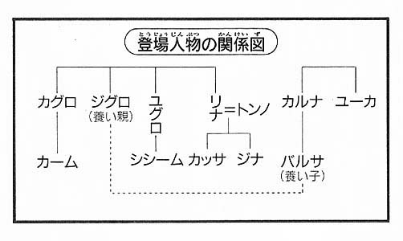

| 闇の守り人 | |
| 上橋菜穂子 | |
|
闇の守り人
上橋菜穂子
|
目次
序章 闇のなかへ
第一章 闇の底にねむっていたもの
１ ヒョウル〈闇の守り人〉
２ ルイシャ〈青光石〉
３ ユーカ叔母の施療院へ
４ 〈カンバル王の槍〉
５ 陰謀の素顔
第二章 うごきだした闇
１ 洞窟の石のにおい
２ 捕獲隊
３ 毒を塗った穂先
４ ティティ・ラン〈オコジョを駆る狩人〉
第三章 〈山の王〉の民
１ 王の使者きたる
２ ジグロのふたりの甥
３ 牧童の秘密
第四章 〈ルイシャ贈りの儀式〉
１ 老ラルーグ
２ 山の底へ
３ 儀式のはじまり
４ 弔いの槍舞い
終章 闇の彼方
闇の守り人
登場人物紹介
バルサ............この物語の主人公。女用心棒。わけあってジグロ・ムサに育てられる。
カルナ............バルサの父。カンバル王ナグルの主治医だったが、暗殺された。
ジグロ............百年にひとりといわれるほどの天才的な短槍使い。バルサの育ての親。
ナグル王.........カンバル国の先々代の王。弟ログサムによって暗殺された。
ログサム王......カンバル国の先代の王。奸計をもって兄の王位をうばった男。
ラダール王......現カンバル国王。ログサムの息子。
◆ムサ氏族
カッサ............トンノとリナの息子。
ジナ...............カッサの妹。
カグロ............ムサ氏族長。先代の氏族長の長男で、ジグロ、ユグロ、リナ（カッサの母）の兄。
ユグロ............カグロとジグロの弟。現在、〈王の槍〉の頂点に君臨する英雄。
カーム............カグロの長男。
シシーム.........ユグロの長男。
ドム...............氏族長の〈郷〉の警備長。ユグロの妻の弟。
◆ヨンサ氏族
ユーカ............バルサの叔母。バルサの父カルナの妹にあたる。施療院を営む医師。
ラルーグ.........ヨンサ氏族の元氏族長。〈ルイシャ贈りの儀式〉を経験したことのある長老として、全氏族から尊敬されている。
タグル............ラルーグの長男。ジグロを討つための追手となったが、ジグロに殺された。
ルーク............ラルーグの次男。現在の氏族長。
ダーグ............ラルーグの孫。〈王の槍〉のひとり。
◆牧童
トト...............全牧童の最長老
ヨヨ...............牧童の少年。カッサの友だち。
ナァナ............ヨヨの母。
◆新ヨゴ皇国の人々
タンダ............バルサのおさななじみ。薬草師。
チャグム.........新ヨゴ皇国の皇太子。かつて〈精霊の守り人〉にされたことがある。
トロガイ.........当代最高とうわさされる呪術師。

カンバル用語集
ヒョウル......〈闇の守り人〉
ルイシャ......青光石。闇のなかでみずから青くかがやく、非常に高価な宝石。
ラッサル......市場。
ナル............カンバル王国の貨幣単位。銅貨。百十ナルでヨゴ銀貨一枚と同額。
ロン............カンバル王国の時間の単位。三十ロンで約一時間。
カッル.........マント。どっしりと厚く織られており、風を通さない。
ガシャ.........芋の一種。荒れ地でも栽培できる。
ラ...............乳、もしくはバター。アクセントでわける。カンバル・ヤギの乳で作る。
ラガ............チーズ。カンバル・ヤギの乳で作る。
ラカール......乳酒。カンバル・ヤギの乳で作る。
ラコルカ......ラ（ヤギの乳）にコルカという茶葉を入れて煮たてる、まろやかなお茶。
ニョッキ......かむと口のなかがすっきりする、特殊な木の根。牧童たちがよくかんでいる。
ロッソ.........芋をつぶした粉をねり、なかにさまざまな具を入れて、カリッとあげたもの。
ジョコム......焼き菓子。
ユッカ.........あまずっぱい木の実。
トガル.........毒。植物からとる毒で、牧童がワシと戦うときによく使うが、少量をうまく使うと、瞳孔がひらき、闇のなかでも目が見えるようになる。
ユッカル......植物の名前。この葉の汁には温熱効果がある。
ティティ・ラン...〈オコジョを駆る狩人〉。昼は洞窟のなかにくらし、月の美しい夜は山の岩場で狩りをする小人。彼らの狩りをさまたげると、呪われて気が狂うといわれている。
トゥ・カル...〈大きい兄弟〉という意味で、ティティ・ランが牧童たちをよぶ呼称。牧童たちは、ティティ・ランをチル・カル〈小さな兄弟〉とよぶ。
スーティ・ラン...〈水流の狩人〉。高度な知性をもつ水性動物。
序章 闇のなかへ
バルサは、滝の上に立っていた。すぐ左わきに、洞窟が、ぽっかり口をあけている。その洞窟のなかから水流が流れでて、バルサの立っている岩棚から滝になり、はるか下の滝壺まで、ごう音をあげて流れおちているのだ。
バルサは、山の精気がたっぷりとしみこんだ水のにおいにつつまれて、もうずいぶんと長いこと立ちつくしていた。この高みからは、大地のしわのように、いくえにもかさなった青霧山脈がみおろせる。暑く、雨のすくなかった夏がすぎ、山の緑は、すこし色あせはじめていた。もうあと一月もすれば、燃えるような紅葉がこの山やまをおおうだろう。
いま、夕日がバルサの全身をあわい金色にそめて、右手の山陰にしずみはじめていた。
眼下にひろがる青霧山脈から南は、新ヨゴ皇国。バルサが、人生の大半をすごし、心からたいせつに思う人びとがくらす国がひろがっている。......そして、この岩山のむこうには、バルサのうまれ故郷──長いこと、思いだすことさえ苦痛だった故郷のカンバル王国がある。
旅人が行き来する、正式の国境の門は、ずっと西にあったが、バルサは、この洞窟をぬけて、ひそかにカンバルへもどろうと考えていた。
バルサは目をとじた。目のうらに夕日が赤くやどっている。
むかし、手をひかれ、泣きじゃくりながら暗い洞窟の闇をぬけて、この岩棚にたどりついたのも、こんな夕暮れどきだった。──あれから二十五年。もう二十五年もたってしまった。泣きながら、岩棚に立ちつくしていた六歳の少女には、はてしなくひろがる異国の景色が、ひたすらおそろしくみえたものだ。その異国で、どんな歳月が自分をまっているのか、思いえがくことさえできなかった。
二十五年の歳月をへて、いま、岩棚に立っているバルサは、すりきれた旅衣を身にまとい、あぶらっけのない黒髪をむぞうさにたばね、つかいなれた短槍に荷をひっかけてかついでいる、女用心棒だった。
バルサは目をとじたまま、短槍の柄にきざみつけてある模様を、指でそっとなでた。
（ひとつめの枝道を右。ふたつめの枝道も右。みっつめの枝道は左......。）
その模様がしめす洞窟の道筋を、たしかめるようによみあげていた、養父のジグロの太い声が、耳の底によみがえってくる。
カンバル王国は山国で、国土の大半が、母なる山脈とよばれているユサ山脈にそってひろがっている。そして、そのユサ山脈の地下には、いく筋もの洞窟が、まるでクモの巣のようにのびているのだった。カンバルの子どもたちは、もの心つくと、洞窟にはけっしてはいらぬようにと、親たちから、きつくいいきかされる。太陽の下はカンバル王の国。けれど、山の下は、〈山の王〉が支配する闇の王国なのだから、と。洞窟は、〈山の王〉の家来、おそろしいヒョウル〈闇の守り人〉たちが行き来する〈闇の道〉。もし、子どもがまよいこみでもすれば、かならず食い殺されるのだよ、と。
それでも、カンバルの子で、ちょっとでも洞窟にはいったことのない子は、いないだろう。カンバルの洞窟は、奥にはいるにつれてすこしずつ地層がかわる。最初は石灰質の灰色の岩壁だが、すこし奥にはいると、つるつるの白磨石の岩壁にかわるのだ。そして、ずっとずっと奥になると緑白石の岩壁になり、山の、もっとも深い底、〈山の王〉の宮殿は、みずから青く光る、この世でもっともうつくしい宝石、ルイシャ〈青光石〉でできているといわれていた。
カンバルの子にとって、白磨石をもってかえることは、たいへんな勇気のあかしだった。白磨石をもってかえれたということは、日の光がとどかないところまで洞窟にはいったという証拠だったからだ。......だが、数年にひとりかふたり、そうやって肝だめしに洞窟にはいったきり、もどってこない子もいたのである。おとなたちがいうように、ヒョウル〈闇の守り人〉に食われてしまったのか、それとも、ふくざつに枝わかれする洞窟で、まよってしまったのか......。
だから、洞窟のおそろしさは、六歳のバルサの胸にも、しっかりときざみこまれていた。
かぞえきれぬほどの戦いを、おのれの力と度胸ひとつできりぬけ、生きぬいてきたいまでさえ、こうして洞窟の闇のそばにいると、恐怖が胃のあたりからこみあげてくる。
ほんとうなら、旅人として、正式に国境の門をぬけたほうがよいのだ。
バルサの父を殺し、バルサと養父のジグロを十五年ものあいだおいつづけた男──カンバル王ログサムは、十年もまえに病をえて死んでいる。ログサムが王位につくために、どれほどおそろしいことをしてのけたか、知っている者は、もうこの世にバルサしかいない。堂どうと国境をこえてカンバルにもどっても、なんの危険もないはずだった。
だが、バルサは、この洞窟をぬけて故郷へもどりたかった。洞窟の暗闇を、自分ひとりの力でぬけて故郷にもどる......そうせねばならないような気がするのだった。
バルサは、これまでずっと、故郷をわすれようとしてきた。バルサにとって、故郷は、ふれれば痛む古傷のようなものだったからだ。
からだについた傷は、ときがたてばいえる。だが、心の底についた傷は、わすれようとすればするほど、ふかくなっていくものだ。それをいやす方法はただひとつ。──きちんと、その傷をみつめるしかない。
バルサは、目をあけた。そして、ひとつ大きく息をすうと、眼下の青霧山脈と、その山ふところにくらすたいせつな人びとに、心のなかで、しばしのわかれをつげた。
バルサは、くるりと青霧山脈に背をむけて、洞窟の暗闇へと足をふみいれていった。
第一章 闇の底にねむっていたもの
１ ヒョウル〈闇の守り人〉
水流に足をとられぬよう気をつけながら、バルサは壁ぎわのかわいた岩づたいに歩いていた。背後の光が小さな点になり、やがて消えさった。目をあけているのか、とじているのかもわからない暗闇のなかを、片手で岩壁にふれながら、バルサは、ゆっくりと歩きつづけた。
（洞窟に、明りをもちこんではいけない。）
ジグロの声が耳の奥によみがえってきた。二十五年もまえのことなのに、まるで、昨日のことのように思いだせるのが、ふしぎだった。
（ヒョウル〈闇の守り人〉は、炎をにくんでいる。松明や旅灯をもってはいったら、そのにおいをかぎつけて、おそってくるんだ。生きて洞窟をぬけたければ、岩壁つたいに、ゆっくりと歩いていくしかない。──おれは洞窟をぬける方法をよく知っている。心配するな。）
いま思うと、あのときジグロは、おびえて泣いているバルサを、彼らしい不器用なやり方で、元気づけようとしていたのだろう。
ジグロは無口な男だった。バルサの父カルナは、よく話し、よくわらう男で、ジグロとは、まったく性格がちがったのに、ふたりはほんとうになかがよかった。毎晩のように、ふたりが酒をくみかわしていたのを、ぼんやりとおぼえている。
バルサの父は、カンバル王ナグルの主治医だった。ジグロの話によれば、カルナは天才的な医術師で、王に気にいられて、三十二歳という若さで王の主治医になったのだそうだ。......皮肉なことだが、その幸運が、のちの悲劇をまねいたともいえる。
ナグル王の父、ヨラム王は、四人の妃をもち、四人の王子と五人の王女にめぐまれた。王子たちは、年頃になると、王位をめぐってみにくい争いをはじめたが、ヨラム王がきゅうな病で崩御すると、けっきょく長男だったナグルが王位をついだ。
だが、ナグルの王位は長くはつづかなかった。次男のログサムはおそろしい男で、いったんは兄のナグルに王位をゆずり、安心させておいて、ある陰謀を実行にうつす機会を、ずっとうかがっていたのだ。
ナグル王は、うまれつき病弱だったが、ある年の冬、ひどい風邪をひいて、春になっても病床からおきられなかった。......それは、ログサムがまっていた絶好の機会だった。
ログサムは、ひそかにバルサの父カルナを自室によび、ナグル王の毒殺をめいじた。
王の主治医であるカルナならば、薬をのませるとみせかけて、毒をもることも、その死を病死であるようにみせかけることもできるからだった。
もし、王の毒殺に失敗したり、秘密をもらす気配をみせれば、そくざに娘を殺す、とログサムは、カルナをおどした。ログサムのおそろしさを知っていたカルナは、娘の命をまもるために、ナグル王を毒殺したのだった。
だが、カルナは、ログサムのいいなりになりながら、ひそかに、ひとつの抵抗をこころみた。
急な死は、毒殺の疑いをまねきやすい。ジョルガという毒をつかえば、ゆっくりからだが衰弱して、やがて死にいたるので、王が病で死んだことをだれもうたがわないだろう。ジョルガをつかわせてくれ、と、ログサムにたのんだのだ。
ログサムはジョルガをつかうことをゆるした。毒をもりはじめるまでは、ログサムは、カルナをきびしく監視しつづけたが、カルナが約束をまもって毒をもりはじめて数日たち、王が目にみえて衰弱しはじめると、ログサムは気をゆるめた。──ここまできてしまえば、カルナが、うらぎれるはずがなかったからだ。
カルナは、必死の思いで、ログサムの監視がゆるむのをまちつづけた。そして、ほんのわずかなすきをみつけて、ようやく、親友のジグロにあうことができたのだった。
ジグロは、当時、王の武術指南役として城のなかでくらしていた。カルナは、ジグロにすべてを話し、娘のバルサをつれて逃げてくれとたのんだ。王が死ねば、毒殺の真相を知る自分を、ログサムが生かしておくはずがない。ログサムのことだ。秘密を知る自分だけでなく、後難をおそれて、娘も殺してしまうだろう。妻を病でうしなっていたカルナにとって、バルサは、すべてだった。──そして、その血をはくような親友のたのみをかなえるために、ジグロは、自分のそれまでの人生のすべてをすてたのだった。
バルサは、あの六歳の日の夕方を、いまでもはっきりとおぼえている。父は、もう何日もお城からもどってこず、子守の婆やとふたりきりで、父のかえりをまっていた。
父がかえってくるのがみえるのではないかと思って、バルサは窓敷居にすわり、足を庭のほうに、ぶらぶらさせていた。カンバルの冬は長くきびしかったから、カンバルの家は、ぶあつい石壁でできている。だから、窓敷居は、バルサにとってはお気にいりの椅子のようなものだった。
春のおわりのあたたかい夕方で、大気には、かすかにあまい花の香りがただよい、庭をぐるりとかこんでいる石積みの塀の影と、庭木の影が、長く草地にのびていた。
ふと、なにか、やわらかい物がぶつかりあったような、にぶい物音がした。はっとして、音のしたほうをみると、背の高い男がわきになにかをかかえて、庭の木戸をあけてはいってくるのがみえた。その男がジグロで、わきにかかえているのが人だ、とわかった瞬間、足もとから、寒気がはいあがってきた。
ジグロは、バルサに気づくと、口に手をあてて、声をだすなというしぐさをした。それから、わきにかかえていた男を塀の内側の植えこみの陰におろした。そして、手早く手足をしばって、木にくくりつけ、猿ぐつわをはめてしまった。
そっとこちらにおりてこい、というジグロのしぐさにしたがって、バルサははだしで庭におりた。なにがおきているのかわからなかったが、急に、あたりの色がかわってしまったような気がして、夢をみているような、たよりない気分になったのをおぼえている。
ジグロはバルサの肩をつかむと、耳もとでささやいた。
「お父さんに、おまえをつれて逃げるようにたのまれた。いますぐ、おれといっしょにくるんだ。」
バルサは、うろたえて、ジグロをみあげた。
「でも、婆やが、すぐに夕食だって......。どこかいくなら、婆やにいわなくちゃ......。」
「婆やにいってはだめだ。おれとおまえが逃げたことを知っていると、婆やにも迷惑がかかる。......みろ、あそこにいるやつは、おまえを殺すために、塀のむこう側に、ずっとひそんでいたんだぞ。死にたくなかったら、おれのいうとおりにするんだ。」
腕をつかまれて歩きだしながら、バルサはべそをかいた。
「靴が......。」
つぶやくと、ジグロは、ああ、といって、背おっていた袋から靴をとりだした。はいてみると、バルサにはかなり大きかったが、ジグロは革ひもをきつくむすんで、これでがまんしろ、といった。
ジグロの大きな手に腕をつかまれて、バルサはひきずられるようにして庭をでた。まさかそれが、長い長い逃亡のはじまりだなどとは、知りもしないで......。
暗闇のなかを歩きつづけながら、まるで泉のように流れでてくる思い出に、バルサは、知らずしらずくちびるをかみしめていた。
ジグロにつれられて、この闇のなかを逃げてから、ログサムが死ぬまでの十五年間は、地獄のような日々だった。
逃げだして半年ほどたったとき、カンバルからヨゴへ出稼ぎにきていた男たちから、父のカルナが強盗に殺された、という話をきかされた。いつか父にあえる......それだけを心のささえにして生きてきたバルサには、それは、あまりにもむごい衝撃だった。
そのとき、ジグロは、まるでおとなに話すように、すべての事情を話してくれたのだ。なぜ父が殺されたのか。なぜ、自分がジグロと逃げなくてはならなくなったのか。
あのとき心にめばえた憎しみは、いまもかたいしこりとなって、胸の底にのこっている。
バルサは、ログサムを殺すことを心にちかった。そして、ジグロに武術をおしえてくれ、とたのみこんだ。ジグロは、首をふった。
「武術は男のものだ。どんなにがんばってみても、女の筋肉では、たいしたことはできまいよ。それに、おまえは、まだ子どもで、骨がやわらかい。へたに修行すると、からだのそだちがわるくなる。」
だが、バルサはあきらめなかった。ジグロが夜明けに、ひとりで稽古をはじめると、それを食いいるようにみつめて、動きをまねた。ジグロは、金持ちの商人の用心棒になって、生活のための金をえていたから、なにかで争いがおきると、バルサはすっとんでいって、ジグロの動きをみつめ、ジグロの戦い方を学ぼうとした。
そして、ある日、おそろしいことがおきた。ログサムがはなった討手が、バルサたちをみつけたのだ。
バルサは、それまで、ずいぶんとジグロが戦うところをみたが、そのときみた戦いほど、おそろしいものはなかった。ふたりの動きは、まるで、舞いをまっているようだった。槍と槍が、目にもとまらぬはやさで空をまい、つき、うち、はねあげあう......。
ジグロの肩を討手の槍がきりさいたとき、ジグロの槍が、ふかぶかと討手の胸をさしつらぬいた。
バルサは、血のにおいと、死の苦しみを目のあたりにして、すくみあがってしまっていた。だから、ジグロが討手の死体の上にくずれおちたとき、ジグロも傷のせいで死にかけているのだと思っても、うごくことさえできなかった。
だが、ジグロは死にかけていたのではなかった。死体の上に、かぶさるようにして、泣いていたのだ。──ジグロが泣くのをみたのは、あれがはじめてだった。声をださずに、ジグロは、身をふるわせて泣いていた。
ジグロが泣いたわけを知ったのは、それからずいぶんたってからだった。
ログサムというのは、つくづくおそろしい──そして、つくづくきたない男だった。ログサムがはなった討手は、ジグロのたいせつな友人だったのである。
ジグロは、その事件のあと、バルサに武術をおしえてやるといいだした。自分が討手に殺されても、バルサが生きられるようにと思ったのだろう。
バルサは、まるで、なにかに憑かれたように武術に熱中しはじめた。からだのなかに、どろどろの熱いかたまりのようなものがあって、その熱さを外へふきだすように、槍をふり、こぶしをつきだしていた。わずか八歳の少女が、怪我をするのもおそれずに、くるったように修行をつづけるのをみたジグロは、
「......おまえは、天性の武人だ。おまえが武術をやるようになるのは、運命だったのかもしれんな。」
と、つぶやいたものだ。その後いった言葉が、いまもバルサの胸にやきついている。
「ふしぎなもんで、武術をやる者には、争いごとがむこうからやってくる。......できれば、おまえに、そんな血まみれの人生を歩ませたくなかったが、こうなったら、おれにできるのは、おまえをきたえぬいて、生きのびる力をつけてやることだけだな。」
逃げても逃げても、討手はやってきた。
ジグロはつよかった。──ほんとうに、だれよりもつよかった。ログサムが死ぬまでの十五年間に、彼は、バルサと自分の命をまもるために、八人の友を殺したのだった......。
かすかに、大気の流れがかわったのを感じて、バルサは、はっともの思いからさめた。
（......ぼうっとしてると、まよっちまうぞ。）
バルサは、自分をしかって、そろそろと岩壁を手さぐりした。すこし腕をのばしたところで、指先が岩壁をはずれ、宙を泳いだ。──最初の枝道だ。
バルサは、槍の模様をたしかめた。槍の柄にきざんだ模様は、ジグロが死んだとき、彼の槍から自分の槍にうつしとったものだ。──そのときは、カンバルと新ヨゴ皇国をむすぶ洞窟の枝道をしめしたこの模様を、つかう日がくるかどうか、自分でもわからなかったのだが。
失敗しても、まがった数と方向さえおぼえておけば、もとの場所へはもどれる。そう自分にいいきかせて、バルサは枝道をまがった。
しかし、いくら道がわかっているといっても、こんなぬりこめたような闇のなかに長いあいだとじこめられていると、たえず胸がおさえられているようで、息ぐるしい気持ちになってくる。いっこくもはやく、外へでたいという思いがつのる。
バルサは、走りだしそうになるのを、意志の力で必死におさえた。走れば、闇のなかに足音が高くひびく。こんな洞窟のなかなら、はるか遠くまで足音がつたわるだろう。ヒョウル〈闇の守り人〉に気づかれたら、生きて外へはでられない。
（......バカなこだわりだったかな。）
わざわざこの洞窟をぬけるのをえらんだことを、バルサは後悔しはじめていた。
（まあ、いいさ。いまさら後悔してもしょうがない。）
枝道をまがると、バルサはそろそろと左の岩壁をはなれて、数歩あるいて右の岩壁に手をあてた。つぎの角は、右にあるはずだったからだ。
（右にまがり、そのあとは左、左で外のはずだ。）
さっきまで、たえずきこえていた水音が、ずいぶん遠くなっていた。草鞋をはいているバルサは、ほとんど足音をたてなかったが、水音が遠くなると、自分の息の音さえ、大きくきこえるようになっていた。
異変がおきたのは、右の枝道にはいったときだった。
最初に感じたのは、においだった。さすような煙のにおい。
（松明だ。──しかも、獣脂をねりこんだ松明......。）
いっきに、はるかむかしの記憶がよみがえってきた。真冬の吹雪の夜。獣脂をねりこみ、吹雪のなかでも消えないようにした松明をもって、家にもどってくる父の姿......。
悲鳴が、バルサを現実にひきもどした。
なにをいっているのかわからぬ悲鳴が、また、洞窟じゅうに反響して、ひびきわたった。かんだかい、子どもの悲鳴だった。
バルサは、すばやく荷をおくと、短槍だけをもって、足もとに気をつけながら、ゆっくりと走りだした。いく本も枝わかれしている洞窟に反響しているので、悲鳴がどこからきこえてくるかわかりにくかったが、幸いなことに、一本の枝道にさしかかったとき、明りがみえた。
バルサは、自分がきた方向を頭にきざみつけて、その枝道にとびこんだ。闇になれた目には、松明の明りが、昼間の光のように明るく思えた。しかも、その松明の光が、白磨石の岩壁に反射して、かなり広い洞窟全体が、明るくかがやいていた。
口笛のように高い音がひびいてきた......、と思うまもなく、光る筋が宙をきってとび、松明の炎にあたったのがみえた。つぎの瞬間、松明の火が消えた。
火が消えるまでのみじかいあいだに、バルサは、松明をかかえて、岩壁に背をあて、すくんでいた少年の姿と、そのむこうにたおれている、小さな少女とを脳裏にやきつけていた。
火が消えると、闇がもどってきた。バルサは、少年が立っていたあたりへ、手探りで歩きだした。火の消えた松明の煙のにおいが鼻につく。あえいでいる気配で、少年が、まだ生きていることがわかった。血のにおいもしない。たぶん、怪我もしていないはずだ。
少年のそばにたどりつくと、バルサは肩のあたりをつかんだ。少年のからだが、びくんっとふるえた。
「悲鳴をあげるな！」
バルサは、鋭い声でせいした。
「どうした？」
バルサがささやくと、少年が、せきこむようにいった。
「い、妹が......、そこに、ヒョウルが......。」
バルサは、さっき少女がみえたほうへ目をやった。殺気とはすこしちがう、きみょうな気配が、闇のなかでうごめいている。
バルサはそちらへ槍をむけて、呼気をととのえた。
潮が満ちてくるように、全身に熱い闘気が満ちてくるにつれて、世界がちぢんでいくような感覚がおとずれた。むかいあった敵と自分以外の世界が、すうっと消えていく。──戦いのとき、いつも感じるきみょうなしずけさが、身のうちに満ちた。
と、ぼうっと燐光のような青い光がみえたような気がした。おさないころから、闇のなかで戦う方法を、ジグロからたたきこまれてきたバルサは、ふつうの人よりはるかに夜目がきく。それでも、完全な闇のなかでは、なにもみえるはずがない。やはり、むこうに、なにか青い光をはっする物がいるのだ。
目をこらさず、むしろ、すこし視線をずらすようにすると、ぼんやりと青い光をはっしている物が、人のような姿をしているのがわかった。
（......あれが、ヒョウル〈闇の守り人〉か。）
さすがに、腹の底が冷たくなった。
一歩足をふみだすと、ヒョウルもこちらへ足をふみだしてきた。短槍をかまえると、ヒョウルもまた、なにか長い物をこちらにむけるのがみえた。──まるで鏡をみているようだった。
ふいに、全身が熱くなった。むっとするような熱いものが、自分とヒョウルのあいだをつないでいる。
波がよせてきたように、熱いものが、ドンッと胸につきあたった瞬間、バルサは、地をけって、ヒョウルにつっこんだ。
短槍がヒョウルにとどいた、と思ったとき、バルサは腹に寒気を感じて、はっと身をねじった。黒い風がわき腹をかすった。考えるよりさきにからだがうごき、バルサは短槍であいての武器をはじきあげた。かたい手ごたえがあって、火花が散ったせつな、はじかれた武器が、そのまま弧をえがいてふりおろされてきた。
めまぐるしく槍同士がつき、はじき、はねあげ、風車のように旋回する。もはや、バルサは目にたよっていなかった。意識はどこか遠いところへ消えさり、からだにしみこんだ動きが、ぎりぎりのところで、あいての槍をかわし、反撃するにまかせていた。
そのうちに、バルサは、ふしぎな感覚にとらわれはじめた。夢のなかで舞いをまっているような、ぼうっとした心地よさが、身の底から全身にひろがっていく。あいての動きにさそわれて、ともに舞いをまっているような心地だった。
槍は、うなりをあげて、すさまじいはやさでたがいに攻撃しあっているのに、まるで、ときが、ぬるい液体にかわってしまったようだった。
なぜか、むかいあっているあいてを、よく知っているような、ふしぎな、なつかしさがこみあげてきた。
（......こんなことが、むかしあった。）
そんな思いが頭にひらめいたとき、ふきあれていた風が、すこしずつおだやかになっていくようなしぜんな動きで、槍の動きがゆるみはじめ、やがて、ふたりの槍は、そっと動きをとめた。
バルサは、大きく息をはいた。──そして、いままで自分が息をとめていたのだ、と気づいた。あれほど長く感じられた戦いは、ほんの息をとめていられるほどの時間でしかなかったのだ。
むかいあっている人影が、かすかに礼をしたような気がした。バルサもまた、かすかに頭をさげた。ぼんやりと青く光る人影が、するすると後退し、闇のなかへとけさっていくのを、バルサは、ぼうぜんとみおくっていた。
（......いまのは、なんだったのだろう。）
バルサは、心のなかでつぶやいた。ヒョウルと命がけの戦いをした、という気分ではなかった。まるで、言葉ではないなにかで、ヒョウルと話をしていたような、きみょうな気分だった。
そして、つぎの瞬間、あることが頭にうかび、バルサは、全身に冷水をあびせられたような気持ちになった。
（いまのは、〈槍舞い〉だ！ ......）
むかし、たった一度だけ、おなじことがあった。ジグロと稽古をしているうちに、あんなふうに、たがいの技がからみあい、ひとつの流れになってしまったのだ。
そのときジグロが、なんともいえぬ目でバルサをみて、つぶやいたのだった。
「これは〈槍舞い〉だ。──おまえの技は、とうとう、ここまでたっした......。」
と。
バルサは、ぶるっとふるえた。全身に冷たい汗がふきだし、手足がすうっと寒くなった。
たったいままで、自分とむかいあっていたのは、ヒョウル〈闇の守り人〉ではなく、ジグロだったのではないか......。
（──ばかな。ジグロは六年もまえに死んでいる。この手で埋葬したんだ。）
バルサは、自分をしかりつけた。
そのとき、背後で、かすかな声がきこえた。少女の声だった。バルサは、はっとわれにかえって、ふりむいた。声をたよりに少女のところへいくと、バルサは、そっと少女にふれた。
「もうだいじょうぶ。ヒョウルはいってしまったよ。──どこか怪我をしているかい？」
すすり泣きながら、少女がつぶやいた。
「足が、痛い。」
少年が、おそるおそる歩いてくる気配がして、たよりなく泳いでいた手が、バルサの頭にふれた。バルサは、その手をとって、少女のほうへみちびいてやった。
「ジナ、だいじょうぶか？」
少年がささやくと、少女の声が大きくなった。
「お、お兄ちゃん！」
バルサは、ふたりにささやいた。
「もうだいじょうぶ。──とにかく、ここからでよう。わたしがこの子をおぶってやるから、あんたは、わたしの槍につかまって、しずかについておいで。」
バルサは、脳裏にやきつけた記憶をたどって自分の荷物をおいてきたもとの通路までもどった。
三人がようやく外にでたのは、月が西の空にかたむきはじめたころだった。
２ ルイシャ〈青光石〉
洞窟の外にでると、おどろくほど冷たい夜気が全身をつつんだ。雪のにおいがする。夏も雪をいただく、母なるユサの山なみからふいてくる、夜の息だ。
故郷の夜のにおいにつつまれて、バルサは思わず足をとめ、空をみあげた。黒ぐろとよこたわるユサの山やまの雪の峰が、銀砂をまいたような満天の星月の光に青くきらめいている。
「......あの、......。」
少年がバルサをみあげた。月明りにぼんやりとみえる少年は、十四、五ほどにみえた。満月のような丸顔だが、がっしりとしたからだつきで、バルサより頭ひとつ背が低かった。
カンバル・ヤギの皮をなめし、シクという染料でそめた衣をぶあつい革の帯でしめ、その帯の背に短剣をつるしている。武人階級の少年の服装だった。
「......あの、ありがとうございました。」
声がわりしたての、ききづらい声だった。
「ああ。生きてでられて、おたがい幸運だったね。」
そういってから、バルサは、すこしきびしい声でつけくわえた。
「だが、妹をつれて肝だめしをするなんて、短剣をさずかった一人前の男のやることじゃないよ。あんた、妹の命まで危険にさらしたんだよ。」
少年が、ひるんだようにまばたきした。すると、背中から少女が口をはさんだ。
「ちがうんです。......白磨石をとりにはいったのは、お兄ちゃんじゃなくて、わたしなの。」
いがいにしっかりとした声だった。洞窟のなかで、ちらっとみたときには、十歳ほどかと思ったが、十二、三なのかもしれない。
「〈郷〉に、いやなやつがいて......、〈氏族長筋〉のうまれだってことを、いつも鼻にかけてわたしたちをわらうの。兄さんやわたしは傍系のうまれだから、白磨石をとりにはいったら、かえってこられないなんて。だから、わたし......。」
バルサは、笑みがもれてくるのをおさえられなかった。
「なるほど、理由はわかったけどね、命をかけるには、すこし軽すぎる理由だよ。洞窟を、あまくみちゃいけない。──あんたたちは、今夜、死ぬところだったんだよ。」
ふたりは、だまりこんでしまった。ヒョウル〈闇の守り人〉をみた恐怖がよみがえってきたのだろう。背中に、少女のふるえがつたわってきた。バルサは、少女をゆすりあげた。
「もう二度と洞窟にはいるんじゃないよ。」
少女がうなずく気配がつたわってきた。
「よし。......さて、あんたたちは、このちかくの〈郷〉の子なのかい？」
「はい。あの、ぼくはカッサといいます。ムサ氏族のトンノの子です。妹はジナといいます。」
バルサは、どきりとして、まじまじと少年の顔をみた。こういうのを運命の糸にたぐられた、というのだろう。ムサ氏族は、ジグロの氏族だ。トンノという名はきいたことはないが、二十五年ぶりに故郷にかえって、はじめてであったのが、ジグロの氏族の子だったことになる。
（......そうか。）
バルサは、心のなかでつぶやいた。ここが、ジグロの氏族の氏族領だったからこそ、彼は、この洞窟にくわしかったのだ。バルサをつれて逃げねばならなくなったとき、この洞窟をぬけて新ヨゴ皇国へ逃げる道をえらんだのには、そういう理由があったのか......。
「あの、あなたは、異国の人なんですか？」
おずおずとたずねるカッサの声で、バルサはわれにかえった。
「え？」
「その、なんだか、新ヨゴ皇国の人のような服をきているし、言葉も、なんか......。」
「ああ。」
ジグロが死んでからは、ほとんどカンバル語など話すことがなかったから、さっきから、カンバル語を話すたびに、古い記憶をよびおこしているような、きみょうな感じがしていた。それが、少年たちにも感じられたらしい。
「いや、うまれはカンバルだよ。ただ、長い長い旅をしていたから......。」
いいながら、ふっとバルサの心に、警戒する気持ちがうごいた。
カンバルにもどってきたのは、できることならジグロの家族にあって、ジグロが逃げなくてはならなかったほんとうの理由をつたえたいと思ったからだ。けれど、そのまえに、自分とジグロの逃亡が、どんなふうに考えられているのか、まず、それを知っておく必要があると思っていた。
ジグロとバルサの逃亡は、王家の陰謀にまつわることだ──へたに身分をあかすと、とんだ危険をまねくかもしれない。
バルサは、これまで、世間の裏ばかりみて生きてきた。用心に用心をかさねることは、もう、身にしみついてしまった、くせのようなものだった。
バルサは、少年をみおろした。
「カッサとジナだったね。あんたたちに、たのみがある。」
カッサは、うなずいた。
「わたしと洞窟であったことは、だれにもいわないでおくれ。あんたが、妹をたすけたことにすればいい。」
暗くて、はっきりとはみえなかったが、カッサの顔がくもったような気がした。
肩の上からジナがたずねた。
「なぜ、あなたのことを話しちゃいけないの？いっしょに家まできてくだされば、父も母も、きっと、ごちそうでもてなしてくれるわ。ね、どうか、いっしょにきてください。」
「ありがとう。でもね、そうできないわけがあるんだよ。」
バルサは、人にあやしまれずにカンバル王国を旅するために、かねてから考えておいた口実を口にした。
「わたしは〈償い行〉のさいちゅうなんだ。」
〈償い行〉というのは、なにか重い罪をおかし、その罪をつぐなうまえに死んでしまった肉親や恋人の罪をつぐなうためにおこなう苦行をいう。カンバルでは、罪をおかしたまま死んだ人の魂は、地の底の〈山の王〉の国で奴隷となり、永遠の苦しみを味わうと思われている。その魂をすくうためには、だれかが、それまでの生活をすてて、他人によいおこないをする旅をせねばならない、と考えられていた。
それが真実なのかどうか、バルサにはわからなかった。おおくの国ぐにを旅するうちに、バルサは、それぞれの国で、死後、魂がどこへいくのか、みんなちがうことを信じているのをみききしてきた。どこの人びとがいっていることが正しいのか、バルサにはわからない。まあ、いずれ、死んでしまえば、いやでもわかることさ、と思っていた。
ただ、そういう〈償い行〉をしている者は、行をしているさいちゅうだということをしめすために、女が男の服をまとったり、赤い布を頭にまいたりする。カンバルでは、ふつう、女が短槍をもちあるくことはないので、バルサの姿はひどくめだってしまうが、〈償い行〉のさいちゅうだといえば、そんなかっこうをしている、うまい言いわけになると思ったのだ。
（それに......。）
バルサは心のなかでつぶやいた。
（じっさい、わたしは、ジグロのために〈償い行〉をしてるようなもんだから、まんざら嘘でもないし。）
バルサは、ふたりにいった。
「わたしは、自分のためじゃなく、養父の魂のために人だすけをしてるんだ。だから、あんたの両親に知られて感謝されたり、おいしいごちそうをふるまわれたりしたら、せっかくの善行の効力がなくなってしまう。ね？いいね、わたしにたすけられたことは、どうかないしょにしておくれ。」
ふたりは、なっとくしたようだった。
「ここから、ふたりだけでかえれるかい？」
バルサがきくと、カッサがうなずいた。
「よし。......あ、そうだ、あんた松明はどうした？」
「まだもってます。火は消えちやってるけど......。」
バルサは、カッサがもちあげてみせた松明をみて、眉をひそめた。松明の上のほうが、まるで鋭利な刃物で、スパッとそがれたように、まったいらになっていた。
あのとき、口笛のような音とともに、なにか光る物が松明にとんだのがみえたが、ヒョウルが刃物でもなげたのだろうか。
（刃物だとしたら、よほどひろい刃の、よくきれる刃物だな。松明をまっぷたつにするくらいなら刃物でできるだろうが、炎を一瞬で消すなんていう芸当が、刃物をなげてできるもんだろうか......？）
バルサは首をかしげたが、いまは、そんなことを考えているときではないと思いなおした。
バルサはジナを背からおろして、カッサに背おわせると、袋から火口箱をとりだして、てばやく松明に火をつけてやった。松明をジナの手にもたせて、バルサはカッサにたずねた。
「これで、館までもつかい？」
「はい。」
はじめて、カッサの顔がはっきりとみえた。丸顔で、目も鼻も小さい。すこし気弱そうだが、妹思いの兄らしい、きまじめな顔をした少年だった。背おわれているジナのほうは、三つ編みにした髪をうしろで丸くゆった、色のあさ黒い少女で、いまはまだ、目におびえの色がのこっているが、きゅっとむすんだくちびるのあたりに、気丈さがあらわれていた。
「さて、じゃあ、さよならだ。」
そういってから、バルサは、ふっと思いついて、ふたりにたずねた。
「そうだ。ここからいちばんちかいラッサル〈市場〉のいき方をおしえてくれるかね。」
「いちばんちかいラッサルは、スラ・ラッサルです。ここから、あっちへまっすぐ谷の底におりていけば、三十ロン（約一時間）くらいでいけます。スラ・ラッサルは、ムサ氏族領ではいちばん大きなラッサルだから、宿屋もありますよ。」
バルサは礼をいって、ふたりに背をむけた。カッサは宿屋があるといったが、今晩は宿に泊まる気はなかった。野宿をし、明日、日が高くなって、旅人がうろついてもおかしくない時間になってから、ラッサルでカンバルの服を買おう。なにをするにしても、すべては、それからだ、とバルサは思っていた。
バルサが足早に闇のなかへきえてしまうと、ふたりは家へむかって歩きはじめた。
「......お兄ちゃん。」
ジナがつぶやいた。
「お兄ちゃん、......ごめんね。」
カッサはこたえなかった。あやまればすむようなことじゃねぇや、と思ったからだ。
日がみじかくなり、灯火用の油をむだづかいしないために、このごろは、おそい朝食とはやい夕食の二食しか食べない。そのはやい夕食をおえて、ジナは、日がしずむころには、寝床にはいったはずだった。カッサは、短槍の稽古があったので、日がくれてから家にかえってきた。
そして、屋根裏部屋の小さな窓から、ふとい綱がたれているのを発見したのだった。
カンバルの平民の家は、雪がたまりにくい急勾配の屋根と石積みの壁にかこまれ、一部屋しかない。家族が何人いても、その一部屋で、ぎゅうぎゅうづめになってくらしている。
だが、カッサの家は武人階級なので、いちおう屋根裏部屋があり、その屋根裏部屋が板壁で二つにくぎられ、カッサとジナの部屋になっていた。──とはいえ、部屋とは名ばかりで、まっすぐに立つと、ジナでさえ頭がつかえてしまうほど、せまいのだった。
とにかく、その屋根裏部屋の煙だしの小窓から、ぶらん、と綱がたれていたのだ。その綱をみたとたん、カッサは、妹がなにをしようとしているか、わかった。それで、両親にばれないよう、いつものように寝床にはいり、ねむったようにみせかけてから、そっと窓からぬけだして、ジナのあとを追ったのだ。
とちゅう、道具倉によって松明を一本とり、それをもって洞窟へ走った。足のはやさには自信があったから、洞窟につくまでにジナをつかまえられるんじゃないか、と思っていたが、そううまくはいかなかった。カッサは、それまで一度も洞窟にはいったことはなかった。肝だめしだの、なんだのといって、洞窟へはいるやつの気が知れなかった。そんなことのために、どうして、わざわざ命の危険をおかす必要があるんだろう？度胸をしめしたいなら、ほんとうに必要なときにしめせばいいのだ。なんの意味もないことで、危険な目にあうなんて、ばかげてる、と思っていた。
だが、ジナが洞窟へはいろうと思った気持ちは、カッサにもよくわかる。シシームの、カッサたちをみくだしている態度には、ほんとうに腹がたつからだ。おなじ武人階級の者でも、氏族の長の直系以外は、じつはほんとうの武人ではないんだなんていいやがって......。
今日の昼、〈郷〉の学堂でシシームがいった言葉は、とくにカッサとジナの心を傷つけた。
シシームは、父がおしえてくれた秘密をおしえてやるよ、といった。
「ほんとうはな、ぼくや父上のような、〈氏族長筋〉の武人以外は、異国との戦争のための兵士にすぎないんだ。
ぼくの場合は、いつか、父上のように〈王の槍〉として、洞窟の奥ふかく足をふみいれ、〈山の王〉の戦士であるヒョウル〈闇の守り人〉とむかいあう日がくるかもしれないけどね。」
重おもしい口調でシシームはいい、カッサをみおろして、つけくわえた。
「だが、秘儀を知っているぼくとちがって、おまえたちは洞窟へはいったら死ぬだけなのさ。」
カッサがこたえるまえに、かっとなったジナが、さけんだ。
「へえ？ あんたは洞窟にはいっても死なないっていうのね？じゃあ、証拠をみせてよ。白磨石でも、もってるっていうの？」
シシームは、子どもはしょうがない、という目でわらった。そして、ふところに手をいれると、すきとおるように白い、すべすべの石をとりだしたのだった。
「ほら、みせてあげよう。これが、白磨石さ。」
てのひらにのせた石を、シシームはそっと親指でなでた。
「〈氏族長筋〉の男子はね、十五になると、ひとつひとつ、父親から秘儀をおそわるんだよ。そして、長い修行にはいるんだ。もちろん修行の内容は秘密だからいえないけれどね、ぼくは、もう一年以上も修行をつづけてるから、子どもの肝だめしなんて、あそびにしか思えない。」
そのとき、カッサは、シシームの声が遠くなったような気がした。
シシームは背が高く、力もつよかった。それにひきかえ、カッサは、ほこれるのは足のはやさと短槍をあつかう器用さだけで、氏族の少年たちのなかでも、背がとくに低く、力もつよいほうではなかった。
だが、そういうことと、いま、シシームにいわれたことは、まったくちがうことなのだ、と、カッサは思った。
背が低くても、力が弱くても、努力すれば、すこしずつ、武術の技は上達していくだろう。けれど、うまれは、どうすることもできない。おなじ氏族領にうまれても、平民や牧童の少年は、けっして武人になれないのとおなじことだ。
カンバルの最高の武人は、〈王の槍〉とよばれている。ふだんは王都でくらし、いざというとき、王をまもる最後の壁となる九人の男たちである。
だが、〈王の槍〉をなによりかがやかせているのは、彼らこそ、カンバルに生きる地上の民の代表として、地下の王である〈山の王〉とまみえる男たちである、ということだった。
この〈王の槍〉には、各氏族の〈氏族長筋〉の男からしかえらばれない。
〈氏族長筋〉というのは、各氏族の、初代の氏族長の血をひく男たちのことだが、カンバルでは、武人の血は男親から息子へ流れるといわれ、たとえば、氏族長の娘の子は〈傍系〉とよばれて、〈氏族長筋〉であるとは、みなされない。
〈氏族長筋〉の少年たちは、短剣をさずかり、十五、六歳になると、みな〈郷〉をはなれて王都へで、王都にすむようになる。王都で、上流の武人としての洗練された行儀作法や知識を身につけるためだ。
その少年たちのなかから、各氏族ごとにひとりだけが〈王の槍〉の従者にえらばれ、やがて、つぎの〈王の槍〉になっていく。そして、〈王の槍〉の従者になれなかった少年たちのうち、もっとも年長の者は、つぎの氏族長として〈郷〉へかえっていくのだ。
〈王の槍〉にも氏族長にもなれなかった者たちのなかには、そのまま王都にのこって大臣などへ出世していく者もいれば、〈郷〉へもどって氏族長をたすけて生きる者もいた。
いずれ──ちかい将来、シシームは〈郷〉をはなれ、王都へいくだろう。そして、父のユグロのような、王国最高の武人〈カンバル王の槍〉のひとりになるかもしれない。
だがカッサは、父のトンノのように、〈郷〉の外郭のそばに家をかまえ、冬のあいだはとなりの新ヨゴ皇国に出稼ぎにいき、春から秋のあいだは、牧童たちとともにカンバル・ヤギを追い、牧童たちの管理者として生きていくのだ。──武人としての力が必要とされるのは、異国との戦がおきたときだけだ。
カッサは、シシームがうらやましかった。けれど、心のどこかで、あきらめてもいた。
けれど、ジナは、カッサより気がつよかったし、まだ、将来を、しかたがないこと、と、あきらめるには、おさなすぎた。
シシームとわかれて、家へかえるとちゅう、ジナはカッサをみあげていった。
「兄さん、わたしたちだって、氏族長の血は流れてるよね。」
ジナは母さんのことをいっているのだ。現在の氏族の長はカグロで、その弟がシシームの父、ユグロ。そして、カッサとジナの母は、カグロとユグロの末の妹だった。
「......そんなこと、なんの意味もないさ。武人の血は、父から息子へ流れるんだ。」
ジナは、むっとしたような顔で、カッサをみた。
「お兄ちゃんは、あきらめがはやすぎるのよ！平民の子だって、白磨石をもちかえった子はいるわ。」
だいじなのは、白磨石をもちかえれるかどうかじゃないんだ、と、カッサは心のなかでつぶやいたが、それを妹に説明する気にはなれなかった。ジナは、ふきげんそうにだまりこんでいたが、カッサには、ジナがなにを考えているのか、だいたい、わかっていた。
「ジナ、ばかなことすんなよ。」
ジナは、ちらっとカッサをにらんだ。
「ばかなことって、なによ。」
「白磨石をとりに、洞窟へはいろうなんて、考えるんじゃないぞってことさ。」
ジナがこたえるまえに、うしろから、友だちのララカたちが追いついてきたので、話はそこでとぎれてしまった。それから、いつもの一日がすぎていき、カッサは、屋根裏部屋の小窓から綱がたれているのをみるまで、その会話をわすれさっていた。
洞窟にたどりつき、松明の明りに、洞窟の床にのこっている小さな足跡がみえたとき、カッサは、ジナの度胸に舌をまいた。いくら家族にばれないためだとしても、真昼でさえおそろしい洞窟に、日がくれてからはいる子どもなんて、ジナぐらいのものだろう。
カッサは、洞窟の入口で、しばらくためらっていた。ここでまっていたら、ジナがもどってくるかもしれない、と思ったのだ。だが、まってもまっても、ジナはでてこなかった。
カッサの胸に、いやな予感がふくれあがってきた。
ジナは、松明をもっていないだろう。でも、ジナは、ああみえて慎重なところがあるから、きっと片側の岩壁に手をふれながら、ゆっくりはいっていったにちがいない。だから、まようことはないだろう、と思った。
とすれば、これほど長く、ジナはなにをしているのか......。
白磨石をほるのに手まどっているのかもしれない。白磨石があるところが、すごく遠いのかもしれない。──頭のなかに、いくつもの考えがうかんで消えたが、カッサは、どうしても、ヒョウル〈闇の守り人〉のことを、考えずにはいられなかった。
まえに、牧童のだれかが話していたことを、ふっと思いだした。ヒョウルは、夜になると洞窟の入口あたりまで、外のようすをうかがいにでてくることがある、という話だ。
（父上たちを、よびにもどろうか......。）
ちらっとそう思ったが、そんなことをしているあいだに、ジナがヒョウルにであったら......。
いても立ってもいられなくなって、カッサは、とうとう洞窟に足をふみいれた。右手で松明をもって、左手で岩壁にふれながら、足もとの、ざらっとする砂の上についているジナの足跡を追っていった。ヒョウルにきこえるのがこわくて、ジナの名もよべなかった。
洞窟は、奥にいくにしたがって、だんだんひろくなり、やがて、松明の明りが岩壁に反射して、きらきら光るようになってきた。
（白磨石だ......。）
つかのま、カッサはジナのことをわすれて、足もとにおちている小さな白磨石をひろいあげた。なんとも気持ちのよい、すべすべの石の感触をちょっとたのしんで、それをふところにいれた。
（なんだ、シシームのやつ。えらそうにいばるほどのことじゃないじゃないか。）
思わず、笑みがうかんだ。
そのとき、ふいに、とてもちかいところで、ジナの悲鳴がきこえた。カッサは、あわてて、声のきこえたほうへ走った。角をまがったカッサは、目にとびこんできた光景に、ぞっとした。松明の明りに、たおれているジナの姿と、その上に、おおいかぶさろうとしている黒い物がみえたのだ。
（ジナが、食われる！）
そう思ったとたん、からだがうごかなくなった。短剣に手をのばすどころか、全身がこおりついてしまったように、うごけなくなってしまったのだ。悲鳴さえあげられなかった......。
カッサは、妹のあたたかい重みを背に感じながら、つくづく、あの〈償い行者〉の女の人に感謝した。あの人が、あのときあらわれなかったら、ふたりとも、こうして生きてはいられなかった。生きているということが、急に、とてつもなく、ありがたいことに思えた。
だが、あのとき、妹をたすけるために、指一本もうごかせなかった自分の姿を思いだしたとたん、胸の底にきられたような痛みがはしった。
（......ぼくは、やっぱり、〈王の槍〉になれるような血をひいていないんだ。）
「お兄ちゃん。」
まるで、その心のなかのつぶやきがきこえたように、ジナが話しかけてきた。
「やっぱり、シシームがいってたこと嘘だったね。」
「え？」
「だって、あの女の人、ヒョウルと戦って、わたしたちをたすけてくれたじゃない。あの人、女の人だよ。〈氏族長筋〉じゃなくても、男じゃなくても、ヒョウルに勝てるってことでしょ。」
カッサは、思わず立ちどまってしまった。たしかにジナのいうとおりだ。
「ね。」
「......まあな。でも、〈償い行〉のさいちゅうで、死をおそれなかったからかもしれないぞ。」
ジナがわらった。
「どっちにしろ、命がけなら、血筋も男か女かも関係ないってことじゃない。」
うれしそうにいってから、ジナは、つけくわえた。
「明日、シシームにあうのがたのしみだわ。」
「ちょっとまてよ。あの人のことは、シシームにはいえないぞ。秘密にするって約束したじゃないか。」
「あ、そうか。」
ジナは、ちょっとだまりこんだ。が、急に、なにかもぞもぞと背中でやりだした。
「なにしてんだよ。ただでさえ重いんだから、もぞもぞすんなよ。」
ジナのこぶしが、目のまえにつきだされた。
「えへへ。あの人のことを話さなくても、シシームをやっつけられるわよ。ヒョウルにのしかかられたとき、なんか、冷たい小さな物がえりにおちてきたの。きっと、ヒョウルのからだについてた、白磨石だと思うわ。」
なんだ。白磨石なら、ぼくももってる、といおうとして、カッサは、息をのんだ。ジナのこぶしの指のすきまから、うす青い光がもれているのがみえたからだ。
「お、おい......。」
ジナのてのひらがひらくと、それが、姿をあらわした。背中で、ジナが小さくさけんだ。
ジナがにぎっていたのは白磨石ではなかった。──ルイシャ〈青光石〉だったのである。
３ ユーカ叔母の施療院へ
スラ・ラッサル〈市場〉は、すり鉢のようになった谷底にあった。東西南北にのびる街道がまじわる辻ぞいに、三十軒ほどの店がならんでいる。昨日の夜、カッサは、ムサ氏族領でいちばん大きいと自慢げにいっていたが、いろいろな国の市場をみなれたバルサの目には、なんとも小さな市場にみえた。
どの店も、石積みの壁にワラ屋根をのせた粗末なつくりで、露台の上に商品をならべている。南の国ぐにからはいってくる砂糖漬の果実や、穀物を売る店がめだった。カンバルは山国で、傾斜地をこそげるようにして畑をつくっているが、よくできるのはガシャという芋くらいで、とてもすべての民の食卓をまかなうほどの穀物はとれなかった。
それで、穀物の大半は、カンバル王が、新ヨゴ皇国やサンガル王国など南の国ぐにから一手に買いいれ、それを商人におろして安い値で売らせるという形をとっているのだった。
貧しい山国だが、カンバル王国には、たったひとつほかの国にはない財源があった。──ルイシャ〈青光石〉である。闇のなかで、みずから青くかがやくこの宝石は、小指のつめほどの石ひとつで、ひとつの氏族領の人びとの、半年分の穀物をまかなえるほど、高価な宝石であった。
だが、ルイシャ〈青光石〉は、たとえ王といえども勝手にほりだすことはゆるされぬ宝石なのである。なぜならルイシャは、カンバル王のものではなく、ユサ山脈の地下にひろがる王国の王──〈山の王〉のものだからだ。
だいたい二十年に一度、このユサ山脈の山の底から、ふしぎな笛の音がきこえてくる日がおとずれる。それは〈山の王の笛〉とよばれ、地上の王であるカンバル王を、地下の王である〈山の王〉がまねいている笛の音だといわれていた。儀式の日には、カンバル王は、カンバル最強の短槍使いである〈王の槍〉たちにまもられて山の底へくだる。そこで〈山の王〉からカンバル王への友好のしるしとしてルイシャがおくられるのだという。
だが、この〈ルイシャ贈りの儀式〉は、王と、〈王の槍〉、そして、その従者たちしか知ることをゆるされぬ秘儀であり、じっさいに、どんなふうにして、地上と地下の王がルイシャのやりとりをするのかは、ふつうの人びとにはまったく知らされていなかった。
伝説によれば、千年もむかし、ある勇敢な若者が、ひとり洞窟のなかを旅し、地下の宮殿にまよいこんだ。そして、そこでうつくしい娘とであい、恋におちたのだという。ところが、その娘は、〈山の王〉の娘であった。〈山の王〉は、若者に、もし娘をめとりたければ、自分の息子と槍で戦い、勝ってみせるがよいといった。若者はこれをうけ、ヒョウル〈闇の守り人〉と戦い、みごとに勝利をおさめた。
〈山の王〉は、若者をたたえ、娘が太陽の下にでていくことをゆるした。そして、地の上と地の底のふたつの国がなかよくさかえるように、娘の子孫たちに、数十年に一度、贈り物をしてやろう、といった。──その贈り物が、ルイシャ〈青光石〉だというのである。
若者は〈山の王〉の娘をめとった英雄として、自分の氏族の長となり、あとの九氏族の長たちをまとめ、初代のカンバル王となった。そして、地上の王としてルイシャをえるかわりに、国がつづくかぎり、カンバル十氏族のすべての人びとをやしなうことをちかった。それが、国王がルイシャで穀物を買い、人びとに安くわけあたえる制度のはじまりだという。
また、彼は、ルイシャのお礼として、〈山の王〉に地下世界では手にはいらないカンバル・ヤギの干し肉と、その乳でつくられたラガ（チーズ）をおくる約束をしたといわれている。
それで、カンバルの九氏族領は、毎年の税のほかに、〈山の王の笛〉が鳴った、という知らせがとどいたときは、〈ルイシャ贈りの儀式〉の日までに、カンバル・ヤギ百頭分のラガ（チーズ）と干し肉を、カンバル王のもとへとどけるという義務をおっていた。
スラ・ラッサルには、ムサ氏族の人びとが買い物におとずれているだけで、まったく旅人の姿はなく、あきらかによそ者とわかるバルサは、ひどくめだってしまった。どこを歩いても人びとの目がついてくる。用心して、谷の縁を遠回りし、昨夜ぬけてきた洞窟とは逆のほうからラッサルにはいってきてよかったと、バルサはつくづく思っていた。
ラッサルのまんなかあたりで、ようやく一軒、服をあつかっている店をみつけた。露台の下に革の長靴をならべ、露台の上には色とりどりの服がならべられている。カンバルの服はあざやかな色の物がおおい。雪のなかで遭難したときに、めだつようにつくられているからだ。店の壁には、カンバル・ヤギの毛で織った、どっしりとしたカッル（マント）がさがっていた。
店の主人は、自分があつかっている、なめし革のような顔をした、背の高い男で、うさんくさそうに、服をえらんでいるバルサをみていた。バルサが男物の服をえらぶと、眉間のしわが、いっそうふかくなった。
「それを買う気かね？ ......男物だよ。」
その、口のなかにこもるような話し方をきいたとたん、バルサは、はっと、乳母のことを思いだした。──乳母も、こんな話し方をしていた。なつかしい、平民階級の話し方だった。
「男物でいいんです。わたしは、〈償い行者〉ですから。」
主人が、おどろいたように、まばたきをした。
「ああ、そうかね。」
無愛想だった顔が、かすかにやわらいだ。
「そりゃあ、たいへんなこった。どこからきなすったね？」
ほかの店の商人や客たちまで、じっとこちらの話に耳をすましている。バルサは、あきらめて、彼らの好奇心をてきとうに満たしてやることにした。
「新ヨゴ皇国から。──うまれはカンバルですが、父につれられて、ヨゴでそだちました。その父が、ヨゴで罪をおかして死にましたので、故郷で〈償い行〉をしようと思いたちまして。......これ以上は、どうか、きかないでください。」
主人が、あわてて顔のまえで手をふった。
「いや、いや、わるかったね。べつに、あれこれ詮索しようと思ったわけじゃないんだ。ただ、その短槍の模様が氏族長の短槍によくにていたもんで、なんか関係のある方かな、と思ってたもんでね。それにしちゃあ、異国ふうの衣をきていなさるもんで、ちょっと気になってね。」
バルサは、心臓の鼓動がはやくなるのを感じた。
（しまった。）
短槍が、模様から、一目でだれそれの物とみぬかれるような物だとは、思ってもいなかった。バルサは、とっさに、おどろいたふうをよそおった。
「へえ、そうなんですか？ でも、これは父の形見なんです。父はムサの出身じゃなかったと思うんですが......。」
「ふうん、そうかね。じゃあ、ほかの氏族でもにたような槍をもつんだね。いや、あれこれきいてわるかったね。......その服と長靴で、五十ナルです。帯は、おまけしましょう。〈償い行〉への、わしの気持ちってことでね。」
バルサは、ヨゴの銀貨をとりだした。
「ここで、ヨゴ銀はつかえますか？」
「ああ、つかえますよ。秋のこの時期にゃ、毛皮の買いつけに、ヨゴから商人たちがくるんでね。ヨゴ銀一枚で、百ナルですよ。」
うしろから、女のしわがれ声がきこえてきた。
「〈償い行者〉から、ぼるんじゃないよ。百十ナルだろうがね。」
むかいの店の女主人の声だった。客たちからも、どっとわらい声がわいた。
「べつに、この人から、ぼろうってんじゃない。ヨゴ商人には、百ナルってことにしてるんだよ、うちでは！」
主人はどなりかえして、バルサに片目をつぶってみせた。
「どうです。あのカンバル・ヤギの毛織のカッル（マント）も買わないかね？全部で、このヨゴ銀貨一枚ってことで。長いことヨゴにいたんじゃ、わからないかもしれないが、カンバルの冬ははやくやってくるし、その寒さときたら、骨の髄までこおるほどだ。このカッルはね、脂っけのおおいカンバル・ヤギの毛で織ってあるから、水もはじくし、虫もつきにくい。」
バルサは苦笑して、カッルももらう、といった。このまえの用心棒代は、新ヨゴ皇国の〈二ノ妃〉からもらったもので、つましくくらせば十年は食うにこまらぬほどの報酬だった。バルサはいま、これまで経験したことがないほど裕福だったのだ。その報酬の大半は、ヨゴにいる、おさななじみの薬草師のところにあずけてあったが、一年はゆうにくらせるほどの金額を身につけていた。
「そのかわり、もう一枚ヨゴ銀貨を、ナルにかえてくれませんか？百ナルでいいですから。」
「ちょっとまって、いま、それだけのもちあわせがあるかな......。」
主人は、立ちあがって、自分がすわっていた箱をあけて、貨幣をかぞえていたが、どうやらじゅうぶんにあったらしく、ヨゴ銀貨をナル銅貨にかえてくれた。
「ありがとう。......もうひとつ、道をおききしたいんですが。」
「はいよ。」
「ヨンサ氏族領へは、どういけばいいんでしょう？」
「ああ、ヨンサは、あの山ひだのむこう側だ。ちょっとまって、いいものがある。」
主人は店の奥から、うすい革を一枚もってきた。
「こいつは、異国からやってくる商人のための地図だ。半ナルで、あんたにゆずってやろう。」
ずいぶんおおざっぱな地図だったが、カンバルの十の氏族領と王都への道がかかれており、バルサには、とてもありがたい地図だった。
バルサは半ナルはらって地図を買うと、店をでた。ちょっと歩くと、ぷうん、と、いいにおいがただよってきた。ロッソをあげているにおいだ。ロッソは、ガシャ（芋）をすりおろして、うすくのばした生地に、ラ（ヤギ乳のバター）をたっぷりねりこんで、そのなかにさまざまな具をいれてあげた物だ。
そのこうばしいにおいをかぐと、腹がきゅうっとへってきた。バルサは、はやい昼飯をたべている商人たちにまじって、甘いユッカの果実いりのロッソと、ラガ（チーズ）とひき肉いりのロッソ、それに乳を発酵させたラカール（乳酒）を買って、道ばたにならんでいる露台にすわって食べはじめた。
あげたてのロッソの、カリッとこうばしい外側をかむと、口のなかに、とけたラガの味がひろがった。バルサは空をみあげた。北国らしい、うす青い空で、ぬけるように高い。はるか高みで、ワシが、円をえがいてまっている。大気がかわいているので、さっぱりとしたラカール（乳酒）が、とてもうまかった。
（馬宿で馬をかりて、今日じゅうに、この谷をぬけて、ヨンサ氏族領へはいろう。）
バルサは、ヨンサ氏族の出身だった。もちろん、故郷へかえったからといって、父がいるわけではない。母もバルサが五つのときに病で亡くなっている。祖父母についての記憶もない。ただひとり、バルサがおぼえている身内は、父の妹のユーカ叔母だった。
バルサ自身には、母を亡くしてから、お菓子や料理をもってたずねてきてくれた背の高い女性という記憶しかないが、ジグロがのちに話してくれたことから考えると、ユーカ叔母というのは、ちょっとかわった女性らしい。
バルサの父カルナは、ヨンサ氏族の武人階級の出身だが、武術よりも、手先の器用さと頭のよさで学堂じゅうに知られた子どもだったようだ。たぶん、武人階級といっても、〈氏族長筋〉の家系ではなかったのだろう。カルナは、十六になると、武人になるより、医術師になる道をえらんだ。そして、なんと女性である妹のユーカも、王都の高学堂へすすんだカルナにつづいて、医術師となる道をえらび、氏族長にゆるされて王都へおくられたのだという。
ユーカは、カルナより頭がよいほどだったから、氏族長も、ふつうの女たちのように嫁になるより医術師になったほうが、氏族のためになると思ったのだろう、と、ジグロはいっていた。カルナはのちに王家の主治医となって王都にのこったが、ユーカは医術師になったあと、ヨンサ氏族領にもどったという話だった。
まず、この叔母にあって、父のカルナが殺されてから、いままでの話をきこうとバルサは思っていた。
カンバルの氏族領は、ユサ山脈の山ひだを領地境にしている。山の上のほうは、カンバル・ヤギの放牧をする岩山がひろがり、その下の斜面で畑をつくり、ややたいらになったところに〈郷〉とよばれる、数十の所帯があつまってくらす、低い外郭にかこまれた村のようなものがある。その〈郷〉もまた、山ひだにそって点在し、ひとつの氏族の人口は、およそ五千人ほどだった。
そして、たいがい、道は谷ぞいをとおり、谷底にはラッサル〈市場〉がある。
バルサは、スラ・ラッサルの馬宿で、毛が長く足のみじかい、いかにも寒さに強そうな馬をかりた。人けのない森の泉で行水をし、買ったばかりの服にきがえてみた。軽いヨゴの服をきなれたバルサには、カンバルの服はごわごわして重く感じられたが、さすがに、ぐんとあたたかくなった。とくにカッル（マント）のあたたかさはかくべつだった。昨日の夜の野宿は寒くて、よくねむれなかったが、今夜からはよくねむれるだろう。
日がくれおちるまでに、バルサはムサ氏族領とヨンサ氏族領の領地境の門にたどりついていた。領地境といっても、ただの峠で、ムサ氏族領とヨンサ氏族領とをむすんでいる街道のわきに、むかいあって、ふたつの小さな石造りの砦があるだけだった。ムサとヨンサはなかのよい氏族だったから、ふたつの砦の番兵たちも、のんびりとヤギをかいながら、行き来する旅人をみおくるだけだった。
バルサは、砦番たちにいちばんちかい宿屋をおしえてもらい、その夜はひさしぶりに寝台でねむった。シルヤという寝具にくるまって、炉端の床でねむるヨゴ人の習慣が身にしみついていたので、壁ぎわにつくられた大きな石造りの暖炉のそばの、粗末な木組の寝台の上で、カビくさいワラ布団にくるまってねむるのは、なんだかみょうな心地だった。バルサは、心のなかで苦笑した。
（......故郷といっても、わたしにとっては異国みたいなもんだな。）
ユーカ叔母はヨンサ氏族領では有名らしく、宿の主人も知っていた。氏族長の〈郷〉のそばの谷で施療院をいとなんでいるそうで、ここからなら馬で三十ロン（約一時間）ほどだとおしえてくれた。
翌朝、バルサは朝食を宿でとってから、叔母の施療院にむかって旅だった。道すがら、畑からガシャ（芋）を収穫している女たちの姿をみたが、傾斜地に土留めの石積みをめぐらした小さな畑の土は、ぱさぱさで、バルサは、故国の貧しさをあらためて思いしった。
はるか高い岩山のほうでは、牧童たちがカンバル・ヤギを放牧している姿が、点のようにみえた。その岩山の空をワシがまっている。子ヤギや死んだヤギをさがしているのだ。
そのすべてをみおろすように、白くかがやく雪の峰みねが、天をついてそびえたっていた。
風がつよく、大気はかわいており、くちびるがひびわれて痛かった。
低い丘をのぼりきると、まるですり鉢のようになだらかな、広大な谷間がみえてきた。谷の北側の高台に氏族長の館がみえる。そして、谷の底のほうに、スラ・ラッサルによくにたラッサルと、そこからちょっとはなれたところに、小さな石積みにぐるりとかこまれた建物がみえていた。あれが叔母の施療院だろう、とバルサは見当をつけた。
その施療院にちかづくにつれて、バルサは、ふしぎな感覚におそわれた。......その建物をみたことがある、という気がするのだ。もしかすると、おさないころに、父につれられおとずれたことがあったのかもしれない。その思いは、黒い石積みの塀のうえに枝をはりだした、ユッカの木をみたとたん、確信にちかいものにかわっていた。
ユッカの木の枝には、赤い実がたわわにみのっていた。その枝のあいだを、小鳥たちが、いそがしく鳴きかわしながらとびまわっている。熟したユッカの実の甘いにおいが、風にのってただよってきた。
馬をおりて、ぼうっとユッカの枝をみあげていると、木戸のむこう側で人の気配がうごいた。下働きの老人らしい。鍬のような道具を手にした背の低い老人が、じっとこちらをみつめていた。
「こちらは、ユーカさんの施療院でしょうか。」
バルサが声をかけると、老人はうなずいた。
「そうですが、どこか、具合がわるいのですかね？」
「あ、いえ、患者じゃありません。ユーカさんにお目にかかりたいのですが。」
どうしたもんか、という顔で、老人は、うさんくさげにバルサの短槍をみていた。だが、老人がなやむ必要はなかった。来客の気配を感じとったのだろう。五十になるか、ならぬかという年齢の、かたぶとりで、しっかりした体格の女性が、戸口に姿をあらわした。
白髪まじりの黒髪をうしろでゆい、やわらかい毛織の衣をまとっている。黒い眉と、がっちりとはったあご、そして、黒い瞳をみたとたん、バルサは、ユーカ叔母だ、とわかった。
「わたしがユーカ・ヨンサですが......、わたしに、ご用ですか？」
おちついた口調だった。バルサは、鼓動がはやくなるのを感じた。
「ユーカ叔母さん、」
用心しようという気持ちは、叔母の顔をみた瞬間から、どこかへきえさってしまっていた。
「わたし、バルサです。カルナの娘の。」
なにをいわれているのか、わからない、というふしぎそうな表情が、一瞬叔母の顔にうかび、それから、すっと表情がけわしくなった。
「あなた、なんのために、わたしの姪の名をかたるの。」
しずかだが、迫力のある声だった。叔母は六歳までのバルサしか知らない。世間の荒波をのりこえてきた、三十すぎの、いまのバルサの顔に、かつての少女の面影をみつけることは、むりだろう。バルサにできるのは、目をそらさずに、おだやかに話すことだけだった。
「わたしは、だれの名もかたってはいません。わたしは、ほんとうにバルサなんです。」
叔母の目が、かすかにゆれた。
「あのね、あなたがバルサであるはずがないのよ。──バルサは、かわいそうに六つのときに死んだのだから。」
トン、と、かたい物で胸をつかれたような気がした。
たぶん、そういうことになっているだろうとは思っていたが、じっさいに叔母の口から、その言葉をきくと、胸が痛かった。
バルサはしずかにとうた。
「叔母さん、その遺体をみたのですか？」
叔母の顔の色が、すこしずつ、白っぽくなっていった。
「......いいえ。でも、それは、あの子が掘り抜き井戸におちて......、地下水流に流されてしまったからで......。」
「叔母さん、」
バルサは、たまらなくなって、ユーカの言葉をさえぎった。
「わたし、このユッカの枝をおぼえています。いくつのときだったか、わすれたけれど、わたしは、この枝からおちたおぼえがある。それで腕をおって......。」
叔母の顔が、白をとおりこして、青ざめてきた。くちびるが小きざみにふるえている。叔母は、ぎゅっとくちびるをむすび、それから、バルサの顔をみつめた。
なにかをさがすように、叔母はじっとバルサの顔をみていたが、やがて、ふるえる手で、髪をかきあげた。
「......夢の女神ルスラ、わたしは、めざめたまま、悪夢をみているのかしら。」
叔母は口のなかでつぶやいた。
４ 〈カンバル王の槍〉
カッサとジナは、さんざんなやんだすえに、両親と祖母に、正直にすべてを話すことにした。洞窟に肝だめしにいっただけなら、ばれさえしなければ話さなくてもいいと思っていたが、ルイシャ〈青光石〉ときては、ふたりでかかえているには大きすぎる秘密だったからだ。
ねむっているところをおこしたら、それだけでもきげんがわるくなるだろうから、朝に話すことにきめた。家につくと、まず、カッサが窓にのぼり、ジナが片足でもあがってこられるよう、ひっぱってたすけてやった。
その夜は、ふたりともよくねむれなかった。夜明けまで、うとうとっとしては、どきっと目がさめることの、くりかえしだった。ようやく夜が明けたときは、つくづくほっとした。
両親に白状するのはこわかったが、ジナがいうとおり、いやなことは、さっさとすましたほうがいい。重い秘密をかかえたままなやんでいるほうが、よっぽどつらかった。
ジナが足をひきずりながら、居間におりていくと、まっさきに母が気がついた。
「ジナ、あなた、足をどうしたの？」
ジナは、ちらっとカッサをみた。カッサはかくごをきめて、朝の仕事にでようとしている父をひきとめた。
「父上、ちょっとまってください。ぼくら、話さなくちゃならないことがあるんだ。」
ふたりが、昨夜のことを交互に話すうちに、母の目がつりあがってきた。
「なんて......！ ばかなことを！ あんたたち、死ぬところだったのよ！」
母は興奮して、話をとちゅうでさえぎると、ジナの肩をつかんでひきよせ、ぎゅっとだきしめた。それから尻をぴしゃりとたたいた。
「おい、リナ、ちょっとまて。」
父が、おおさわぎしている母をなだめ、カッサにむきなおった。
「カッサ、つづきを話せ。ヒョウル〈闇の守り人〉が、ジナにのしかかったんだと？」
「はい。それで、ぼくが松明をなげつけると、その、ヒョウルが逃げて......。」
父の目つきが、きつくなった。じっとにらまれて、カッサは、声がだせなくなった。
「カッサ。......わしに嘘をつく気か。」
カッサは、すくいをもとめるようにジナをみた。だが、ジナもまっ青になっているだけだった。〈償い行者〉の女の人は秘密にしてくれといったが、カッサは、どうしても父に嘘はつけなかった。それに、ジナと考えたつくり話は、いざ話してみると、自分でも嘘くさい話だと思った。追いつめられて、カッサはとうとう、たえきれなくなってしまった。
「......あの、ほんとうは、〈償い行者〉にたすけられたんです。」
せきがきれたように、カッサはすべてを、あらいざらい話した。父は、まだ信じていない顔で話をきいていたが、最後にジナがルイシャ〈青光石〉をとりだしててわたすと、さあっと蒼白になってしまった。
ルイシャの神秘的なうつくしさは、朝の光のもとでもかわらなかった。まるで、ふかい泉の水底のような、すんだ青い光が、父の顔を、ボウッとてらしている。
こんな父の顔をみたのは、うまれてはじめてだった。ルイシャをもつ手が、ぶるぶるとふるえている。母も、祖母も、息をのんで、その青く光る宝石をみつめていた。
沈黙をやぶったのは、ジナだった。
「ね、父上、これで、わたしたち、お金持ちになれる？」
ほんの一瞬、おとなたちは顔をみあわせた。だが、父は、ゆっくりと首をふった。
「ジナ、ルイシャは〈カンバル王の宝〉なんだ。学堂でならっただろう。この宝石は、ふつうの者は、もつことをゆるされぬ宝なんだよ。」
「でも、わたしが命がけでもちかえった宝石なのよ。こっそり、異国の商人に売ったら、大金持ちになれるんじゃない？そしたら、もう、父上は出稼ぎにいかなくてすむし、みんな、毎日、夏みたいに三回食事して......それで......。」
みんなだまりこんでしまった。家族のだれもが──そんなことはできないと、よくわかっているおとなたちでさえ──もし、ひそかにルイシャが売れたら、と考えずにはいられなかったからだ。大金が手にはいったら......。かがやくような夢が、つかのま、みんなの頭をかけめぐった。
だが、やがておとなたちは、にがい顔でため息をついた。母が、ジナの肩をゆすった。
「おまえ、それは、あさはかで、みにくい考えよ。たとえ、そうできたとしても、わたしたちは、けっしてしあわせにはならないわ。考えてもごらん。急に金持ちになったわけを、氏族の人たちに、どう説明するの？たとえ、よい嘘を思いつけたとしても、氏族の仲間たちをあざむいて、わたしたちだけ金持ちになって、おまえはしあわせ？」
母の言葉は、はじめ、宙にういて、ただよっているようだった。だが、やがて、その言葉がふくむにがい現実は、ゆっくりとおりてきて、みんなの胸のなかにしずんでいった。
父が、頭をひとつふった。
「ともかく、これは、わしらだけの秘密にしておくには重大すぎることだ。長のカグロさまに、このルイシャをもっていって、きちんと相談せねば。
カッサ。今日の午後、学堂がおわったら、学堂の門のところでまっておれ。わしといっしょに、カグロさまのところへいって、なにがあったのか、もう一度、きちんと説明するんだ。」
カッサは、ぶるっとふるえた。カッサは、氏族長のカグロさまがこわかった。むかし、冬のオオカミ狩りのときに、オオカミにやられて右目と右腕をうしなったカグロさまは、おそろしく、きびしい老人だったからだ。
「でも、父上、ぼくら、命をすくってくれた〈償い行者〉の女の人に、ぜったい秘密にするって約束したんですが......。」
「その話だが、わしは、その女の人が〈償い行者〉だとは思えん。それもあるから、カグロさまにお話しせねばといっているんだ。だいいち、その〈償い行者〉はどこからきたんだ？おまえの話だと、洞窟の奥からきたことになる。そのうえ、ヒョウルと戦って勝ち、闇のなかを、まよいもせずに、おまえたちを外までみちびいた......？よく考えてみろ。この世で、そんなことができるのは、氏族長の弟君のユグロさまのような、〈王の槍〉だけだろうが。
だが、この世に女の〈王の槍〉がいるわけがないし、そのうえ、ムサ氏族領内の洞窟について、そんなにくわしいとすれば......これはへたをすると、たいへんなことになる。」
カッサは、だんだんからだが冷たくなってきた。
「でも、その人、わたしたちの命をたすけてくれたのよ！命の恩人なのに、うらぎるわけにはいかないわ。」
ジナがいうと、父がこたえた。
「おちつきなさい。べつに、その女の人に危害をくわえようといっているわけじゃない。だが、考えてごらん。もし、その人がムサ氏族への大きな陰謀のためにうごいているとしたら？」
「それなら、わたしたちを見殺しにしてたはずよ。」
父は、つかのま言葉につまった。カッサは内心で、ジナに拍手をしていた。
父は、ため息をついて、つづけた。
「......とにかく、氏族に危険をもたらすかもしれんことを、だまっているわけにはいかん。その人が、ほんとうに〈償い行者〉なら、おまえたちをすくったことが人に知れたとしても、わるいことがおきるわけじゃない。もし、その人が、おまえたちに嘘をついたのなら、話してしまっても裏切りにはなるまい。」
さすがに、ジナも、それ以上なにもいえなかった。
「いいか、とにかく、わしは、その人には感謝してるんだ。たとえ氏族にたいして陰謀をくわだてている者だったとしても、わしは、最後までその人のために援護をしよう。それでいいな？」
ふたりは、うなずいた。
なんだか、心ここにあらずという気分で朝食をすませ、家をでるとき、ふっとカッサは、ことが大きくなったおかげで、洞窟にはいったことをおこられずにすんだな、と思った。
だが、カッサは、まさか、このさきに、父におこられるより、はるかにたいへんな苦難が自分をまちうけているとは、夢にも思っていなかった。
＊
その日は、武術訓練の日だった。
カッサは、学堂の壁の槍架から、じぶんの短槍をとった。短剣をさずかる年になると、稽古のときにも、本物の穂先のついた短槍をつかうようになる。といっても、試合や対面しての稽古のときには、穂先には鞘をつけたままで、首にはのどを保護する厚革をまいて戦うのだが、それでも、子どものころになじんでいた、穂先のない棒とは、まるで感覚がちがった。
まず、なんといっても、むきあったときの緊張感がちがう。うまれてはじめて、短槍をかまえて、あいてとむかいあったときのことを、カッサはいまでも思いだせる。あいてのかまえた槍の、鞘のさきが、自分ののどもとにぴたっとむけられた瞬間、のどから腹へ、冷たい緊張がはしったのだ。稲妻のようにのびてくる鞘がのどにあたる瞬間が、想像できた。......それは、死を、はじめて身ぢかに感じた瞬間だった。
うす暗い学堂から外へでると、まぶしい白い光が全身をおおった。まぶしいけれど、うすい、秋のおわりの日の光だった。
「今日は、総あたりでいくぞ。」
少年の武術指南係のムルゾは、今年で四十になる、からだの大きな男だった。肩幅がひろく、声が大きい。はじめて短槍をかまえた少年たちが、むかいあったまま、すくんでしまったときなど、
「......つけ！」
という、ムルゾの腹にひびくかけ声ひとつで、呪縛がとけるほどだ。
少年たちは二手にわかれて、むかいあってならんだ。カッサたち十五歳の少年が八人。シシームたち十六歳の少年が十二人。それぞれまじりあって、〈天組〉と〈地組〉にわかれているのだ。
やがて、学堂の広びろとした闘技場に、少年たちの、かんだかい気合いがひびきはじめた。
カッサは、短槍がすきだった。短剣で戦うときは、腕が長い者が、かなり有利になる。背が低く、腕もみじかいカッサは、なかなかあいてのふところへはいることができず、いつもくやしい思いをしていた。
だが、短槍ならば、槍を手のなかで自在にすべらすことさえできれば、背の高さや腕の長さは、さほど関係なくなる。むしろ、もたもたと長い手でふりまわしているより、カッサの機敏さのほうが、よほど有利になるのだった。短槍をあやつって、あいてをほんろうしていると、カッサは、なんだか、自由に空をまっているような気分になれた。
三人をくだして、カッサは、四試合目にシシームと対戦した。むかいあってシシームの顔をみたとたん、カッサは昨夜のできごとを思いだした。
背の高いシシームは、かすかに笑みをうかべてカッサをみおろしていた。よゆうの笑みをうかべるのもとうぜんで、シシームは、仲間たちのなかでは群をぬいた槍の使い手だった。父のユグロの血をひいているのだからとうぜんなのだろうが、弱い者と戦うときには、最初はあいてにあわせてあそび、最後にはでな技できめるのをたのしんだりするので、少年たちのあいだでは、あまりよく思われていなかった。恥をかかされるのがいやで、シシームと戦うのを心底おそれている仲間もいるほどだった。
カッサも、いつもはシシームとやるのがいやだった。〈氏族長筋〉と、傍系の差をみせつけられているような気がしたからだ。
けれど、今日は、ふしぎと気持ちがおちついていた。シシームとむかいあったとたん、腹の底に、心が、どっしりとしずんだような気がした。周囲の物音が遠のき、まったくきこえなくなった。
大気をきりさく気合いとともに、シシームの槍が一直線にのどもとへのびてきた。あそびのない一撃だった。この一撃をうけて、一発で気絶した少年をみたことがある。
カッサは、シシームの目になにかが光った、と思った瞬間、かすかに槍を上へふった。カッサの槍がシシームの槍をはじき、そのままシシームの鼻にのびた。考えてやった動きではなく、ほんとうに反射的にでた動きだった。シシームは、かろうじて顔をねじってよけたが、耳のはしから、ぱっと血がとんだ。
シシームはとびさがり、槍をかまえなおした。もはや、その目には笑みはなかった。顔色が青白くなった......と、思ったとたん、うなりをあげて短槍が地をはい、すくいあげるようにして、カッサの顔にせまってきた。それをはじこうとしたとたん、シシームの穂先は、カッサがはじこうとしたほうへ、ぶんと回転して、むちがしなうように顔へもどってきた。今度は、よけられなかった。カッサは、ほおに、熱い痛みを感じた。
「......そこまで！」
ムルゾの声がひびいたとき、とうめいなまくがやぶれたように、周囲の物音がもどってきた。
「すげえ、カッサ。やるじゃん！」
友だちのララカが、肩をはたいた。カッサは、ほおの傷を手でおさえながら、ちょっとほほえみをうかべた。
シシームがこちらをみていた。耳に手をあてて、血がついているのをみ、その手を服にこすりつけた。青白かった顔に赤みがもどってきた。
シシームは、ひとつ息をすうと、くちびるのはしに笑みをうかべた。
「......ほんとうに、強くなったなぁ、カッサ。」
シシームはそういって、カッサの横をすりぬけながら、ぽんぽん、と肩をはたいた。
「おまえ、きっといい槍使いになるな。──〈王の槍〉になれる血筋にうまれてたら、よかったのにな。もったいない。一生ヤギのあいてじゃ、宝のもちぐされってやつだな。」
シシームは、友人に手をあげながら、つぎの試合あいてにむかって歩みさっていった。
カッサは、ついいましがたまで、からだのなかで、ふつふつ燃えていた熱気が、すうっとさめていくのを感じていた。
（......一生、ヤギのあいてか。）
一瞬燃えあがった怒りは、すぐに、むなしさにうもれてきえていった。
昼になっても、なんとなく重くるしい気分が胸の底にのこっていた。
カッサは、約束どおり父をまちながら、何度もため息をついた。腹がきゅうきゅうなって、たまらない。さっき、母がもたせてくれたラガ（チーズ）を、ジナとわけて食べたが、それだけでは、とても夕飯までもちそうになかった。
（ルイシャ〈青光石〉を売れたらなぁ......。）
カッサは、気分をかえようと、ぼんやりと空想にふけった。まず、こんがりあぶったサンガ牛の肉を、ピリッと辛いガンラのタレで食べる。それから、やわらかくて甘い、ユッカの実をたっぷりといれた、ラガ（チーズ）いりのロッソ......。
そこまで考えたとき、カッサは父の姿に気がついた。いつもの穴のあいた服ではなく、長のまえにでるために、きれいな服をきこんでいる。ちゃんと短剣も帯につるし、長靴もピカピカにみがいていた。
父の顔をみたとたん、父が、よけいな重荷をしょいこんだことを、くよくよなやみはじめているのがわかった。......なんとなく、かなしい気分が、カッサの胸にこみあげてきた。
今年の春、十五になり、短剣をさずかると、カッサも、氏族の男があつまる場にでることがゆるされるようになった。そして、それまでは知らなかった、父の意外な一面を知ったのだ。
氏族の男たちのなかにいるとき、父は、そんなにしなくても、と思うほどに、まわりに気をつかうのだ。そういうときの父の顔には、おさないころから尊敬していた、牧童たちをまとめ、的確な指示をする、大きな男の面影はまるでなかった。
学堂の階段の下までくると、父は、カッサをみあげた。
「またせたな。さあ、いこう。」
そのとき、〈郷〉の正門のほうから、高い角笛の音が二度、ひびいてきた。
父は、正門のほうをふりかえった。高い位置にいるカッサには、はるかかなたの正門のほうに土ぼこりがたっているのが、かすかにみえた。
「おお、ユグロさまが王城からおもどりになったか！......」
二度の角笛は、氏族長の直系の次男であるユグロをしめす合図だった。ユグロはふだん、王の武術指南役として王城でくらしている。〈王の槍〉のなかでも、最強の槍使いのほまれ高い、ムサ氏族の誇りだった。
角笛をきいた人びとが、それぞれの仕事場から、ばらばらととびだしてきた。
おかえりなさい！ という声に手をふってこたえながら、ユグロを先頭にした十八騎の一団が、白い石畳の道をすすんできた。うつくしい異国産の黒馬にのったユグロは、〈カンバル王の槍〉であることをしめす、鉄のほそい輪のついた短槍を右手でかつぎ、左手で手綱をもっていた。黒髪にひとすじ白髪があったが、四十一歳とはおもえぬ、若わかしくひきしまったからだをしていた。きちんとかりそろえたあごひげ、そして、眼光のするどい、ワシのような顔......。
カッサは、ユグロをみるたびに、ユグロの全身から、なにか力のようなものが放射されているような気がした。それでいて、ユグロには、人をひきつける優雅さもあった。
こんな父をもっていたら、いばりたくもなるだろうな、と、カッサは思った。しかし、たとえ数十年たっても、シシームが、この父のようになれるとは、ちょっと思えなかった。
ちかづいてくるユグロの短槍の鉄輪が、日をはじいて、するどく光った。その瞬間、カッサは、はっとした。松明の明りの下で、ちらっとみた、〈償い行者〉の短槍を思いだしたのだ。
あのときは、気が動転していたから、よく考えもしなかったが、あの槍の柄の模様は、ムサ氏族長の直系の男たちがもつ短槍の模様にそっくりだった......。
（あの人は、いったいだれだったんだろう......。）
いまさらながら、カッサは、あのとき、自分がきみょうな夢をみていたような気がしてきた。
騎馬の一団がちかづいた。ユグロは、カッサたちに気づくと、ちらっと微笑をうかべてえしゃくをした。父は、あふれんばかりの笑みをうかべて最敬礼した。ユグロは、つねに、妹婿であるカッサの父をやさしくたててくれる。カッサは、それが、胸が熱くなるほどうれしかった。
ユグロのすぐうしろにいた、騎馬の青年が、ちらっとカッサにほほえみかけた。
氏族長カグロの長男で今年三十一になるカームだった。カッサも、にこっとわらって最敬礼をした。カームは、おなじ長の直系でもシシームなどとはちがい、いつもカッサたちにやさしかった。無口だったが、まっすぐな人がらのこの従兄が、カッサはだいすきだった。
ユグロたちの一団が館へときえていくのをみおくって、トンノがつぶやいた。
「......よかった。こいつは、天のたすけだ。カグロさまは、一本気なお方だが、ゆうずうがきかないほうだからな。ユグロさまがいっしょにきいてくだされば、心強い。」
ふたりは、騎馬の一団がたてた土ぼこりがしずまるのをまって、館へと歩きだした。騎馬の一団は、みるみるうちに坂道をのぼり、内郭の門にはいってしまった。
カンバルの〈郷〉は、外側を外郭でかこんだ、ひとつの村のようなものだ。その内側に、もうひとつ内郭でかこまれた長の館がある。
カッサは、まえに一度、父さんと、高い岩山にまよいヤギを追ってのぼったときに、崖の上から自分たちが住んでいる〈郷〉をみおろしたことがある。そのとき、なんだか、ゆで卵をきったのににているな、と思った。ゆで卵にたとえれば、カッサたちの家は、白身のいちばん縁のあたりにある。そして、シシームたちの住む、長の館は黄身のなかだった。
いま、こうして道をたどっていても、こんもりと土盛りがされた丘の上にたつ長の館は、やっぱり黄身のなかにあるように思えた。緊張しているのに、卵の黄身を連想しただけで、口のなかにつばがわいてきた。
（まだ、女たちのほうがましだよな。腹がへったら、畑のガシャ（芋）を焼いて食えばいいんだものなぁ。）
そんなことを考えているうちに、坂にたどりついた。長の館が土盛りの上にあるのは、そこが、万が一敵が外郭をやぶって侵入してきたときの、最後の砦だからだ。むかし、氏族同士の争いがさかんだったころには、何度かそういうことがあったらしい。
ここ百年ほどは、おだやかな日々がつづいていたから、内郭の門のぶあつい門扉は、ひらかれたままでかたまってしまっているようにみえた。
長の館は、灰色のなめらかな石壁をもつ、巨大な館だった。屋根は青みがかった灰色の薄石でしかれ、雪がおちやすいように急勾配になっている。屋根のすぐ下のあたりに、ぐるりと回廊があり、そこから矢を射られるようになっていた。
玄関わきに、玄関番の詰め所があり、トンノが、そのなかのひとりの若者に、長のカグロさまに重大なお話があるのでつたえてほしい、とたのんだ。ユグロさまとカームさまが帰館されたので、館はなんとなくざわめいていた。
やがて、若者がもどってきて、はいってよいとつげた。
館のなかは、うす暗く、ひんやりとしていた。廊下の幅がひろく、天井が高いので、廊下の壁の両側に、ぽつん、ぽつんとかかげられている獣脂ロウソクの明りも、小さな高窓から、ななめにさしこむ日の光も、その暗さを追いはらうことはできなかった。
長靴の音が高くひびく廊下を歩きながら、カッサは、やっぱりここに住むよりは、家のほうが、ずっとあたたかで明るくて住みやすいな、と思っていた。
カグロの部屋は、館の西の奥にあった。部屋にとおされると、むっと煙のにおいがただよってきた。たったふたつしか窓のない部屋は、だだひろく、さむざむとしている。北側の壁に、大きな暖炉があるが、カグロは、たとえ真冬でも、日のあるうちは、ごく小さな火しかつくらなかった。カグロが、暖炉のそばにおかれた大きな椅子から立ちあがった。
みじかくかりこんだ灰色の髪とひげ、ワシのような鼻。右目からあごにかけて、みにくくのびている、ひきつれた傷あと。断末魔のオオカミの爪が、右目と右腕をうばっていったあとだ。腕のほうは、悪いものが傷からはいったので、あとからきりおとしたときいている。カッル（マント）をすっぽりとまとっているので、腕のほうはまったくみえなかった。
「よくきたな、トンノ。カッサ。」
よくひびくふとい声だった。〈王の槍〉にこそならなかったが、はやくに亡くなった父のあとを継いで、若いころから氏族長として生きてきたカグロには、にじみでるような威厳があった。でも、弟のユグロさまが、太陽だとすれば、カグロさまは闇夜のようだとカッサは思った。
トンノが口をひらくまえに、扉を二度たたく音がして、ユグロがはいってきた。
「兄上......、お、トンノ、失礼。お話し中だったか？」
「いえ、ユグロさま。」
父が、うわずった声で、ユグロとカグロのふたりを交互にみながらいった。
「おいそがしいと思いますが、できれば、おふたりにきいていただきたいのですが......。」
ユグロの眉のあたりが、ちらっとくもったが、すぐに、ユグロは快活にうなずいて、うしろ手に扉をしめた。
父は、緊張した声で話しはじめた。きっと、あらかじめ何度も考えておいたのだろう。ときおり、カッサにたしかめながらも、父の話は、わかりやすく筋がとおっていた。
カグロとユグロの顔は、はじめのうち無表情だった。だが、〈償い行者〉をなのる女性が、ヒョウル〈闇の守り人〉と戦って勝った、という話になると、顔がくもりはじめ、話がおわったときには、うたがいのこもった目で、カッサをみていた。
「......トンノ。話はわかったが。」
と、ユグロが苦笑をうかべていった。
「わるいが、ちょっと信じられぬ話だなぁ。カッサの、よくできたつくり話にしか思えん。」
父親はだませても、おれはだまされぬぞ、という目で、ユグロはカッサをみて、ちらっとわらった。
「はあ、わたしも、はじめはそう思いました。ただ、そのヒョウルが娘にのしかかったときに、娘のえりにおちた物を、娘がもちかえっておりまして......。」
父は、ちらっとカッサをみ、ひとつ息をすって、ふところから布につつんだものをとりだした。父が、手の上で布をひらくと、ポウッと青い光が布をてらした。
カグロとユグロが息をのむ気配がつたわってきた。ユグロがちかづいてきて、そっとルイシャをつまみあげた。そして、それを兄のカグロにみせた。
「ルイシャ〈青光石〉だ！......。」
最初のおどろきがさめると、兄弟は、じっと目をみあわせた。
カグロが、父とカッサに視線をもどして、ふとい声でいった。
「......おまえたちの話が、真実だとすると、いくつものふしぎがうかんでくる。」
つかのま、なにかを考えるように、じっとカッサをみていたが、やがてカグロはいった。
「これは、本来ならば氏族長の直系にしか話せぬことだが、おまえたちは、わしらの妹の家族だ。ほかの者にけっしてもらさぬ、という約束で、話そう。」
父もカッサも、緊張して、他言しない約束をした。
「まず、最初のふしぎは、ヒョウルが、これほど地上ちかくまででてきていた、ということだ。よく、子どもたちが洞窟でいなくなると、ヒョウルに食われたなぞというが、ほとんどの場合、子どもたちは、ただ、迷路のように枝わかれしている洞窟でまよい、水流などに足をとられておぼれたりして、死んでいるのだ。
ヒョウルは、〈山の王〉の家来。よほどふかく〈山の王〉の領域にまよいこみ、悪事をなさねば、地上の者に危害をくわえることはない。たぶん、ジナは、思いがけずヒョウルにであって、おどろいてころんだのだろう。
ただ、カッサ、おまえは松明をもってはいったといっていたな。それは、とても危険な行為なのだ。ヒョウルは炎をきらう。松明を消そうとおそいかかってくる。それで怪我をしたり、死んだりすることもあるのだという。
もしかすると、今年は〈山の底の扉〉がひらく年なのかもしれん。ヒョウルが、地表ちかくにでてきたとすると、な。ルイシャ〈青光石〉が、その身からこぼれたというのだから、おまえたちがであったのが、ヒョウルであることは、まちがいないからな。そうだとすれば、いずれ、王から知らせがくるだろう。......だが、そうなると、なによりふしぎなのは、その〈償い行者〉だ。──短槍をもった女だったといったな、カッサ。」
「はい。」
カッサは、のどにひっかかったような声でこたえた。カグロさまの目の光がおそろしかった。
「そして、ヒョウルと短槍で戦い、勝ったと......？」
「いえ、あの......、松明が消えて、闇のなかだったので、ぼくもジナも、あのときなにがあったのかは、みていません。ただ、足音とか、息づかいとか、槍が空をきってうなる音がきこえて......それで、それがやんだ、と思ったら、ぼうっと青く光っていたヒョウルが、洞窟の奥にきえていったのだけは、なんとなくみえました。それから、その女の人が、ぼくらに、もうだいじょうぶだといって......。」
「闇のなかを、おまえたちをつれて、外までみちびいた......と。」
「はい。」
「洞窟のなかにいるときに、松明をつけろ、とはいわなかったんだな？」
「はい。」
カグロはユグロをふりかえった。そして、ふっと眉をひそめた。めったに、ものに動ずることのない弟の顔が、まるでこおりついたかのように、白くなっていたからだ。
ユグロは、かすかにまばたきし、なにもみていないような目で、兄をみた。
「どうした、ユグロ。」
「......なんでもない。旅のつかれがでたんだろう。この椅子にすわらせてもらうよ。」
ユグロは、カグロの椅子にどさっと腰をおろした。
「すまん。おれも年をとったな。......さきをつづけてくれ。」
カグロは、うなずいた。そして、カッサに目をもどした。
「その女は、異国ふうの服をまとって、異人のようにカンバル語を話した？」
カッサはうなずいた。それから、ふっと思いだしたことを口にした。
「......あの、さっきユグロさまの槍をみて思いだしたんですが、松明の明りで、最後にちらっとみた短槍の柄には、ユグロさまの槍と、そっくりな模様がきざまれていました。」
カグロのひたいに、びっしりとこまかい汗のつぶがうきあがった。まるで幽霊でもみているかのように、カグロはカッサをみていたが、やがて、弟をふりかえって、つぶやいた。
「まさか、あいつの槍か......？」
ユグロはこたえず、ただ、じっと兄の目をみつめていた。
５ 陰謀の素顔
バルサは、施療院の奥にある叔母の居間にとおされた。患者がいるので、ちょっとまつようにいわれたので、窓辺の椅子に腰をおろした。
気持ちのよい居間だった。みがき石の床には、いいにおいのする干し草がしかれ、カンバルの家にしては大きな窓から、ユッカの実の香りのする風がはいってくる。大きな暖炉の火床で、熾が赤く光っている。暖炉の内側には、よくみがかれた片手鍋がさがっていた。
部屋のまんなかには、うすい緑色の布がかかった食卓があり、本が一冊のっていた。
天井の梁からは、薬草の束がぶらさがり、風にゆれている。
それをみたとたん、バルサは、おさななじみの薬草師、タンダのことを思いだした。
（......わたしは、どうも医術師に縁があるらしいなぁ。）
バルサは苦笑した。男ののんきな顔を思いうかべて、心のなかで、バルサは語りかけた。
（タンダ、わたしは、ここへこなかったほうが、よかったんだろうか......。闇のなかにうずめて、わすれさった過去を、日のもとにさらしても、人を傷つけるだけかもしれない。）
ありがたいことに、ユーカ叔母は、ジグロが話してくれたとおりの思慮ぶかい女性のようだった。彼女と話して、過去はうずめたままにしたほうがよいとわかれば、ジグロの親族にあわずに、カンバルをでよう。そして、二度と故郷へはもどるまい。
人が歩いてくる気配を感じて、バルサは戸口のほうをみた。お盆に、ふたり分のラカール（乳酒）の壺と、焼き菓子をのせて、ユーカ叔母がはいってきた。
「またせて、ごめんなさいね。」
いまだに、どういう口調で話しかけたらよいか、まよっているようだった。
「今日は、いつもより患者がすくなくて、たすかったわ。......さて、ラカールでものみながら、ゆっくり、あなたの話をききましょう。」
バルサは、すすめられるままに、ラカールの壺を手にとった。口にふくむと、ふつうのラカールとは、ちょっとちがう香料のにおいが、口のなかにひろがった......とたん、そのにおいにひきだされたように、遠い記憶の影がひらめき、あまりのなつかしさに、きゅっと鼻の奥が痛んだ。
「この、ラカール、なつかしい味がする。風邪をひいたときに、父がのませてくれた......。」
ユーカ叔母が、すっと息をすった。じっとバルサをみつめて、ゆっくりと首をふった。
「そう。......やはり、あなたはほんとうに、バルサなのかもしれないわね。
それは、カルナ兄さんとわたしが、王都の学院にいるときに考えだした、香料いりのラカールなの。からだをあたためる薬草を調合してあって、風邪によくきくのよ。」
ユーカ叔母は、大きなため息をついた。
「あなた、井戸におちたあと地下水流に流されて、どこかで、だれかにたすけられたの？」
バルサは、首をふった。
「わたしは、井戸におちたわけじゃありません。でも、それを話すまえに、叔母さん、父さんの死について、おしえてもらえませんか？」
ユーカ叔母は、さぐるような目でバルサをみた。
「──兄さんが殺されたのは、あなたが、その......いなくなってから、十日後のことだったわ。下働きの婆やが、いつものように朝はたらきにきて、裏口のところできりころされていたカルナ兄さんの遺体をみつけたのよ。王都の警備兵は盗賊のしわざだといってたわ。家のなかは、まるで、嵐がふきぬけたように、めちゃくちゃだった......。」
バルサは、つかのま目をとじた。それから、目をひらくと、しずかな声でたずねた。
「遺体をみましたか？」
「ええ。あなたが死んで、おちこんでいた兄さんが心配で、わたしも王都の宿屋に泊まっていたから。──わたしは、兄さんの家に泊まりたかったんだけれど、兄さんは、なぜか、ぜったいにわたしを家には泊めなかった。まるで、盗賊におそわれるのを予想してたみたいに......。」
叔母は、心をきめたように、つよい視線をバルサにむけた。
「そう。わたしは、兄さんの遺体をみたわ。そして、あのときから、いままで、ずっと、ほんとうはなにがあったのだろう、と、思いつづけてきた。
兄さんのからだには、傷が二か所あった。ひとつは、左の肩先から腹にかけての長い傷。盗賊なら、あれだけぞんぶんにきっていれば、そのままほうっておいたはずよ。それなのに、首にも、ふかい傷があった。あの傷をみたとたん、わたしは、だれが兄さんを殺したのだとしても、そいつは物をぬすむために家におしいったのではなく、兄さんを殺すために家におしいったのだと思った。あれは、だめおしの──確実に息の根をとめるための傷だったから。」
バルサは、うなずいた。
「やっぱり。ジグロが心配してたんです。叔母さんが遺体をみていたら、きっと異状に気づいているだろうって。──それが、叔母さんの不運につながらないといいが、って。」
さっと叔母の顔がくもった。
「ジグロ？ ジグロ・ムサ？」
バルサは、その叔母の口調におどろいた。まるで、けがらわしい毒虫の名をよぶような言い方だったからだ。
「ええ。......わたしは、ジグロにたすけられて、ジグロにそだてられて生きのびたんです。」
叔母の目がゆれた。顔をしかめ、なにがなんだかわからない、という顔で、バルサをみた。
「......やっぱり、なんだか、めざめたままで悪夢をみているような気分だわ。あなたのいっていることは、迷路のように、きみょうにねじれてるのね。」
「そうですか？」
「ええ。だって、ジグロ・ムサは、ひどくおろかな男で──自分の意志をつらぬくために、おおくの人びとを悲しみの底にたたきおとした大バカ者なのよ。わたしも、若いころから、よく知っていた男だから、あれほどバカな男だったと知ったときには、ひどくうらぎられたような気がしたわ。たしかに、少年のころからゆうずうのきかないところはあったけど、まさか、あんなことをしでかすなんて......。」
バルサは、あさく息をすった。
「......なにをしたというんですか？」
叔母の顔には、かたくなな表情がうかんでいた。
「それを話すには、まず、当時の事情を知ってもらわなくてはならないわ。
ジグロはね、ログサム王子と、ひどくなかがわるかったのよ。それは、王城に住んでいる者ならだれでも知っていることだった。当時、ジグロは、〈王の槍〉のなかで最年少だったにもかかわらず、とびぬけた短槍使いで、王の武術師範のなかでも最高の位についていた。
彼は、王子たちをおしえるときにも手加減をしないので有名だった。とくに、ずるいところのあるログサム王子をきらい、自分より年上のログサム王子を、たびたび、稽古でたたきのめしていたのよ。──ふたりのあいだには、はたでみていても、はっきりとわかるほどの憎悪があったの。」
叔母は、ため息をついた。
「たしかに、ログサム王子は、ずるがしこい、いやな男だった。だけど、だからといって......。」
叔母は、バルサをみた。
「あなたに、この国の王位継承についての知識があるかどうか知らないけれど、このカンバル王国ではね、ただ先代の王から王位をゆずられるだけでは、王になれないの。〈王の槍〉たちが忠誠をちかって、はじめてほんとうの王とみとめられるのよ。
だから、カンバル王が崩御し、つぎの王がたつときは、まず、〈王の槍〉たちが新王をかこみ、短槍の金の輪で王の頭にふれて、その者を新しき王としてみとめるととなえる儀式をおこなうのよ。」
「へえ......。それは、はじめて知りました。」
「ジグロは十六のときに、〈ルイシャ贈りの儀式〉に従者として参加し、〈王の槍〉たちから最強の短槍使いだとみとめられた英雄だった。無口で、人に自分の技をほこるようなことはしなかったけれど、とても強い自尊心をもっていたわ。こうときめたら、けっして意志をまげないがんこな男だった。」
バルサは、かすかにうなずいた。叔母の目にはきつい光がやどっていた。
「それは、武人としてはほこれる性格でしょう。──けれど、自分の誇りと意志のために、おおくの人を不幸のどん底におとしいれる者は、ただのおろか者にすぎないわ。
ジグロはね、ナグル王がひどい病で命があやういことを知ると、なんと、王城の奥の間にしまわれている、九人の〈王の槍〉たちの短槍の金の輪をぬすんで、国外に逃げてしまったのよ。
金の輪は〈王の槍〉の象徴。九氏族と王家のきずなを象徴するたいせつな宝よ。それをぬすんで、逃げたのよ。ナグル王が崩御すれば、つぎはログサム王子が王になる。ジグロは、それをゆるせなかったんでしょう。──けれど、だからといって、強引に金の輪をぬすんで逃げるなんて、最低のおこないだわ。
当時、この事件は、カンバルの武人階級の者だけにひそかにつたえられたの。ジグロがやったことは氏族と王家のきずなをたつ行為でもあったから、王と武人たちのあいだの不和ともみられてしまう。だから、この事件について語ることは、いっさい禁じられたのよ。
そして、氏族長たちは、自分たちはジグロとはちがって王に忠誠をちかっていることをしめし、うしなわれた氏族と王家のきずなをとりもどすために、それぞれの氏族の最高の武人に、ジグロを追わせたのよ。......みな、裏切り者であるジグロとは、いっさい言葉をまじわすことなく、ただ命をうばうという〈耳なし・口なしの誓い〉を雷神ヨーラムにたてて、出国していったわ。
けれど、ほとんどの男たちは惨殺されたわ。ヨンサ氏族からも当時〈王の槍〉の従者だった氏族長の長男のタグルさまが、あの男を追っていったけれど、かえってきたのは、タグルさまの短槍の穂先だけだった。──快活で、よい若者だったのに......。」
バルサは、ほおにかかった髪を、ゆっくりとかきあげた。肩から背筋にかけて、冷たくしびれているような気がした。
「......あの穂先を、あの男は、ちゃんともちかえったんですね。」
バルサはつぶやいた。ジグロが、とむらってやってくれ、と出稼ぎにきていたヨンサ氏族の若者に穂先をわたしてから、もう二十四年にもなる。
それにしても、ジグロがにくまれていることは予想していたが、まさか、これほどこうみょうに、しかも、これほど不名誉な裏切り者にしたてあげられているとは思わなかった。
それでは、あの討手たちは、ジグロが推測していたように家族を人質にとられていたわけではなかったのだ。あの男たちは、王への忠誠をしめし、名誉をまもるために、ジグロを追ってきたのか......。
胸のなかに、はげしい怒りが、わきあがってきた。やはり、このままでは、ジグロも、ジグロにまけて死んでいった男たちも、そして、父もうかばれない、と、バルサは思った。嘘が、真実として大手をふってまかりとおっているのが、たまらなかった。
バルサは立ちあがると、窓の外をみ、それから、ぐるりと食卓をまわって扉のところへいくと、廊下をうかがって、だれもいないことをたしかめた。
そして、椅子にもどり、ユーカ叔母をみつめて、低い声でいった。
「叔母さん。──叔母さんは、ほんとうに、ジグロが、そんなバカなことをしたと信じているんですか？」
叔母の目が、かすかにゆれた。
「信じたくはなかったけれど、じっさいに、ジグロは、いちばんの親友のわたしたちにさえ、なにもいわずに、ある日とつぜん、カンバルからきえてしまったのよ。ほかに考えようがなかったわ。ログサム王子を、ひどくきらっていたのを、わたしはよく知っていたし......。」
「ジグロは、そんなおろかな男じゃなかった。」
バルサは叔母をみつめて、しずかにいった。
「わたしは、六つの年から二十四になるまで、ジグロにそだてられたんです。──ジグロが、そんな男ではないことは、わたしがいちばんよく知っています。
無口で、人に自分の行動のわけを説明するような人じゃなかったし、おどろくほどすばやく決断する人だったけれど、ジグロは、いつも、自分の周囲に心をくばってうごく人でした。」
叔母が、きゅっとくちびるをむすんだ。目に、ふかい動揺の色がうかんでいた。
「たしかに、ジグロの短槍には金の輪がひとつ、はまっていました。けれど、ほかには金の輪なんかもっていなかった。......叔母さん、あなたも、ほかのカンバルの人びとも、みんな、だまされてたんですよ。」
「だまされた？ ......だれに？」
「先代の、ログサム王に。」
叔母の口もとが、ぴくっとうごいた。
「叔母さん。父さんが、なぜ殺されたのか、なぜ父さんが、わたしを死んだことにしたのか、そして、なぜ、ジグロが氏族の若者たちを殺さねばならなかったのか、ききたいですか？
これは王家の陰謀にかかわる話です。ききたくなければ、きかないほうがいいかもしれない。」
叔母の目に、きつい光がやどった。
「その陰謀とやらは、いまも、つづいているの？」
「いいえ。ログサム王の死とともに、意味をうしないました。」
「そう。......でも、たとえ、現在進行中の陰謀だとしても、わたしは知りたいわ。」
叔母のくちびるに、ゆっくりと苦笑のようなものがうかんだ。
「あなたは、おさなかったから知らないでしょうが、カルナ兄さんとジグロとわたしは、王都の学院でであってからずっと、あの悲劇の年がおとずれるまで、大の親友だったのよ......。」
バルサは、自分がうまれるまえの、父たちの若い日々を、ふっと思いやった。こうして話していても、このユーカ叔母が、さっぱりとした気性の、しんの強い女性だということがわかる。きっと、三人は気があう仲間だったろう。──その日々が、ある日を境にして、とつぜん、音をたててくずれさったのだ。兄を殺され、親友は国外へ逃げ、ふいに、ひとりとりのこされてしまったとき、この叔母は、どんな思いを味わったのだろう......。
バルサは、たんたんとした口調で、ログサム王の陰謀について語りはじめた。たったひとりの男のみにくい野望が、これほどおおくの人びとの人生をねじまげ、かえてしまったことを思いながら......。
すべての話がおわったときには、部屋のなかには夕暮れの光がたゆたっていた。
ユーカ叔母は、長いため息をついた。
「......そう。ようやく、ねじれていた話が、わたしのなかでほぐれてきたわ。」
叔母は、つかれきった顔をしていた。だが、その顔には、心のなかに長年ささっていたトゲがぬけた、とでもいえるような、やすらかな表情がうかんでいた。
「兄さんの死について、なにかみょうだと思いつづけてきたことは話したけれど、いま、あなたの話をきいていて、ほかにいくつも、思いあたることがあったから。
ナグル王が崩御されたときの、兄さんの態度はふつうじゃなかった。遺体が腐敗したらたいへんだといって、ほかの医術師たちにみせることもせずに柩におさめ、ひどく埋葬をいそいでいた。たしかに、あの日は春にしては異常に暑い日だったから、ほかの人たちも、兄の言い分を信じたようだったけれど、兄をよく知っているわたしには、なんだかきみょうに感じられたわ。
それに、ジグロがいなくなったのは、ナグル王が崩御される三日もまえだったことも、わたしには、ふしぎだった。それじゃ、ジグロは、ナグル王が崩御することを、三日もまえに確信していたことになってしまう。──それに、たとえログサム王子にたいする反抗をくわだてたのだとしても、真意を兄さんにもわたしにもつげずに国外へ逃げるなんて......ジグロの行動にしては、あまりにきみょうすぎると思ったわ。
そして、ジグロがきえた翌日には、あなたが死んだ、と兄さんがいいだした。......あのころ、わたしは、天地がぐらぐらゆれているような、きみょうな気がしたものよ。兄さんに、なにがおきているのかおしえてもらおうと心にきめたやさき、今度は兄さんが殺されてしまった。
兄さんの遺体をみたとき、正直いって、わたしは、たまらなく、おそろしくなったの。兄さんの殺され方には、だれかの、ひどく冷たい意思が感じられた。......まさか、それがログサム王の意思だったとは、思いもしなかったけれどね。」
ユーカ叔母は、言葉をとめて、バルサの短槍をみた。
「......木戸であったときから気になっていたんだけど、それは、ジグロの短槍なの？」
「いいえ。わたしが十歳のときに、ジグロがつくってくれた短槍です。穂先は何度もとりかえましたけど、ほんとうにじょうぶな柄でね、柄はとりかえていません。柄の模様は、ジグロが死んだとき、ジグロの短槍から、うつさせてもらったんですよ。」
バルサは、壁に立てかけておいた短槍をとって、そっと叔母にてわたした。叔母は短槍をさすった。つかいこまれて手の脂がしみこんだ、なめらかな柄をなでながら、叔母はつぶやいた。
「みかけとちがって、ずいぶん重いのね。......あなた、女の子が、十の年から、こんな重い槍を......。」
叔母は、ぎゅっと目をつぶった。とじられた目から、涙がしみだした。
「......なんという、むごい。むごい日々を......。」
叔母は、目をとじたまま、口のなかでつぶやいた。
「──ジグロ、あなた、よくバルサをまもって、そだててくれたわわ。信じられないわ。あれほど武骨で不器用だったあなたが、男手ひとつで、女の子をそだてあげたなんて......。」
バルサも、のどのあたりがはれたような気がして、しばらく声がだせなかった。二、三度息をのんでから、バルサはようやく、早口に、つぶやいた。
「そう。ジグロほど、女の子をそだてるのにむいていない男はいませんでしたね。だから、わたしは、こんな色気のない女になっちまったんですよ。」
ユーカ叔母が、のどでくくっとわらった。そして、首をふった。
「ジグロのせいにしちゃ、かわいそうよ。あなたは、うまれたときから、男の子顔まけの、おてんばな子だったんだから。カルナ兄さんが、よくいってたもの。うちの娘は、だいじなものを、母さんの腹のなかにおきわすれてきたにちがいないってね。」
バルサの目からも、一筋、涙がこぼれおちた。ふたりは、夕暮れの光のなかで、うつむいて、わらいつづけた。
涙をぬぐうと、叔母は、短槍をバルサにかえした。
「バルサ、これから、どうするつもり？ ジグロの汚名をはらすつもりなの？」
もちなれた槍を手でさすりながら、バルサはため息をついた。叔母に話したことで、なんだか心のおりがあらいながされてしまったような気がしていた。さっき感じたはげしい怒りは、埋み火の熾のようなものにかわり、その上をあきらめという灰がおおっていくのを感じていた。
「どうしたもんでしょうね。」
バルサは、苦笑した。
「復讐しようにも、ログサムは死んでしまっているし、いまさら当時の陰謀をうんぬんしようという気は、正直いって、あまりないんです。ただ......いままで、ふれるのがこわくて目をそむけてた古傷を、なんとかしようと思って、ここへきただけで......。」
夕暮れの残光が、バルサの顔にふかい影をつくっていた。バルサは、微笑をうかべていたが、その笑みの奥によどむ陰を、ユーカは、ふっとみたような気がした。
ジグロの面影が目の奥によみがえり、胸の底が、しん、と冷たくなるのを感じた。
彼は、武骨だが、やさしい男だった。彼ひとりだったなら、きっとカンバルへもどって、ログサム王と対決することで決着をつけようとしただろう。だが、彼はバルサを──おさない少女をつれていた。ジグロは、バルサと、討手となった友たちとのあいだで、ひきさかれるような苦しみを味わったにちがいない。──そして、バルサは、それを目のあたりにして生きてきたのだ。自分のために、友を殺しつづけるジグロをみつめて、生きてきたのだ。
（なんという、むごい......むごい人生を......。）
ユーカが、手をぎゅっとにぎりしめたとき、まるでユーカの心の声がきこえたかのように、バルサが、おだやかな声で話しはじめた。
「去年の秋に、ふしぎな運命を背おった子の用心棒をたのまれましてね。」
バルサは、〈水の守り手〉とよばれる精霊の卵をまもる、〈精霊の守り人〉にされてしまった新ヨゴ皇国の第二皇子チャグムを、どうやってまもったかという話を、叔母に話してきかせた。その少年を、バルサはいまも、母親のような気持ちで、いとおしく思っていた。
「あの子の用心棒をしているうちに、わたしは、ふしぎなことに気づいたんですよ。自分の命さえあぶない、おそろしい仕事だったのに、チャグムをまもっているあいだ、わたしは、しあわせだったんです。......ほんとうに、しあわせだった。」
バルサは、かすかな笑みをうかべた。
「あんなふうに、自分の人生をつかうのも、わるくないんだと、わかったんです。」
バルサは、大きく息をすった。
「わたしは、これまで、ずいぶんなげやりな人生をおくってきました。いままで生きてこられただけで奇跡のようなもの。それもおおくの人の血であがなわれた奇跡なんだから、このさきの人生を夢みちゃいけない、と思ってたんです。
だけど、チャグムとであって、ようやく、自分のバカさかげんに気がついたんですよ。こんな気分で生きてたんじゃ、ジグロも、うかばれない。──せっかく、ジグロにもらった命、たのしんで、生きなきゃな、と思うようになったわけです。」
バルサは、にやっとわらってみせた。
「でもね、どうにも気分がおちつかない。かえしわすれたかりがあるような気がしてね。
それで、カンバルへもどってきたんです。もし、いまでもジグロの行方を気づかっている親族や友人がいるのなら、その人たちに、なにがあったのか、ほんとうのことをつたえよう。カンバルから、ふいにきえてしまったジグロというひとりの男の人生を、きちんとカンバルにもどして、おわらせよう。......そうして、はじめて、わたしのなかのジグロの亡霊がきえていくだろう、と思ったんです。」
もう、叔母の顔さえさだかにみえないほどに、部屋のなかは暗くなっていた。
バルサの話がおわると、叔母は、そっと立ちあがって、暖炉のところへいき、火をかきおこした。バルサも立って窓をしめた。叔母が獣脂ロウソクに火をともしてまわると、部屋のなかが、すこし明るくなった。叔母は、バルサにむきなおった。
「あなたがかえってきたわけが、よくわかったわ。──なんだか、二十五年を一日ですごしてしまったような気がするわね。」
ふたりは、顔をみあわせてほほえんだ。
「話は、つきないけれど、お腹がすいたわ。てつだってちょうだい。夕食をつくりましょう。」
どうやら、叔母は庭師と施療院の手伝い以外には、人をつかっていないようだった。気軽なひとり暮らしが性にあってるのよ、と叔母はわらった。ふたりは、鍋で、肉とガシャ（芋）を乳で煮こみ、その上に香草をちらして、ラルウ（シチュー）をつくった。日がおちると、しんしんと冷えこみがきびしくなり、熱いラルウが、とてもおいしかった。
「あなたの気持ちは、よくわかったけど、たぶん、ジグロの親族で、ジグロのことを心配している人は、もういないでしょうね。ジグロの両親は、あの事件のまえに亡くなっていたし、妹さんは、ジグロが逃げたときまだ小さかったから、ジグロのことなどおぼえていないでしょうし。兄のカグロさんも、弟のユグロさんも......。」
いいさして、叔母は、ふっとバルサをみた。
「あら？ おかしいわね。」
「なにがです？」
叔母は、眉をひそめた。
「おかしいわ。──ジグロが金の輪をぬすんで逃げたんじゃないなら、いったいなぜ、ユグロ・ムサは......。」
叔母は、さじをおいて、バルサをみつめた。
「あなた、ジグロは病をえて死んだといったわね。それはたしか？」
「ええ。わたしと、わたしのおさななじみの薬草師とで、死をみとったんです。」
「ユグロと戦った傷がもとで、死んだんじゃないのね？」
「ユグロ......？ いいえ、ちがいます。」
遠い記憶のなかで、ユグロ、という男をたしかにおぼえている。けれど、彼は討手ではなかったはずだ。叔母が顔をしかめた。
「そんなばかな......。八氏族の若者が、ジグロにまけて殺されたといったけれど、最後の討手になった、ジグロの弟のユグロが、みごとジグロをうちはたしてかえってきたのよ。ぬすまれた九つの金の輪を、すべてとりかえしてね。──彼は、カンバルの英雄として、いまや、すべての氏族のなかで、とびぬけた権力をもっているわ。」
叔母は、なにかをじっと考えながら、言葉をつづけた。
「......こうして考えてみると、ユグロ・ムサがはなばなしく帰還した年は、ずいぶん、いろいろなことがおきた年だったわ。ログサム王の病が、死病であることがわかったのが、その年の春だったし、死期をさとったログサム王が、自分が生きているうちに、王位を弟君ではなく、自分の息子の、ラダール王子にゆずりたいといいだしたのが、その年の夏だった。
そして、最後の討手となったユグロ・ムサが、金の輪をもって帰還したのが、ログサム王が崩御する、わずか一月まえだった。──盛大な祭が王都でおこなわれたのよ。わたしもみにいったから、よくおぼえている。ログサム王は、新王となるラダール王子と、英雄ユグロ・ムサの手をとって、ここに、九氏族と王家の新しききずながむすばれた、と宣言したのよ......。」
叔母は、バルサの目をみて、つぶやいた。
「......もしかしたら、陰謀は、あなたが知っているより根がふかかったのかもしれないわね。」
部屋の寒さが、すうっとましたような気がした。
第二章 うごきだした闇
１ 洞窟の石のにおい
カッサとジナは、なんともいえぬ、いい気持ちでスラ・ラッサル〈市場〉のなかを歩いていた。友だちのララカやヨッサたちもいっしょで、なんだかお祭のような気分だった。おいしい、あげたてのロッソをたらふく食べて、いまは砂糖漬の果物をなめているところだった。おいしいものを腹いっぱい食べているというだけでなく、それをなかよしの友だちにおごっているというのが、うれしくてたまらなかった。
あの日、氏族長のカグロは、「ルイシャ〈青光石〉は、カンバル王の宝。この世で、この宝石を売ることができるのは、カンバル王だけだ」といって、むぞうさに宝石をとりあげて、ユグロに王へとどけるようにとわたしてしまった。それが正しいことだとは、わかっていても、目のまえで宝石をとりあげられるのは、じつにいやな気持ちだった。
すると、そのふたりの気持ちをさっしたのだろう。ユグロが「ちょっとまて」といって、いったんどこかへでてゆき、それから、ずっしりと重い銀貨のはいった袋をもってかえってきたのだ。ユグロは、父にそれをわたしながら、いった。
「とてもとてもルイシャの代価にはたりぬが、わたしが、三千ナルをそなたたちにあげよう。氏族の危難にかかわるかもしれぬ、貴重な情報の礼としてな。
いいかね、こうしなさい。カッサとジナが川でぐうぜんに緑白石をひろって、それをわたしのところへとどけにきたことにするのだ。緑白石なら、ごくまれにだが、川でみつかってもおかしくないし、三千ナルぐらいの価値はある。そういうことなら、人にあやしまれることなく、ただの幸運としてなっとくされるだろう。」
父さんは、三千ナルを手にしたときから、ぼうっと上気した顔になってしまっていた。三千ナルといえば、一家が二年はくらせるほどの大金だ。
ユグロは、いぬくようなきびしい視線で、父とカッサをみた。
「そのかわり、ちかってくれ。けっして、ルイシャや〈償い行者〉のことを、人にはもらさないと。──ジナたちにも、しっかりちかわせるのだぞ。」
それで、ふたりは声をそろえてちかったのだった。
ジナにしてみれば、白磨石をみせてシシームの鼻をあかせないのが、なんとしても残念だったらしいが、そこは、さすがにころんでもただではおきないジナのことで、
「そうだ、こないだの夜じゃなくて、べつの日に洞窟にはいったことにすればいいだけじゃない！もうちょっとして、ほとぼりがさめてから、鼻をあかしてやろうっと！」
と、いっていた。
それはともかく、思いがけぬ幸運だったことはたしかで、父は、家にかえるやいなや、「今年は出稼ぎにいかなくてすむようになったぞ」と、さけんだ。母と祖母の顔にうかんだ、あのなんともいえぬよろこびの色......。もう、その日は、夜中まで、そのお金の使い道についてのたのしい相談がつづいたのだった。そして、父はカッサたちに、むだづかいするんじゃないぞ、というお説教つきで、二百ナルずつくれたのだった。一ナルあれば、ロッソなら二十個も買える。ふたりは天にものぼる気分だったのだ。
カッサは、ふっと、家の牧童たちにもさしいれをしよう、と思いついた。
シシームのような長直系の武人たちは、牧童たちとのつきあいなどはほとんどせず、ただ、ヤギをあずけて、乳や毛などの収穫物におうじた報酬をわたすだけだが、カッサのような傍系の武人たちは、うまれたときから、家族どうぜんに牧童たちとつきあっていく。
雇い主とやとわれる者のちがいは、たしかにあった。牧童たちは、学堂で学問をまなぶことはないし、牧童にうまれた者は、武人階級の者はもちろんのこと、たとえ平民階級の者とも、結婚することはない。生涯、牧童は牧童なのだ。
けれど、カッサは学堂がおわれば、あとは一日の大半を牧童たちと岩山ですごしていたし、ジナも母も、牧童の妻や娘たちといっしょに毛織物を織ったり、畑仕事をする日々だった。
母のリナは、おさないころは、きっとジナそっくりだっただろう、と思われるような、活発な女性で、長の娘にうまれながら、兄嫁たちとつきあうより外ではたらくのをこのむ人だった。
カッサとジナは、それぞれあげたてのロッソを三十ずつも買い、袋につめてもらった。ふたりの幸運の話は、もうスラ・ラッサルじゅうにひろまっており、どこの店からも、ふたりに声がかかるありさまだったから、最初の興奮がすぎると、カッサもジナも、いっこくもはやくラッサルからかえりたくなってしまった。
友だちれんちゅうやジナとわかれると、カッサは岩山にのぼりはじめた。
秋の、すみきった大気に、かすかに雪のにおいがまじっている。牧童の男たちは、冬をのぞく一年の大半を、岩山の放牧地のそばの、粗末な牧童小屋でくらしていた。妻や娘たちは、カッサたちが住む〈郷〉の外郭の外側の家に住み、畑ではたらき、毛織物を織る。家族がそろってくらすのは、雪がふかくふりつもる冬のあいだだけだった。
岩山をのぼるにつれて、みえる世界がひろがっていく。まるで、波がうねるように、かなたまでうねっている大地をみながら、カッサは、ふっと、この天地を創造した雷神ヨーラムは、ほんとうにうつくしい天地をつくられたんだなぁ、と思った。
この世は、はじめ、ただ闇がうずまいているだけだった。そこから、最初の光がはじけた。それが雷神ヨーラムなのだ。ヨーラムはまた、〈背中のない神〉ともよばれている。半身が〈大いなる光〉とよばれる神の姿で、もう半身は〈大いなる闇〉とよばれる神の姿をしているからだ。ヨーラムは、稲光の一瞬のまばゆい光と、それをうみだす闇の神なのである。
そして、〈大いなる光〉の神の、ムサ〈右耳〉、ヨンサ〈左耳〉、ムロ〈右目〉、ヨンロ〈左目〉、ナ〈鼻〉、ムガ〈右手〉、ヨンガ〈左手〉、ムト〈右足〉、ヨント〈左足〉から九氏族の祖先がうまれ、最後にカンバル〈神の額〉から王の氏族の始祖がうまれた。そして、ユサ山脈の地表に〈カンバル王国〉をきずいたのだった。
いっぽう、〈大いなる闇〉の神からも、九つの氏族の祖先がうまれ、王の氏族もうまれた。この〈大いなる闇〉の子たちは、ユサ山脈の地下に〈山の王国〉をきずいたのだという。
十の氏族は、神からそれぞれの土地をあたえられ、そこに氏族領をきずいた。それぞれの氏族の始祖たちが、さだめられた土地へはじめておとずれたとき、そこは、草も木も水もない岩山だったが、始祖たちが最初の一歩をふみいれたとたん、草がはえ、木がはえ、泉とせせらぎがうまれ、小さな人びとと、ヤギたちがうまれた、という。
小さな人びとは牧童となり、ヤギをそだてて、その乳を氏族の始祖にあたえた。始祖は、お礼に、この地と小さな人びとをまもることをちかった。
この話を思いだすたびに、カッサは、いつも、商人たちは、いつうまれたんだろうなぁと思う。からだつきからいえば、商人たちは、まちがいなく自分たちのような氏族の出にちがいない。いったいいつごろから、氏族のなかに武人階級と商人・職人からなる平民階級がうまれたのだろう？
ふいに、ヒュウィー！ と、高い口笛がきこえてきた。
はっと顔をあげると、岩陰から牧童のヨヨが顔をだしていた。ヨヨは、カッサとおなじ十五歳だが、背たけはカッサの胸までしかない。カッサは、氏族の短剣をもつ少年たちのなかでは、残念なことにいちばんのチビだったのだが、牧童たちといると、いつも、巨人になったような気がするのだった。
牧童たちは、おとなになっても、カッサの肩のあたりまでしか背がのびない。茶色の顔に、鳥の巣のようにぼさぼさの灰色の髪。大きくあぐらをかいた鼻と、くるくるよくうごく目に愛敬がある人びとだった。背は小さいが、彼らはとてもじょうぶで、真冬以外は革の短袴以外身につけない。足のうらがとてもかたくなっていて、はだしで岩山をかけめぐるのだ。そのうえヤギにまけないほど身軽だった。彼らはほそい杖のさきに石器の穂先をつけた〈ワシ追い杖〉をもっていて、それで、おそってくるワシから子ヤギをまもっていた。
一度、鉄の穂先を買ってきてやろうか、といったことがあるが、冗談じゃないと、ことわられてしまった。鉄なんかくさくてきらいだ、というのだ。
「いいにおいがするな！」
ヨヨが大声でいった。カッサは、にやっとしてロッソがはいった袋をみせた。
「ロッソを三十個も買ってきたんだぜ。みんなで食ってくれ。」
ヨヨの目がまるくなった。ごくっとつばをのみこむ。
「そいつぁ、すげえ！ ちょうどひと休みするにはいいころあいだから〈泉の窪〉にいこうぜ。」
ヨヨは、ヒュウ、ヒョ、ヒョ、ヒュウィー、と口笛をふいた。口笛の音が岩山にこだましながらひびきわたると、いくつもの口笛の音がかえってきた。彼らは、とても口笛がうまい。それだけで、かんたんな会話ができるほどだ。
岩のくぼみに泉がわき、そのまわりに灌木のしげみのある〈泉の窪〉は、ヨヨたちの一族の休息場所だった。しげみをかきわけてはいっていくと、もう、四、五人の牧童たちが、思い思いのかっこうですわって、ニョッキという木の根をかんでいた。
ヨヨの父と叔父が、三つの石の炉で乳をわかしているわきで、長老のトトも、もくもくとニョッキをかんでいる。トトは、ムサ氏族領の牧童のなかで、もっとも高齢の牧童だった。
「じいちゃん、カッサがロッソを三十個も買ってきてくれたんだぜ！」
おお、と男たちが、ざわめいた。さっそく、ラ（乳）のなかにコルカというよいにおいのするお茶の葉をいれたラコルカを木の椀につぎ、ロッソをわけて、たのしい宴がはじまった。
カッサは、いったいなにがあったんだ、という彼らの問いに、ユグロからいわれたとおりのつくり話でこたえた。嘘をついているのが、どうも気持ちわるかったが、誓いをやぶるわけにはいかない。氏族の人びとは、ユグロがいったとおり、あっさりとそのつくり話を信じてくれたから、牧童たちも、うたがわないだろうと、カッサは思っていた。
しかし、カッサの話をきくと、牧童たちは、みょうな顔をしてだまりこんでしまった。だれひとり、ヨヨさえ、カッサの話を信じていないことが、彼らの表情からわかって、カッサは、あわてた。
「カッサ坊。」
長老のトトが、ニョッキを膝の上におろしていった。
「そんな嘘は口のなかにひっこめときな。ほんとのことを話せたぁいわないが、おれたちは、嘘はききたくねぇ。」
カッサは、顔がまっ赤に、ほてってくるのを感じた。
「なんで、嘘だと思うんだい？」
みんなが苦笑をうかべた。ヨヨが、肩をすくめていった。
「そりゃ、カッサから、緑白石のにおいがしないからさ。」
「緑白石のにおい？ 石がにおうのかい？」
牧童たちは、にやにやわらった。
「ああ。大きい人たちにゃ、におわないかもしれないが、洞窟のなかの石は、おれたちにゃ、プンプンにおうんだよ。」
カッサは、鼻にしわをよせた。
「ぼくをからかってるんだろ？ だって、緑白石のにおいがしないったって、あたりまえじゃないか、もう、ユグロさまにわたしてしまったんだもの。」
トト長老が、ぼりぼり音をたてて胸もとをかいた。
「洞窟の石のにおいは、一日やそこらじゃきえねぇ。カッサ坊、おまえさん、いま白磨石をもってるだろう？」
カッサは、どきっとした。たしかに、あの夜ふところにいれたまま、いまも白磨石をもっていたからだ。トト長老のねむそうな目が、すこし大きくひらいて、じっとカッサをみつめた。
「それだけじゃねぇ。おまえさんからは、ルイシャ〈青光石〉のにおいがする。おまえさんが、この草地にはいってきたときから、わしゃ、気づいてた。」
カッサは、急に、この小さな人びとがこわくなってきた。おさないときから、いっしょにくらしてきた牧童たちが、みしらぬ者のようにみえた。
トト長老が、トン、と〈ワシ追い杖〉をついてたちあがった。
「さあ、ほれ、おまえら、いつまで休んでる！お天道さまが、しずんじまうぞ！」
とたんに、その場の空気がやわらぎ、ざわめきがもどってきた。牧童たちは、口ぐちにカッサに、うまい食べ物の礼をいって、それぞれの持ち場へとちっていった。
あっというまに全員の姿がきえて、〈泉の窪〉にのこっているのは、火の番をするトト長老とカッサだけになってしまった。
カッサは、なんだかさむざむしい、かなしい気持ちをかかえて、ぼうっと立っていた。
「カッサ坊。」
トト長老がちかづいてきて、カッサの肘のあたりをつかんだ。腰がまがったトト長老は、カッサの腹のあたりまでしか背がなかった。トト長老は、肘をつかんだ手に、ぐっと力をいれた。長老の目に真剣な色がうかんでいた。
「カッサ坊、ロッソをありがとうよ。──おまえは、いい子だ。どんな理由があるにしろ、おまえみたいな、いい子に、あんな嘘をつかせるやつぁ、信用するんじゃないぞ。......いいか、わすれるなよ。もし、おまえの氏族の者が信じられなくなったら、わしらを思いだせ。わしらは、おまえの味方だからな。」
トト長老が肘をはなすと、カッサは、なにもいわずに草地をでた。
（......ばかやろう。牧童なんかに、なにがわかるってんだ。氏族の者を信じられなくなるときなんて、くるはずがないじゃないか！）
岩棚にでると、冷たい風が、まともに顔にふきつけてきた。
カッサは、歯をくいしばった。──ユグロさまが、なぜ、青ざめてふるえていたのか、カグロさままでが、なぜ、幽霊でもみたように、ぼうぜんとしていたのか......。あの〈償い行者〉は、いったいだれだったのか。それらはすべて、カッサにはけっしておしえてはもらえない秘密なのだ。なにか重大な秘密を、氏族長たちは、カッサたち氏族の民からかくしている。
眼下にみえる風景が、ふいに色あせ、遠のいていくような気がした。
＊
「......おまえには、その女の心あたりがあるのか？」
椅子にふかく腰かけたカグロが、窓のところに立っている弟にたずねた。ユグロは、窓わくに背をもたせかけてカグロをみていたが、西日を背にしているので、カグロには弟の顔がよくみえなかった。
「ええ。──ジグロをうちはたしたとき、それをみとどけていた若い女がいました。」
カグロが顔をしかめた。
「そんな話は、はじめてきいたぞ！ だれだったんだ、その女は。ジグロの愛人か？」
「さあ。そうかもしれませんが、それにしては、すこし、年がはなれすぎていたと思います。」
「それで？ その女をどうしたんだ？」
「どうもしません。ジグロはわたしの兄だが、大罪をおかした盗人で裏切り者だ。自分はそれをうちはたしにきた討手なのだとつげて、わかれました。それっきりです。......それ以外、どうすればよかったのですか？のちに災いの種をのこさぬために、なんの罪もない若い娘を、ジグロともども殺せばよかったとでも？」
カグロは口をひらきかけ、なにもいわずに首をふった。そして、うつむいて、ひたいをおさえた。
「......とすれば、まちがいないな。その女が、カッサたちがあった〈償い行者〉なのだろう。」
カグロは顔をあげ、弟にといかけた。
「ジグロのための〈償い行〉をしているんだろうかな？......しかし、どうして十年もたってから、ここへ？」
ユグロは、目をほそめて窓の外をみていたが、やがて、ゆっくりと窓からはなれて、暖炉のほうへと歩いていった。
「──金にこまったのかもしれません。」
カグロは、眉根をよせた。
「ずいぶん、とっぴなことをいうな。金にこまっただと？」
「とっぴじゃありませんよ、兄上。その女、短槍をつかってヒョウルと闘ったということは、ジグロから、技をおそわったということでしょう。......学んだのが、技だけじゃなかったとしたら？洞窟の奥にねむる宝石──まあ、ルイシャとはいかないまでも、緑白石をほりに洞窟の奥へはいろうと考えても、ふしぎじゃありません。金にこまっていたとしたら、ためしてみようと思うはずです。ジグロから、洞窟へはいるための知識をおしえられていたとしたら、じっさい、実行することも可能なはずですよ。」
カグロの顔に、ゆっくりと、理解の色がうかんだ。
「......なるほど、そうだな。たしかに、カッサの話から考えると、その女はジグロの短槍の模様をたどって、新ヨゴ皇国からムサ氏族領へはいってきたとしか思えんしな。」
「そうですよ、兄上。そうやってすすんでくるうちに、ぐうぜん、カッサとジナにであってしまったのでしょう。それで、〈償い行者〉のふりをして、ふたりに自分のことを秘密にするようにたのんだとすれば、すべて、つじつまがあいます。」
カグロは、ため息をついて首をふった。心の底にうもれていた古い傷あとが、にぶく痛んだ。
「──まったく、やっかいな弟をもってしまったものだ。あの、氏族全体が恥をしのばねばならなかった、地獄のような十五年の歳月だけでは、まだ、たりぬというのか......。こんな、やっかいの種までのこしていきおって！」
はきすてるようにいって、カグロはうしなってしまった自分の右腕の付け根をさすった。
「この腕さえあったら、ユグロ、おまえに、つらい思いをさせずにすんだものを......。」
カグロは目をとじていたので、ユグロの顔にうすわらいがうかんだのをみることはなかった。
「......すんだことです。兄上。わたしは、氏族の恥をそそいだだけだ。ま、とにかく、女のことは、わたしにまかせてください。」
カグロが顔をあげた。
「どうするのだ？」
ユグロの顔に、暖炉の炎の火影がゆれていた。
「緑白石をとりに洞窟へはいるのは大罪です。ひそかにしらべてみて、もし、その女が、わたしの推察どおり緑白石をとりにはいったのだとしたら、大罪人として処刑します。──もちろん、ほかの人たちにジグロとの関係がもれないよう、気をつけてやります。」
カグロが、ぐっと顔をしかめた。
「......そうだな。それしかあるまい。」
ユグロは、暖炉の炎をみながら、つぶやいた。
「そうです。それしかないのです。」
＊
ユグロと、カグロの長男のカームの、ひさしぶりの帰館をいわって、館では、宴のしたくが、にぎやかにすすめられていた。〈郷〉の人びとにも、ふるまいの菓子と酒がくばられ、〈郷〉全体が、夜になっても、ざわめいていた。
ユグロは、カームと、ユグロの妻の弟で、〈郷〉の警備長であるドムに、そっと合図をして、宴をとちゅうでぬけだした。居間にふたりをまねきいれると、ユグロは厚い扉をしめた。とたんに、ざわめきが、潮騒のようにとおのいていった。ユグロは、ふたりに椅子をすすめた。
「宴のとちゅうでよびだして、すまん。だが、すこし、やっかいな事件がおきたのだ。」
カームとドムは、顔をひきしめた。カームが、緊張した声でたずねた。
「やっかいなこと......とは、叔父上？」
ユグロは、苦笑をうかべた。
「──じつは、な、ジグロの短槍をもった女が、領内に侵入したらしいのだ。」
ふたりの顔に、おどろきの色がはしった。遠いむかしにきえさったはずの亡霊の名が、闇の底から、うかびあがってきたような気がした。
「なんと......。」
ドムが、ふとい声でつぶやいた。ドムは、長身のユグロより、さらに、頭ひとつ分も背が高く、ぶあつい胸板をした大男だ。その、のっそりとした見かけよりは頭がきれるが、ひどく短気な男だった。
ユグロは、カッサとジナの体験談をかんたんに説明し、その上で、カグロに話したことを、ふたりにつたえた。ユグロが話しおえると、ドムが肩をゆすった。
「わかった、義兄上。さっそく腕のたつ警備兵を五人ほど追手にして、女のあとを追わせよう。なに、よそ者の女ひとり。白ヤギのなかの黒ヤギのようにめだつはずだ。すぐつかまりますよ。」
ユグロは、ゆっくりと首をふった。
「たしかに、おまえのいうとおり、すぐに行方はわかるだろう。だが、追手は、おまえとカームにやってもらいたいのだ。」ユグロは、ぐっと身をのりだし、声を低めて、ささやいた。「わたしは、だれよりも、おまえたちを信頼している。たのめるのは、おまえたちだけだ。」
カームもドムも、ユグロを英雄として熱烈にしたっている。そのユグロから、もっとも信頼しているといわれて、ふたりのほおに、さっと血がのぼった。
ユグロは、声を低めた。
「それほどしんちょうにおこなわなくてはならない理由は、ふたつある。ひとつは、この事件によって、ふたたび、世間の人びとが、ムサ氏族の恥を思いだすようなことがあってはならない、ということ。とくに、このだいじな時期にだ。」
ふたりは、ふかくうなずいた。
「そして、もうひとつ。──こちらは、くだらない理由だが、その女は、わたしを、ひどくにくんでいるのだ。」
ユグロは、苦笑いをくちびるにうかべた。
「それもとうぜんだろうが......、わたしが、ジグロを殺したとき、その女は、わたしに復讐してやる、とさけんでいた。それも、わたしの名誉が地におちるような方法で......とな。たかが、女のうらみごとだ。気にもせずにかえってきたが......。」
じろっと、ユグロは、よく光る目で、ふたりをみた。
「たとえ、どんなにくだらぬことでも、この時期に、わたしの名誉が傷つけられるようなうわさを流されてはこまることは、おまえたちなら、よくわかってくれるだろう。」
カームとドムは、ふたたび、ふかくうなずいた。ユグロは、じっとふたりをみすえた。
「その女をみつけたら、裁きのために、ここまでつれてくる必要はない。そいつは、ジグロにしこまれて、短槍をつかうらしいから、うまく、そいつをおこらせて、はむかってきたところで、殺せ。──災いの種をまくまえに、殺すのだ。」
２ 捕獲隊
バルサは、その夜、おそくまで叔母と話しこんだ。ふたりとも、興奮していたのだろう。つかれているのに、なかなかねむる気になれなかったのだ。
「......こうして、ゆっくり思いかえしてみると、ここ二十年ほどのあいだに、カンバルは、ずいぶんかわったわ。」
食卓にほおづえをついて、ユーカ叔母がいった。
「むかしは、それぞれの氏族が自治をつよくまもっていて、王家といえど、氏族のことには口をだせなかった。けれど、ログサム王の時代から、すこしずつ王の権力はつよくなって、いまでは、すべての氏族の、長の血をひく若者のほとんどが、十八歳をすぎると王城にあつまってくらすようになってきている。彼らは、王とユグロ・ムサを中心に、〈王の輪〉とよばれる組織をつくっているそうよ。」
バルサは、肩をすくめた。
「氏族がばらばらであるより、そういうふうに横の連帯ができたほうが、国としては強くなるでしょう？」
カンバルの氏族は、ひとつの小さな国のようなものだ。結婚さえ、それぞれの氏族のなかでしかゆるされない。さまざまな国を旅してきたバルサには、それが息ぐるしく思えた。それに力は分散すれば弱くなる。氏族ごとに小さくわかれているより、国としてまとまっていたほうが、安定するだろうと思ったのだ。
だが、ユーカ叔母は眉のあたりをくもらせた。
「平等な、横の連帯ならね。──でも、じっさいは、王とユグロ・ムサの権力が、とびぬけて、大きくなりつつあるのよ。......わたしは、それが、なんだか、きなくさく感じるの。」
バルサは、雨戸をカタカタとゆらす風の音をききながら、ユグロという男のことを思いだしていた。
あれは、ちょうど、いまくらいの季節だった。青霧山脈の山のなかにある小さな家で、おさななじみの薬草師のタンダと、彼の師匠の呪術師トロガイと、ジグロと、四人でくらしていたとき、ひとりの男がたずねてきたのだ。
その男をみたときのジグロのおどろき方は、ふつうではなかった。ジグロの表情をみて、ジグロが、その男に殺されてやる気なのではないかと不安になったほどだ。
それまでやってきた八人の追手は、全員、〈口なし・耳なしの誓い〉を雷神ヨーラムにたてていた。〈口なし・耳なしの誓い〉というのは、敵にであった瞬間から、すべての言葉を神にささげることで、神の力をわけてもらえるという信仰からうまれた誓いだ。いわば、願かけのようなものである。また、けがれている罪人と口をきくと、自分もけがれるといわれており、その意味でも、カンバルでは討手は罪人と口をきくことを禁じられているのだった。
だから、ジグロが、なにを話しかけ、どう説得しようとしても、彼らは、いっさいきこうともせず、無言でおそいかかってきたのだった。
ところが、ユグロと名のったその男は、じつによくしゃべった。自分がジグロの弟であることを、快活な口調でバルサにつげ、ログサム王が死病にかかったこと、あと、数か月の命だろうということ、故郷のさまざまなことなどを話しまくった。
ジグロとユグロは、長いあいだ話しこんでいたが、やがて、なにか小声で話しはじめた。
それから、ほぼ一月ちかくも、ユグロは家に泊まりこみ、夜になると、ジグロとふたりでどこかへでかけ、夜明けにかえってきて、昼までねむるという日々をくりかえした。
きっと、なにか兄弟だけの秘密なのだろうと思って、バルサは、あえてジグロにたずねることはしなかったが、ある夜、どうしても気になって、ふたりのあとをつけてみたことがある。──そして、その光景をみたのだった。
ふたりは、夜の闇のなかを、明りももたずに川原までおり、その足場のわるい砂利の上で、短槍をかまえて、むかいあった。
三日月の、わずかな光が、短槍の穂先に白くともっていた。無言で、ふたりは、はげしく槍をまじえはじめた。つき、かわし、ねじり、はねあげる。──すべての動きが、まるで、舞いをみているようにうつくしかった。
やがて、ユグロがわかれをつげてさったあと、ジグロが、ぽつん、とバルサにいった。
「......兄上が、オオカミにやられた傷がもとで、右腕をきりおとしたんだそうだ。あやうく、ムサ氏族長家伝の秘技がとだえるところだったが、信じられぬ幸運で弟につたえることができた。肩の荷が、ひとつおりたよ。」
（......ジグロは、あのとき、弟に裏切られていたんだろうか。）
そういえば、ジグロの短槍から金の輪がきえたのも、あのときからだった。あのころは、ただ、弟に技をゆずったあかしとして金の輪もゆずったのだろうと思って、なにもきかなかったが、いま、考えてみると、あの金の輪にはもっと大きな意味がこめられていたのかもしれない。
たおしてもいない兄をうちとった、と王につげ、ジグロがぬすんでもいない金の輪をとりもどしたことで英雄になった男──ユグロ。
「ジグロがぬすんでもいないほかの八つの金の輪を、ユグロがもっていたということは、ほんとうは、ユグロが金の輪をぬすんだのかもしれませんね。」
叔母は、首をふった。
「それは、ありえないわ。だって、ジグロが逃げたころ、ユグロは、わずか十六歳だったはずよ。当時はまだムサ氏族領に住んでいて、王城にはいなかった。──ぬすめるはずがないわ。」
「それは、たしかですか？ 十六だった、というのは。ずいぶん、ジグロと年がはなれていたんですね。」
「ええ。たしかに十六だったわ。」
叔母は、ため息をついた。
「あなたがくらしてた南の国ぐには、ここよりももっと豊かなんでしょうけど、カンバルでは、十人子どもをうんで、そだつのは四人ぐらいがふつうですもの。そのくらい年がはなれていてもおかしくないでしょう。
それはともかく、ジグロを追う討手の一番手は、ほんらいなら、兄のカグロがなるはずでしょう？だけど、カグロは、ひどい怪我をして、右腕をきりおとしてしまっていたから、討手になれなかったのよ。つぎの候補はとうぜん、弟のユグロだけれど、彼はまだ十六で、ジグロにかなうはずがないということで、はずされたの。それで、うちの氏族のタグルさまが一番手になったのだもの。まちがいないわ。」
「......とすれば、どう考えても、ユグロに九氏族の金の輪をわたせる人物はひとりしかいない。」
ユーカ叔母が、暗い顔つきで、うなずいた。
「ええ。──ログサム王ね。」
バルサは、きつい目で自分のこぶしをみつめた。
「ジグロをほうむりさるには、じつにこうみょうな手ですね。──そして、ユグロを英雄にして、味方につけた......。」
「まあ、推測なら、いくらでもできるわ。でも、真実をみきわめるには手札がたりないわね。」
ユーカ叔母は、ため息をついてたちあがった。
「夜半の角笛がなってから、もうずいぶんたつわ。そろそろねましょうよ。」
バルサも、うなずいてたちあがったが、ふと気づいて叔母をみた。
「叔母さん、この施療院には、患者が泊まる部屋があるんですか？」
ユーカ叔母は、けげんそうに、バルサをみた。
「あるけれど、なぜ？ あなたには、ちゃんと客間に寝台を用意したでしょ、さっき。」
バルサは、立てかけておいた短槍を手にとった。
「いえ、もし、あいている寝台があったら、患者が泊まる部屋でねかしてください。他人には、わたしは古いしりあいの娘で、はるばるほかの氏族領から持病の治療にきた、とでもいっておいたほうがいいでしょう。よけいな用心かもしれないけれど、万が一にも叔母さんに迷惑をかけたくない。朝あった庭師の老人にも、口どめをしておいてください。」
「バルサ、なにいってるの......。」
バルサは、叔母にほほえみかけた。
「心配性なんですよ、わたしは。いつも最悪のことを想定することにしてるんです。運命の女神に舌をだされるのが、いやなもんでね。」
短槍を手にとったとたん、バルサから殺伐とした武人のにおいがにじみでてきたのに、ユーカは気がついた。それは、ユーカに、バルサがおくってきた年月がどんなものだったかを、言葉で語るより強く、思いしらせた。......ユーカは、だまって姪の言葉にしたがうことにした。
バルサは、それから四日間、ユーカ叔母のもとですごした。ユーカ叔母は、ジグロがいっていたとおり、頭のよい女性で、しかも、なみの男よりずっと肝がふといようだった。患者たちには、バルサを、王都の学院時代の親友の娘だと言葉すくなに説明し、うつる病かもしれないのでようすをみている、といって、ほかの患者たちからははなれた個室にねかせてくれた。
幸いだったのは、最初の日にであった庭師の老人が、じつにユーカ叔母に忠実な男だったことで、叔母の口調からふかい事情があるのをさっすると、それ以上なにもきかずに、バルサがユーカの姪であることを秘密にするとちかってくれた。
「ただね、ユーカさま。」
庭師の老人は首をかきながら、ぼそっといった。
「おふたりが、気づいておられんのがふしぎだが、あんたがた、おふたりは、よくにておられますよ。あんまり、ふたりそろって、人前にでないほうがいいかもしれん。」
その言葉には、バルサもユーカもおどろいた。ふたりとも、女にしては、自分の顔など、しげしげみない性分なので、いわれるまで、自分たちがにているなどとは思いもしなかったのだ。バルサは庭師に礼をいって、不用意に人前にはでないようにするといいながら、心のなかに、なにかあたたかいものがわきだしてくるのを感じていた。──自分ににている人がいる。それは、バルサがこれまで味わえなかった、あたたかい思いだった。
その、おだやかな四日間のあいだに、ユーカ叔母は思いだすままに、ぽつり、ぽつり両親やジグロの若いころのことを話してくれた。おかえしに、バルサはジグロとすごした日々を語り、ふたりは毎日夜ふけまで、遠くなったときを追い、この世を去ってしまった人びとを、しのんですごした。──バルサには、夢のように心たのしい日々だった。
その日々は、しかし、長くはつづかなかった。
ユーカ叔母の施療院の木戸をくぐって五日目の、昼すこしまえ、地下の食物倉からラガ（チーズ）をもってあがってきたバルサは、ふっと足をとめた。風にのって、騎馬のひづめの音がきこえてきたからだ。それも、かなりの数の騎馬がちかづいてくる音だった。
窓からのぞくと、〈郷〉のほうから、十騎の騎馬がかけくだってくるのがみえた。七騎は、衣の左胸に、雷神の左耳をえがいたヨンサ氏族の紋章をつけている。そして、二騎は、右胸に、雷神の右耳をえがいたムサ氏族の紋章をつけていた。武人階級ではない商人ふうの男がまじっている。
（......ははあ、スラ・ラッサルの服屋か。）
「バルサ！」
ユーカ叔母が、かけこんできた。
「警備兵がきたわ。いそいで裏口から逃げなさい！」
バルサは、首をふった。
「この状態で、彼らから逃げるのは、むりです。ここは、すり鉢のようになった谷の底部ですから、逃げれば一目でわかってしまいます。それに、どんな理由をでっちあげてきたのか知らないけれど、逃げれば罪があるとみとめたようなものでしょう？」
ユーカ叔母は、眉をひそめた。
「そんな......、あなた、つかまったらなにをされるか......。」
「つかまえにきたということは、わたしがだれか、ユグロにわかったということ、そして、わたしがじゃまだということです。......叔母さん、わたしはユグロのたくらみを知りたい。あの事件の裏に、なにがあったのかを。だから、いまは流れに身をまかしてみます。自分の才覚で、きりぬけられなかったときは、そのときですよ。」
バルサは、叔母の肩に手をおいた。
「たのしい四日間でした。ありがとう──ここからは、他人にもどりましょう。」
ユーカは、きつい声でいった。
「なにをいってるの！ ばかにしなさんな。たったひとりの姪をみすてるなんて......。」
「叔母さん、」
バルサは手に力をこめた。
「ひとりなら、なんとでもできるんです。わたしに、叔母さんの心配をさせないでください。」
ユーカは、おどろいてバルサをみた。バルサは、じっと叔母をみつめていた。
「他人でいてくれたほうが、いいのです。──わかってください。」
ユーカは、バルサがいいたいことをさとった。たしかに、この状態で、ユーカがバルサのためにできることなどない。それどころか、バルサの弱みになってしまうかもしれないのだ。
馬をおりた警備兵たちが、短槍を手に、二手にわかれて、裏口と正面とをふさぐ気配がし、正面の木戸をあけて、四人の男が玄関にやってきた。こいひげをはやし、堂どうとした体格のヨンサ氏族の警備兵と、おどろくほど巨体のムサ氏族の警備兵、ムサ氏族長の直系であることをしめす緑の頭帯をまいた、まだ若い武人、そして、背の高い、なめし革のような肌をした商人だった。
ユーカ叔母は、こわばった表情で玄関の扉をあけた。
「スーサ警備長、これはいったい、なんのさわぎですか？」
スーサとよばれたひげ面の男は、こぶしを胸にあてるしぐさで、ユーカに敬意をしめした。
「ユーカさん、おさわがせして、もうしわけない。こちらはムサ氏族の警備長ドムさん。そして、こちらは、ムサ氏族長のカグロさまの長男でカームさまです。おふたりは、ある罪人を追ってヨンサまでこられたのですが、どうも、この施療院に逃げこんでいるようなんですよ。」
ユーカは、じろっとスーサをみた。
「罪人？ いったい、どんな罪をおかした人なの？」
「ムサ氏族領の洞窟に無断で侵入し、緑白石をぬすもうとした女が、こちらへ逃げこんでいるんですよ。」
「そんなばかな。──そんな人は、この施療院にはいませんよ。」
ドム、と紹介された巨体の武人が、一歩まえへでて、ユーカをみおろした。
「その女は、あなたをあざむいているんでしょう。とにかく、なかをあらためさせていただきます。いないなら、それでよし。ただ、そいつがここにいた場合、へたに刺激して、ほかの患者を傷つけたりするとこまりますから、どうか、おちついて協力してください。」
「ユーカさん、おねがいします。ヨンサ氏族の名誉にかけて、われわれには、ムサ氏族に協力する義務があるんですよ。」
ユーカは、じっと三人の武人の顔をみた。もっとも若いカームが緊張してこわばった顔をしている以外、ドムもスーサも、すきのない表情でユーカをみかえしてきた。商人の男は、おちつかない表情で、ユーカをみたり、三人の武人たちをみたりしている。
「わかりました。どうぞ、すきなだけなかをあらためてください。ただ、重病人もいますから、しずかにね。」
彼らは、ゆだんなく、すばやい動きで、施療院のなかをあらためていった。それでも、バルサのいる個室に、彼らがたどりつくまでの時間が、ユーカには、たまらなく長く思えた。
とうとう彼らが個室のまえにきたときには、ユーカは心をきめていた。バルサをたすけるにしても、いまは、その手段がユーカにはない。バルサにまかせるしかなかった。
「ここは？」
「ここには、わたしの古いしりあいの娘さんがねています。原因のわからない頭痛が、長くつづいているというので、母親がここをたずねるよういったのだそうです。」
厚い木製の扉があいたとき、ユーカは、バルサが短槍をつかって男たちにとびかかるのではないかと思っていた。しかし、病室のなかはしずかだった。
いかにも、扉があいた音で目をさました、といった動作で、バルサが寝台からおきあがるのが見えた。ユーカは、バルサのおちつき方に、心のなかで舌をまいた。バルサの表情はじつにしぜんで、自分がつかまるのを予測していたようすが、みじんもうかがえなかったからだ。
「......なんですか？」
バルサが、けげんそうな顔で男たちをみた。男たちは部屋にはいってくると、ゆだんなく窓と戸口をふさぎ、ちらっと商人をみた。
商人とバルサの目があった。商人の顔が、さっと緊張した。
「......こ、この女です。まちがいありません。」
商人の言葉がおわらぬうちに、武人たちは短剣をぬいた。巨体のドムが、びりびりとひびくような声でどなった。
「女！ ムサ氏族領の洞窟に無断で侵入し、宝石をねらったことは、もう、明らかになっているのだ。緑白石に手をだすのは大罪だぞ！おとなしく縛につけ。」
バルサは、まだ、ふしぎそうな顔をくずさなかった。
「なんですって？ いっていることがよくわからないんですが......。わたしは、たしかに、その人を知っています。スラ・ラッサルの服屋さんでしょう？でも、だからといって、どうして、そんな罪をおかしたことになるんですか？」
ドムがわらった。
「とぼけるのがうまいな、女。だが、ふたりの子どもが、おまえが洞窟の奥にいたと証言しているんだ。」
バルサは、心のなかで、ため息をついた。
（......あの子たち、ずいぶんはやく、しやべっちまったもんだな。）
「ええ。たしかに洞窟にはいりましたよ。でも、べつに宝石をとりにはいったわけじゃありません。ちょっと理由があって、新ヨゴ皇国から、ムサ氏族領へはいる必要があったので、洞窟をとおってきただけです。」
おちつきはらったバルサの言葉をきくうちに、スーサの目が、ゆらぎ、ふしぎそうにムサ氏族のふたりをみた。ドムもカームも、スーサをみないで、バルサをにらみつけていた。
バルサは、両手をみえるところにおいて、ゆっくりとした動作で立ちあがった。そして、ドムとカームにするどい視線をむけて、かまをかけた。
「話しあおう、と手をさしだすまえに、こういう仕打ちをする男なんですね、あなたたちをおくりだした男は。......まあ、しかし、わたしがここへきた理由は、ムサ氏族長のまえでお話ししましょう。ヨンサ氏族の方のまえで話されるとこまるでしょう？」
ドムとカームの顔が、さっと赤くなった。カームが、はじめて口をひらいた。
「......おとなしく、われらにしたがい、ムサ氏族長のまえで裁きをうけるというなら、それでいい。なにか言い分があるなら、裁きの場でいえばいい。
だが、心しておけ、父上は厳格な方だ。おまえのいいのがれなどに、まどわされはしないぞ。」
バルサは、おとなしくうしろ手にしばられ、部屋からひきだされた。ドムが縄をもち、カームが寝台の下からバルサの短槍と荷物をひっぱりだして、それをもってあとにつづいた。
ヨンサ氏族の警備長スーサは、なんだか、釈然としない顔をしていたが、それでも、とにかく、おおさわぎになることなく、バルサがおとなしくつかまったので、ほっとしているようだった。
廊下の両わきの部屋から、患者たちが、おびえた表情でのぞいているなかを、バルサは歩いていった。玄関のところでまっていたユーカに、バルサは軽く頭をさげた。
「ユーカさん、ご迷惑をかけて、すいません。この人たちは、かんちがいをしているんですよ。うたがいがはれたら、もどってきて治療の代金をおはらいします。」
なんといって力づけようか、と、それだけを考えていたユーカは、バルサの目をみて、どきりとした。うしろ手にしばられ、つれていかれようとしているのに、バルサの目にうかんでいたのは、まるで闘いの場にはなたれる寸前の闘鶏の瞳ににた、つよい光だったのだ。
３ 毒を塗った穂先
風のつよい日だった。警備兵たちのカッル（マント）のすそが、音をたててはためいている。バルサは、小さな馬をあてがわれた。ドムとカームが、バルサをしばっている縄の両端をもち、バルサをはさむようにして、馬をすすめはじめた。
バルサは、叔母の視線を背中に感じていたが、一度もふりかえらなかった。
まぶしい日ざしと、風にふきあげられてくる砂をふせぐために目をほそめながら、バルサは、頭のなかで、いまの状況をじっくり考えた。
さっき、かまをかけたときの、ドムとカームの表情は、ふたりが、ユグロからあるていどの事情をきかされていることをものがたっていた。どうじに、ヨンサ氏族の警備兵たちには、事情をふせて、たんにバルサを掟をやぶった盗人だと思わせていることも。
ヨンサ氏族領とムサ氏族領の境につくまでの、三十ロン（約一時間）ほどのあいだ、口をきく者は、だれもいなかった。境界線の砦までくると、スーサ警備長は、なんとなくにえきらぬ表情で、あたりをみまわした。
「むかえの兵がおらぬようですな。──よろしければ、二騎ほど、おかしいたしますが？」
ドムが、わらって、顔のまえで手をふった。
「いや、いや。お心づかいはありがたいが、たかが女ひとりひいていくのに、ふたり以上の武人がつくなど、ムサ氏族の名折れ。どうぞ、お気づかいなく。」
カームが、つけくわえた。
「スーサ殿、ほんとうに、たすかりました。このご恩はわすれません。」
スーサは、長の息子の率直な感謝の言葉に、ちょっと気分をなおしたようだった。
「いえ、とうぜんのことをしたまで。──では、お気をつけて。」
ヨンサの兵がヨンサ氏族領へと駆けさっていくと、ドムが、うしろにたたずんでいる商人に手まねきした。商人が、なるべくバルサの目をみないようにちかよってくると、ドムは、彼の手に銀貨を数枚、チャリ、チャリとおとした。
「ご苦労だったな。おまえのおかげで、ぶじに罪人をつかまえることができた。ここからは、おまえは、谷道をとおってスラ・ラッサル〈市場〉へかえるといい。われわれは、山道をとおってかえるからな。」
商人は、不安げな表情で、上目づかいにドムをみて、ささやいた。
「......この女が、仕返しにくるようなことは、ないでしょうね。」
ドムは、それをきくと、にやっとわらった。
「ない。──ぜったいにな。」
商人は頭をさげると、馬をせいいっぱいのはやさで走らせてきえていった。
「さて、いくか。」
ドムは、大きな手で、力いっぱいバルサの背中をたたいた。手をひく動作で、予期していなかったら、バルサは落馬して、地面にたたきつけられていただろう。バルサは、うたれる寸前に、かすかに上体をたおして衝撃を逃がしたが、それでも、肺にひびくほどの痛みだった。
「お、うまくうけおったなぁ。」
ドムがあざわらう声がきこえてきた。
「よほど、ジグロにたたかれなれてたとみえる。」
たたかれた痛みより、その言葉のほうがはげしくバルサを傷つけた。が、バルサは、表情をかえなかった。怒りをみせてはいけない、と、直感がつげていた。
カームは、うしろで、歯をくいしばっていた。いかに、尊敬するユグロ叔父の命令だといっても、こんなふうに人をいじめて、てむかわせ、殺すのは、あまりにもきたないやり方だと思わずにはいられなかった。
だが、ドムは、むしろたのしんでいるようだった。まばらに木がはえている、岩だらけの道をたどりながら、ドムは、バルサに、ジグロの悪口をきかせつづけ、わざと馬をぶつけて、おとそうとした。ただでさえ馬をすすめるのがむずかしい岩場だ。落馬したら、大怪我をするか、へたをすれば頭をうって死にかねない。──ドムが、それを望んでいることが、バルサにも、痛いほどわかりはじめていた。
日がくれはじめ、木々の影が長く岩の上にのびるようになったころ、三人は、ほそい清流が流れている草地にでた。バルサは、全身汗まみれで、あえいでいた。風がつよくて、大気がかわききっているので、のどがひりひりと痛んだ。
「カーム殿、ここですこしやすんでいきますか。罪人も、おつかれのようだしな。」
ドムはバルサを馬からおろして、一本の木にしばりつけた。そのしばり方は、じつにいいかげんで、ゆるかった。カームが、はこんできたバルサの短槍をそばの木の根元においた。
ふたりは、清流に顔をつけて、うまそうに水をのんだ。カームが革の水袋を流れにつけているのをみて、ドムが、けげんそうにカームをみた。
「〈郷〉までは、あと三十ロン（約一時間）ほど。水なんぞ、いらんのでは？」
「あの女にのませてやるんだ。」
カームがこたえたとたん、ドムがカームの手から水袋をとりあげて、地面にたたきつけた。
「なにをする！」
ドムが、カームに顔をちかづけた。
「カーム殿、あそこにいるのは、女じゃない。──われらの悲願のさまたげになる、害虫だ。」
カームの顔に、血がのぼった。
「虫じゃない！ たとえ、殺すにしろ、こんな卑劣なやり方は、おれはいやだ！」
バルサは、息をととのえながら、このやりとりをきいていた。目まいがきえて、あたりがはっきりとみえるようになると、ゆるい縄から手をそっとぬいて、しびれていた手をさすった。
バルサは、ひたいの汗をぬぐいながら、どなりあっている男たちに目をやった。おこっているカームの横顔に、ふいにジグロの面影がだぶり、バルサは、どきっとした。......カームは、ジグロの甥なのだと、あらためて思った。
ジグロの身内と闘うことになるとは、あまりにも皮肉なめぐりあわせだが、このまま、おとなしく殺されてやるわけにもいかない。
（......さて、やるか。）
バルサは首をひとふりすると、ふたりにきこえるように、パン、パンと手をはたいた。
いいあらそっていたふたりは、ぎょっとしてバルサをみた。汗まみれの顔で、バルサはわらいながら、立ちあがった。
「ずいぶんめんどうくさい方法を考えるね。とにかく、わたしがてむかったっていう、大義名分がほしいわけなんだろ？このまま、てむかいも、逃げもしなかったら、あんたら、どうするつもりだい？」
ドムが、短槍でトン、トンとてのひらをたたいた。
「ま、結果はおなじだな。てむかったことにすればいいだけの話だ。おれたちのほかには、だれもみている者はいないんだからな。......おれは、さっさと片をつけたかったんだが、ここにおいでの、長の息子殿の気持ちを考えてやったのさ。」
カームが、はっとした表情でドムをみた。
「わたしの気持ちを考えていただと？」
「そうさ。ユグロさまは、ちゃんと、カーム殿のことがわかっておられる。まあ、まだお若いからしかたがないが。カーム殿、口はばったいお説教をさせていただくが、たいせつな目的があるときは、自分の手を血でよごすことをためらってはならんのだ。」
カームが歯をくいしばった。そして、はきだすようにいった。
「わたしは、手をよごすことをためらっているんじゃない！おなじ殺すにしても、あの女にきちんと槍をもたせ、正当な勝負で殺すべきだといってるんだ！名誉ある死をあたえてやるべきだ。」
バルサは、髪をかきあげた。
「カーム殿とやら。あなたのほうが、そこの大男より、よっぽどマシな人間らしいが、それでも、ひとつ、大まちがいをしてるよ。」
バルサは、じっとカームをみつめた。
「正当な勝負だろうが、なんだろうが、殺された者には名誉なんぞ関係ない。それは人を殺した者の言いわけにすぎない。......あんたの叔父さんのジグロは、それをよく知っていたよ。」
そして、ドムをみあげた。
「さて、大男さん。ぶじにユグロのもとまでいけるならと思って、がまんしてきたが、どのみち、ここで殺すつもりらしいから、がまんする必要もないってことだな。」
ドムが、くちびるにさげすみの笑みをうかべた。
「ほう？ てむかってくれるってか。そりゃ、ありがたい。カーム殿、よかったな。あなたのすきな、正当な勝負になりそうだぞ。」
バルサが、わらった。
「だれが、闘うといった？」
そして、短槍をひろうと、さっと木立のうしろへかけこんでしまった。ドムの顔に血がのぼった。
「きさま！......」
ドムは、あわててバルサのあとを追って、木立へとかけよった。その瞬間、なにかが、うねって宙をとび、ドムの目にピシリ、とあたった。ドムは、わめいてとびすぎった。ドムの目にあたったのは、バルサをしばっていた縄だった。
カームは、バルサが木立のうしろからとびだしてくるのをみた。さすがに、ドムも、それをよんで、槍をバルサのほうへむけようとしたが、バルサの動きのほうが、はるかにはやかった。
バルサは、自分の槍を半回転させて、ドムの槍をすくうようにはねあげるや、そのまま、槍をすべらせて、ドムの鼻に石突きをたたきつけた。鼻の骨がおれる音がして、ドムがのけぞって、たおれた。
だが、ドムも力自慢の武人だけあって、そのままたおれてはいなかった。大男とは思えない身軽さで、たおれながらも、槍を、ブンッと横にないだ。
バルサは、さっと宙にはねあがって槍をよけ、宙から、自分の体重をかけて、ドムの肩に槍をつきおろした。肩をふかぶかとつきさされて、ドムが悲鳴をあげた。
バルサは、眉ひとつうごかさず、ドムの腕をふんで、槍をひきぬいた。
カームは、しびれたようになって、この闘いをみていた。これほど一方的にドムがやられるのをみるのは、はじめてだったし、稽古ではない実戦をみるのも、はじめてだった。だから、カームは、バルサがドムにとどめをささなかったことに気づくゆとりさえなかった。
激痛で、地面にのたうっているドムからはなれ、バルサはカームのほうをむいた。
「さて、どうする？ やるかね？」
カームは、膝が、がくがくとふるえだすのを感じた。それでも歯をくいしばって、バルサに槍をむけた。バルサは、うなずくと、むぞうさに、すたすたとまあいをつめた。
カームが、自分をふるいたたせるように、腹の底から気合いをはっした瞬間、バルサの背後の地面にころがっていたドムが、バルサめがけて、槍をなげた。
さすがのバルサも、それは予想していなかった。きき腕でない手で槍をなげて、バルサがよければ、カームに槍があたる。そんな危険なことを、ドムがするとは思っていなかったのだ。だから、背に殺気を感じたときには、ほんのすこしからだをひねるよゆうしかなかった。
槍の穂先が、バルサの肩をかすめ、それで速度がおちた槍を、カームは、かろうじて槍でたたきおとした。
ドムが、あざわらう声がきこえた。
「......おまえは、これでおわりだ。おれの槍にはトガル（毒）がぬってある。」
バルサは、きりさかれた肩のあたりが、みょうな具合にしびれはじめたのを感じて、ドムの言葉がほんとうであるのを知った。──もう、よゆうはなかった。バルサは、カームにむきなおると、さっとかけよった。カームが、はっとしてかまえた槍を、はじきあげて、すりぬけざま、カームのみぞおちに石突きをたたきこんだ。
糸がきれたように、カームは、地面にくずれおち、そのまま気をうしなった。バルサは、ふりかえらず、ザバザバとあさい川をこえて、岩山のほうへかけこんだ。
日はとおに暮れおちていたが、まだ、空にはうす青い光がたなびいていた。左肩の傷口から、背と胸へ、しびれがひろがっている。出血をそのままにして、すこしでも毒が流れでてくれることをいのりながら、バルサは岩山をのぼりつづけた。
やがて、うす青い光もきえ、岩山は夜の闇にしずんだ。ときおり、カンバル・ヤギが、バルサにおどろいて、ひづめの音をひびかせながら逃げるほかは、うごくものもない。
しびれは、足にまでひろがっていた。一歩、岩に足をかけた瞬間、ずるっとすべった。しまった、と思ったが、からだを立てなおすこともできず、バルサは、岩にわき腹をぶつけ、岩と岩のあいだにはさまるように、たおれこんでしまった。......そのまま、おきあがることもできず、バルサは、気をうしなった。
４ ティティ・ラン〈オコジョを駆る狩人〉
（......ゆだんするなと、あれほどいっただろう。たおしたと思っても、けっして敵に背をむけるな！）
ジグロに耳もとでどなられたような気がして、バルサは、びくっと目をあけた。目のまえが、ぼんやりと白くみえる。胸と背を、かたい物ではさまれている感じがあった。
意識がはっきりともどってくるにつれて、自分が、どこにいるのかを思いだした。岩のあいだにすべりおちて、そのままのかっこうで横になっているらしい。しびれがすこしのこっていたが、まだ死んでいないところをみると、ありがたいことに、からだにはいった毒は死ぬほどの量ではなかったのだろう。
バルサは、そろそろと下になっている右手をうごかしてみた。どうにか、うごく。あらい息をつきながら、バルサは、もがいて、ゆっくりと身をおこした。そして、岩に背をもたせかけて、足をひきよせ、大きく息をついた。
月がのぼっているのだろう。ごつごつとつらなる岩の上が、ポワッと白く光っている。
バルサは、なんとなく世界がへんな感じにみえることに気がついた。毒のせいかもしれない。わずかな月の光しかないのに、やたらに明るくうかびあがってみえるのだ。ときおり、岩ネズミかなにかが走る音がきこえ、それを追ってまいおりる、フクロウの羽音がきこえた。
（......さて、これから、どうするかな。）
月明りにてらされた、ふしぎな世界をながめながら、バルサは思った。
とらえられたときは、ユグロのもとへつれていかれるなら、いってみようと思っていた。
（考えが、あまかったな。）
考えてみれば、ユグロは、ほんのすこしでも英雄の仮面がはがされるような危険をおかすはずもない。これからも、バルサに弁解する機会など、けっしてあたえないだろう。なんとか正当な理由をつけて、殺そうとするはずだ。
権力をもっている者は、強い。バルサは、それをいやというほど知っていた。たしょう腕がたつからといって、たったひとりで、大きな権力をもつユグロを、どうこうできるはずもない。......それができるなら、ジグロも父も、そして自分も、こんな人生はたどらなかった。
（できるのは、殺されずに逃げることだけ......か。）
ジグロとともに、逃げつづけて生きた長い歳月。──やつらの思いどおりに殺されることなく、生きのびることだけが、たったひとつの抵抗のあかしだった。
（なんと、ちっぽけな人生。）
ふいに、つよいかなしみが、胸にこみあげてきた。
（なにをうみだすでもなく、なにをつくるでもなく、ただひたすら、フクロウからのがれる岩ネズミのように、生きのびるためだけに、生きてきたなんて......。）
そのとき、バルサは、むこうの岩陰に、小さな光をみたような気がした。
（......蛍？）
一瞬、そう思ったが、こんな寒い季節に、しかも、水辺もない岩山に蛍がいるはずもない。うす青い光が、すうっと、かなりのはやさで残光の尾をひいて走りだした。トン、トン、とはねとぶように岩の上にあがったかと思うと、べつの岩にうつっていく。
ふと、バルサの脳裏に、おさないころ、母からきいた、むかし話がよみがえってきた。
──月のうつくしい夜には、けっして岩場にちかよってはいけないよ。月のうつくしい夜は、ティティ・ラン〈オコジョを駆る狩人〉が、狩りをする夜だから......。ティティ・ランは、小さいが、おそろしい狩人。狩りのじゃまをしたら、呪いをかけられて、気がくるってしまうのよ。──
（......まさか。）
よくみると、光は、あちらこちらに、いくつもうごいている。バルサは、気配を殺して、じっと、その光をみつめていた。ふつうなら暗くてみえないはずの光景が、毒にやられているいまは、うかびあがってみえた。......それは、夢のようにふしぎな光景だった。
むかいの岩の上に、小さなオコジョがたっていた。月の光が、霜のように、そのなめらかな毛皮を光らせている。その背に、小さな小さな人がまたがっていた。右手に長くほそい槍をもち、左手に長い柄のついた明りをもっている。よくみると、長い柄にみえたのは、花のくきだった。そのさきにぶらさがっている花のなかには、いったいなにがはいっているのか、花全体が、ポウッと、あわく青く光っていた。
しばらく、風のにおいをかぐように、オコジョも小人も顔を上にあげていた。バルサは、自分のにおいが彼らにとどかないよう、いのった。
と、オコジョと小人が、どうじに獲物に気づいたようだった。さっと彼らが緊張するのがわかった。みると、青い光にひかれたのだろう、コガネムシが、彼らのほうへとんでくる。と、目にもとまらぬはやさで、小さな狩人の槍が、さっとコガネムシをさしつらぬいた。
だが、そのコガネムシは、ティティ・ランにとって、すこし大きすぎる獲物だったようだ。自分のからだの、ほとんど半分もある、パタパタうごくコガネムシをつかまえておこうと、ティティ・ランが必死になっているのがみえた。
そのとき、かすかな羽音を感じて、バルサは、はっと目を空にてんじた。フクロウが、ティティ・ランめがけて、さあっとまいおりてくる。
とっさに──なにを考えるひまもなく──バルサは、手にふれた小石をすくいあげ、ビュッとフクロウになげた。小石は、フクロウにはあたらなかったが、フクロウはおどろいて、まいあがり、その羽音で、ティティ・ランとオコジョがフクロウに気づいた。あっというまに、ティティ・ランの姿は岩の下へきえてしまった。
バルサは、大きなため息をついた。──いま、みたのは、ほんとうのことだったのか、それとも、毒がみせた幻だったのか......。
熱がでてきたらしい。ひどく寒かった。だが、火をおこすわけにはいかない。せめて、カッル（マント）がほしかった。汗をかいたぶんだけ、夜の冷えこみが、からだにこたえはじめていた。バルサは、ずるずると背をすべらせて、土の上によこたわった。
うとうととしたのだろうか。バルサは、かすかな気配で目をさました。が、殺気は感じなかったので、とびおきるようなことはしなかった。そっと目をあけると、青い光が、目のまえにあった。......そして、とても小さな顔が。
白い髪に赤い目の少年が、じっとバルサをみつめていた。てのひらに、すっぽりはいってしまうほど小さなからだだったが、じつにうつくしくととのった顔をしている。まとっている衣は、よくみると、草の繊維と虫の羽でできているようだった。
虫が鳴いているような、小さな声がきこえてきた。
「......トゥ・ラン〈大きい狩人〉。」
それは、カンバル語だった。バルサは、そっと、まばたきして、きこえていることをしめした。話しかけたら、おどろいてきえてしまいそうな気がしたのだ。
「命をすくってくれて、ありがとう。......ティティ・ランは、命の恩は、命をすくうことでかえす。」
ティティ・ランの視線が、バルサの傷口をみ、それからまた、バルサの目にもどった。
「トガルのにおいがする。トガルは、トゥ・カル〈大きい兄弟〉たちが、ワシと戦うときにつかう毒だ。彼らは、解毒薬をもっている。彼らをつれてきてやろう。」
バルサは、かすかに首をふった。そして、できるだけ小さな声で、ささやいた。
「気持ちは、ありがたいけれど、わたしは、トゥ・ラン〈大きい狩人〉に追われている身。彼らは、よばないでください。」
ティティ・ランが、ちらっとわらった。
「わたしは、トゥ・ラン〈大きい狩人〉をよぶとはいっていない。トゥ・カル〈大きい兄弟〉をよぶといったのだ。」
ティティ・ランは、そういうと、数歩さがった。そして指を口にあてると、ピュウィー、とするどい指笛を鳴らした。それをうけて、どこかの岩陰でおなじような指笛が鳴り、まるで、伝令をしているように、遠くまで、つぎつぎに指笛の音がひびいていった。
しばらくすると、ティティ・ランの指笛の音より大きな、口笛の音がかえってきた。そして、数人の足音がきこえはじめた。
バルサは、熱にうかされた、ぼんやりとした意識のなかで、だれかの顔が自分をのぞきこんでいるのを感じていた。それは、子どもほどの背たけの老人の顔だった。
（......ああ、牧童だ。）
バルサは、おさないころ、いっしょに岩山にのぼってあそんだ、牧童の少年を思いだした。
「ティティ・ラン〈オコジョを駆る狩人〉よ。」
老人のささやき声がきこえた。
「およびの指笛をきいたので、やってきたが......この人はだれだね？」
ティティ・ランがこたえる声がきこえてきた。
「知らぬ。だが、わたしがフクロウにおそわれそうになったとき、たすけてくれた。だから、たすけたいのだ。──トガルにやられているようだ。追われているといっていた。」
傷口に、そっと手をふれる感じがあった。
「ああトガルのにおいだ。それに鉄のにおいもする。槍でやられたんだな。......チル・カル〈小さな兄弟〉。この人は、わしらがひきうけた。月がうつくしいうちに、狩りをつづけておくれ。」
「ありがとう、トゥ・カル（大きな兄弟）。おまえたちのヤギが、すこやかに岩場をはねまわるように！」
その声の記憶を最後に、バルサは、ふたたび気をうしなった。
毒による熱にうかされた夢のなかで、バルサは、死にかけているジグロをみとった二十四のときにもどっていた。病に精気をすいとられたジグロの顔は、やせほそり、やつれはてていた。バルサには、それが、たまらなくつらかった。自分のために、あれほどの犠牲をはらってくれた人が、最後にあたえられたものは病の苦痛だなんて、あまりにもひどすぎる。
バルサは、目をとじているジグロの耳もとで、必死にいった。
「父さん、父さんがおかした罪は、わたしがつぐなうから、安心してねむって。わたしが、八人の人の命をたすけて、罪をつぐなうから！」
すると、ジグロの目がうっすらとひらき、バルサをみた。
「......人をたすけるのは、人を殺すよりむずかしい。そんなにきばるな。」
ジグロのくちびるには、かすかに笑みがうかんでいた。
「おれは、母なるユサの山なみの底にしずみ、自分の罪は、自分でつぐなう。」
バルサは、ジグロの手をにぎりしめて目をつぶり、歯をくいしばった。
と、ジグロが手に力をこめて、にぎりかえしてきた。
「......バルサ、おれは夢をみながら、考えてた。おれが、たどってきた道の、どこかで、べつの道をえらんでいたら、もっとよい人生が、あったのだろうか、と。」
バルサは、はっとしてジグロをみた。ジグロの目が、わらっていた。
「こたえはな、......もう一度、少年の日にもどって、人生をやりなおしていい、といわれても、きっと、おれは、おなじ道をたどるだろうってことだった。
おれは、これしかえらべないっていう道を、えらんできたのさ。──だから、後悔はない。」
ジグロの手に、さらに力がこもった。
「たったひとつ、悔いがあるとすれば、それは、おまえを自由にしてやれなかったことだ。おまえのなかにある、重い、おれの影を消せなかったことだ。」
バルサは、ジグロの手に、もう一方の手をそえて、つつみこむようにした。
「それは、わたしが、自分でやってみるよ。」
ジグロの笑みが、ふかくなった。
「ガキのころから、おまえのなかには、おさえきれない怒りがあった。その怒りが、おまえのすくいでもあり......呪いでもあった。──いつか、その怒りの、むこう側へいけたら、ずいぶんらくになるだろう......。」
バルサは、だれかにはこばれて、地の底へおりていく夢をみていた。ささやき声が、いくつもきこえ、口に、苦味のある水をふくまされた。その水がのどをくだり、からだにしみこんでいくにつれて、しだいに、からだがらくになっていった。
夜明けの、しんとした冷たい夜気のなかで、バルサは、つかのま目をさました。あたりは、うす暗かったが、左側の岩のすきまから空がみえた。しらじら明けの、うす青い夜明けの空。それをみているうちに、心が、すっきりとすきとおっていくような気がした。
（......つきぬけてみよう。）
バルサは、心のなかでつぶやいた。フクロウの爪から逃げるのではなく、爪の上にかけのぼり、フクロウの首に牙をたてよう。──そのとき、はじめて、フクロウは、岩ネズミの痛みを知るだろう。
（なんのりっぱな理由もない。わたしはただ、自分の痛みの仕返しがしたいだけなんだ。）
バルサは苦笑した。それが、いま、おどろくほどはっきりとわかった。
その、くだらない──けれど、どうにもならない自分の気持ちに、とことんつきあってみよう。そして、つきぬけたさきになにがあるのか、みてみよう......。
バルサは、ふかいねむり──こんどは、夢さえみないほど、ふかいねむりにすいこまれていった。
第三章 〈山の王〉の民
１ 王の使者きたる
氏族長の長男のカームと警備長のドムが、ひどい怪我をしてかえってきたといううわさは、あっというまに〈郷〉じゅうにひろがった。スラ・ラッサルの服屋が、おびえて、うわさを商人たちにまで流したので、氏族長のカグロは、これ以上、話に尾ひれがつかないよう、氏族の武人たちをあつめて、きちんと話をすることにした。
カッサも短槍をもつ男として、広間のいちばんすみのほうにすわることをゆるされた。男たちの、ざわめきのなかで、カッサは、従兄のカームを目でさがしていた。ようやくみつけたとき、カッサは、どきっとした。怪我は、肋骨にひびがはいったていどらしく、腹を幅広の革帯で固定しているだけだったが、カームは、げっそりとやつれ、別人のように暗い表情をうかべていたからだ。ドムの姿はみえなかった。
長のカグロが、石の床に、ターン、と槍の石突きをたたきつける音がひびき、全員が会話をやめた。カグロの、低いがよくとおる声が、広間にひびきわたった。
「ムサの武人たちよ。今日あつまってもらったのは、みなも、もうきいておると思うが、わが氏族の名誉にかかわる、重大な事態がおこったためだ。くわしい事情は、ユグロが説明する。」
ユグロが、一歩まえへすすみでた。ほそい窓からはいってくる日の光が、ユグロのからだをてらした。
「ムサの武人たちよ。三十以上の者なら、よくおぼえていると思うが、じつは、ふるい亡霊が、ふたたびムサにあらわれたのだ。かつて、わたしが、この手でうちとった亡霊が。」
低いどよめきが、広間にひろがった。カッサは、父の顔がこわばるのをみた。
「そうだ。長もわたしも、兄弟として、恥じつづけた男。カンバルで、もっとも卑劣な男。ジグロの亡霊だ。」
ユグロは、ちいさく吐息をついた。
「ジグロが、王家と氏族とのきずなを象徴する〈王の槍〉の金の輪をぬすんで逃げたとき、わたしは、まだ十六になったばかりだった。父は病没しており、兄のカグロも不幸なことに、右腕をうしなっていた。そういう不幸がかさなっていなかったら......わたしが、もし、二十すぎの若者だったなら......カンバル八氏族の、最強の若者たちが、死ぬことはなかっただろう。
ジグロは、たしかに、おそろしいほど強かった。それは、最後に槍をまじえたわたしが、いちばんよく知っている。だが、心は、くさりきっていた。だから、わたしは、血をわけた兄をうつのをためらわなかった。」
広間は、しん、としずまりかえっていた。年長の男たちは、恥をしのんで生きた当時のことを思いだし、その恥をそそいではなばなしく英雄としてもどってきた、若き日のユグロの姿を、あらためて誇りに思っていた。若い者たちも、その話は知っていたが、こうしてユグロ自身の口からきくのははじめてだったので、すいよせられるようにききいっていた。
「だれにも話したことはなかったが、わたしがジグロと戦ったとき、それを横でみていた娘がいた。二十二、三の若い娘だった。わたしは、正当な勝負で、名誉ある死をジグロにあたえたのだが、その娘は、ジグロの殺されたのをみて、わたしを呪ったのだ。」
胸が、つきん、と痛み、カームはおれた肋骨のあたりをさすった。
汗まみれの髪をかきあげながら、あの女がいった言葉が耳のおくによみがえってきた。
（──正当な勝負だろうが、なんだろうが、殺された者には名誉なんて関係ない。それは人を殺した者のいいわけにすぎない。......あんたの叔父のジグロは、それをよく知っていたよ。）
「わたしは、正しいことをしただけだが、女というものは......。」
ユグロは、ほほえんだ。
「それが、わからないのだ。みなも、経験があると思うが。」
男たちのあいだに、さざ波のようにわらい声がひろがった。
だが、カームはわらえなかった。槍をかまえてたっていた、あの女の姿は、いま叔父がわらい者にしたような女の姿からは、ほど遠かったからだ。
「とにかく、その女は、わたしを呪った。いつか、かならず、わたしをわらい者にしてみせると。わたしの名誉をふみにじってみせると。わたしは気にもしなかった。だから、すっかり、わすれさっていたのだ。ところが、どうやら、この女がじっさいにあらわれたことを、わたしはぐうぜん知った。......トンノ、カッサ！」
きゅうに手まねきされて、カッサはとびあがった。父が、あわててカッサに手まねきし、ふたりは、ユグロのそばへでていった。みんな、なにごとかと、興味津々の面持ちでふたりをみている。カッサは、あがってしまって、どうやってユグロのそばまでいったのかもおぼえていなかった。ユグロが、カッサの肩に手をおいた。大きな、重い手だった。
「みなも、よく知っていると思うが、このカッサの妹ジナは、わたしの妹の娘で......妹ににたらしく、とても度胸のある娘だ。」
カッサの仲間れんちゅうから、わらい声がもれた。
「そのジナが、わたしの息子の鼻をあかしてやろうと、度胸だめしに洞窟へはいったのだ。それを、兄であるカッサがすくおうとして、洞窟にはいった。──そこで、新ヨゴ皇国の側から洞窟をぬけてきた例の女とであったというのだ。」
カッサは、びっくりした。たしかに、いまユグロがいったことに嘘はないけれど、ヒョウル〈闇の守り人〉におそわれたところを、彼女がたすけてくれた、といういちばんたいせつなところを、ぬかしてしまっている......。
カッサが、あわてて口をひらこうとした瞬間、肩にのせられているユグロの手に、ぎゅっと力がはいった。ユグロの目が、これはおとなの話だ、よけいなことはいうな、とつげていた。カッサは、すくいをもとめて父をみたが、父は、かすかに首をふるだけだった。
「その女は、カッサたちには、自分を〈償い行者〉だといって、秘密にしてくれるよう、たのんだらしい。だが、若くても、さすがにカッサは氏族の武人。洞窟の奥から、よそ者がやってきたことに危険を感じ、すぐに、われわれにつたえてくれた。わたしは、きちょうな情報の恩賞を彼らにあたえた。平民たちに話がひろまることをふせぐため、緑白石をひろったことにせよ、といいふくめてな。」
カッサはあっけにとられて、なにもいえなかった。わるい夢をみているようだった。これが、おとなのふかい考えなのだろうか？ユグロの口からつむぎだされる言葉は、じつにみごとに、事実とはべつの物語をおりあげている。
だが、それはちがう、と、カッサはいえなかった。自分をみつめている、ほかの男たちの目がおそろしかったし、ユグロさまに、ふかい考えがあるのだとしたら、それをだめにしてはいけないと思ったからだ。
「わたしは、カッサをみなおした。からだは小さいが、度胸もかしこさも、なかなかのものだ。」
ユグロは、カッサにほほえみかけてくれた。カッサは、おずおずと笑みをかえした。もとの席へもどってよい、というしぐさをされて、カッサは、ふるえながら男たちのあいだをぬけて、末席へともどった。とちゅう、よくやった、と肩をたたいてくれる男たちもいたが、それにこたえるよゆうもなかった。
「とにかく、そういうわけで、その女が〈償い行者〉にばけて、カンバルへ潜入したことがわかったので、わたしは、さっそく、カームとドムに女を追うようにたのんだ。そして、ふたりは、みごとに、ヨンサ氏族領にひそんでいた女をみつけだし、とらえたのだ。──それが、昨日のことだ。」
ユグロは、カームに、そばにくるよう、まねいた。
「みなも、よく知っているとおり、カームもドムも、槍使いとしては一流だ。まあ、カームは、まだ若いが、それでも一流にちかいところまではきている。だから、わたしとしては、安心して、ふたりに女をつれてくるようたのんだのだが......。」
ため息をついて、ユグロはカームをみ、それから男たちに視線をもどした。
「どうも、その女はオオカミのように、ずるがしこいらしい。岩山にさしかかったとき、わざと落馬して、ケガをしたふりをしたというのだ。それで、ドムが、おどろいて介抱しようと馬をおりかけたとき、女はいきなり、ドムとカームの馬をおどかした。ドムは落馬して鼻をおり、カームは肋骨にひびをいれた。それでも、ドムは女をつかまえようとしたが、女は、ドムの肩を槍でさして、逃げた。......そうだな、カーム？」
カームは、青い顔で叔父をみあげていた。吐き気のするような嘘には、もううんざりという気分だった。叔父のことは尊敬していたし、だいじな計画のためには、こういう嘘をつく必要があるのもわかる。だが、まっすぐな気性のカームには、こうやって、嘘のうえに嘘をぬりかためていくことが、たまらなくいやだった。
ユグロの目が、すっとほそくなった。カームのまよいを敏感にかぎとったのだろう。ユグロは、こういうことに、おそろしくするどい男だった。
「......べつに、おまえが、なにもできなかったことをせめているわけじゃない。」
やさしい口調でユグロがいった。
「おまえは、まだ若いし、肋骨にひびがはいって痛かったのだろう。だから、鼻の骨をおっても戦っているドムを、たすけられず、女に逃げられたのを、恥じる必要はないぞ。」
カームは、あっけにとられた顔で叔父をみた。そして、となりにたっている父の顔が、息子のおこないを恥じて、かすかにゆがむのも......。
「それは、ちがう！ あれは、ドムが......。」
いいかけたカームの声を、父のカグロがさえぎった。
「カーム、恥を知れ！ ここにおらぬドムをいいわけにつかう気か！」
カームは、はっとした。ドムの傷は、たしかに重かったが、それでも、この場にでてこられないほどの傷ではない。叔父のユグロが、ドムに、広間にはこなくてよいからやすんでいるようにといっていたのを、カームはきいていた。
カームは、歯をくいしばった。自分のまわりに、知らないまにはりめぐらされていた縄が、ぎゅっとせまってきたような不安を感じた。この状況でなにをいっても、いいわけにしかきこえないだろう。──だまっているよりほかに、道はなかった。
「兄上、カームはまだ若いのだ。どうか、おこらないでくれ。」
ユグロは、おだやかな口調でそういうと、男たちにむきなおった。
「長い話になってしまったが、とにかく、そういう事情で、このムサ氏族領に、その女が逃げこんでいることはたしかだ。カッル（マント）も荷物もない状態で逃げたというから、この季節、そう長く逃げのびられるとも思えぬが、五十人ほどのえりすぐりの武人たちで、手わけして、つかまえてほしい。牧童たちにも協力させてな。」
そして、ほほえみながらつけくわえた。
「みなにいっておくが、その女のずるがしこさと槍の腕を、くれぐれもあなどるな。それから、わたしについて、どんなこうみょうな悪口をいっても、信じないでくれよ。」
男たちがわらったとき、そのわらいの声のなかをぬうようにして、高く長く角笛の音がひびいてきた。一瞬、広間に沈黙がおり、それから、ざわめきが波のようにひろがっていった。高く長い角笛は、カンバル王の使者のおとずれをつげる合図だったからだ。
やがて、扉をたたく音がして、門番の若者が扉をあけた。
広間にはいってきたふたりの武人をみて、男たちは、しずまりかえった。訪問者は、カンバル王の使者のしるしである紫のカッルをまとい、銀糸の頭帯をまいていた。
彼らは、ヤギのなめし革をまいて蝋で封をした手紙を、ユグロたちにむけてかかげてみせた。
「ムサ氏族、カグロ・ムサさま、ユグロ・ムサさま。ごあいさつもうしあげる。」
使者は、よくとおる声でいった。
「カンバル王から、ユグロ・ムサさまへ、至急の便りでござる。」
男たちが、息をのんでみまもるなかを使者はすすみ、ユグロに手紙をてわたした。ユグロは、一礼して手紙をうけとると、その場で封印をやぶって手紙をひろげた。無言で読んでいたが、やがて、使者のほうをむくと、
「遠路、ご苦労さまでした。たしかに、うけたまわりました。すぐにしたくをととのえ、明後日には王都へたちますゆえ、それまで、館にて、おくつろぎください。」
ユグロが従者の若者に合図をすると、若者が使者を案内して広間からつれだしていった。
ユグロは、全員の顔をみまわした。
「氏族の男たち。王からのしらせだ。〈山の底への扉〉がひらいたそうだ。」
男たちが、息をのむ気配がつたわってきた。王都の城の奥の岩山には洞窟がある。その洞窟の奥には、大きなしぜんの岩でできた扉があり、その扉は山の奥の側からしかあかなかった。
その〈山の底への扉〉がひらいた、ということは、〈山の王〉が、この冬に〈ルイシャ贈りの儀式〉をおこなうと、つげている合図であった。
このまえ〈ルイシャ贈りの儀式〉がおこなわれたのは、もう三十五年もまえのことだ。この広間にいる男たちのなかで、儀式のことをおぼえている者は、半分もいなかった。男たちは、よろこびのあまり、うなるような歓声をはっした。とうとう、儀式の年がやってきたのだ。
儀式は、ときおり間隔にずれがあることはあったが、それでも、およそ二十年ごとにおこなわれてきた。それなのに、最後の儀式がおこなわれてから二十年たっても三十年たっても、儀式がおこなわれる気配はなく、カンバルの人びとは、しだいに貧しくなり、不安になっていたのだ。
最後の儀式に参加したジグロが、王と〈王の槍〉のきずなをしめす金の輪をもって国外へ逃げるという信じられぬ裏切り行為をしたために、〈山の王〉との神聖なつながりがけがれたのだ、とうわさする者がおおかった。......だが、どんなに不安がっても、ルイシャ〈青光石〉は、〈山の王〉の意志でおくられる宝石。〈山の王〉から動きがなければ、カンバル人にはどうすることもできなかったのだ。
それが、とうとう──三十五年目にして、とうとう、〈山の王〉が儀式をおこなうとつげてきたのだ。〈山の王〉とのきずなは、たたれてはいなかったのだ！
男たちの顔が、なんともいえぬ喜びの色に、はればれとかがやいた。
カンバル王がルイシャ〈青光石〉をえれば、大量の穀物がカンバルへはいってくる。各氏族へも、王から、なにがしかの贈り物があるだろう。今年から数年は、冬のたくわえの心配をしなくてもよくなるのだ......！まずしいカンバルの人びとにとって、〈ルイシャ贈りの儀式〉は、長年まちつづけた、しあわせな夢のときの訪れをつげるものだった。
「ことがおきるときは、かさなっておこるというのは、どうやら正しいようだな。さあ、武人たちよ、急にいそがしくなったが、二手にわかれて仕事にとりかかってくれ。明日の昼までに、ムサ氏族から〈山の王〉への贈り物をととのえるのだ。」
男たちは、ざわめきはじめた。と、ユグロが、ターン、と槍の石突きを鳴らした。
「もうひとつ、いま思いついたのだが、みなに承認してもらいたいことがある。」
ユグロは、わきにひかえていた自分の長男のシシームを招いた。背が高いシシームは、すでに、父のユグロとおなじほどの背たけがあった。
「ふつうなら、カームを従者として王都へ出発するのだが、みてのとおりカームは怪我をしている。この体調で馬で十日も旅するのはむりだろう。だから、とりあえず、明後日は、わが息子シシームを従者として王のもとへともなおうと思う。シシームは今年十六。そろそろ王城で、ほかの氏族の長の息子たちとまじわってきたえられてもいい年だと思う。いかがだろうか？」
カームは、まっ青になって、叔父と、父をみた。だが、父のカグロは、にがい表情でユグロにうなずいてみせた。ほかの男たちが、反対をとなえるわけもなかった。
「カーム、心配せずとも、〈山の底への扉〉がひらいてから〈ルイシャ贈りの儀式〉がおこなわれるまでには、いつも二十五日はどあいだがある。その怪我をなおしてから、追いついてくればよい。」
カームにそういうと、ユグロは氏族の男たちにむかって、大きな声でいった。
「では、ムサ氏族の武人たちよ、仕事にかかってくれ！」
ざわざわと、広間からでていく男たちの群れに流されながら、カッサは、最後にもう一度、カームをふりかえった。扉から出る直前にみえた、暗い顔をしたカームと、紅潮した顔をかがやかせているシシームの顔が、目に焼きつき、なかなか消えていかなかった。
２ ジグロのふたりの甥
王の使者がおとずれてからの二日間は、まるで嵐のようないそがしさだった。女たちは上等の織物をまき、ラガ（チーズ）を清潔な布できっちりとつつんだ。男たちは荷車をかざりたて、王都についたときに、ほかの氏族の荷車にみおとりせぬように、がんばっていた。
二日後に、ユグロが、息子のシシームをはじめとする三十騎の従者をしたがえて出発したとき、カームは、父のカグロとともに、にがい思いで、氏族の人びとの歓声につつまれてきえていく、そのはなやかな一団をみおくった。
肋骨の怪我は、たいしたことはなかったが、人にあうのがいやで、この二日間、カームは部屋にとじこもっていた。気持ちはしずみきっていたが、いろいろなことをじっくり考えなおしてみる、いい機会でもあった。
カームは叔父ユグロに裏切られたような気がしていた。おさないころから、尊敬し、父よりも、いっしょにいる時間が長い叔父だったから、よけいに傷ついた痛みがつよかったのだ。
（......叔父上は、シシームを儀式の従者にする気なのかもしれない。）
その疑いが、はじめて心にきざしてきた。考えすぎかもしれないとは思ったが、あの広間での叔父の話し方は、どう考えても、カームをはずかしめ、おとしめてみせて、息子のシシームの王都行きを、みなになっとくさせたようにしか思えなかった。
カンバル最高の武人〈王の槍〉になるためには、少年のときに、自分の氏族の〈王の槍〉からえらばれた従者として、〈ルイシャ贈りの儀式〉に参加していなければならない。そして、〈山の底〉の闇のなかで、〈王の槍〉たちとともに短槍の技をきそうという試練をへなければならないのだときいていた。従者となって〈山の底〉から生還した者は、二十歳になると〈王の槍〉の位をえるのだ。
従者として儀式に参加した少年が、つぎの儀式のまえに、死んだり、槍をふるえぬからだになってしまった場合だけ、とくべつに、全氏族の〈王の槍〉があつまって、その氏族の新しい〈王の槍〉候補者をえらぶのだった。
十六、七で従者として儀式に参加した者が、二十年後、三十代後半の、知力も胆力もついた壮年の武人である〈王の槍〉となって儀式に参加する──それが、これまで長くつづいてきた制度だったのだ。
ところが、儀式の間隔が三十五年もあいてしまったうえに、前回の儀式に参加した従者が全員ジグロに殺されてしまったという悲劇のために、その制度はかわらざるをえなくなった。そこで、ジグロをうちとって生還したユグロを中心に、全氏族の、〈氏族長筋〉の男たちが十年まえに王のまえで御前試合をおこない、まったく新しい〈王の槍〉たちがえらばれたのである。
本来なら、ちょうど十六のときに儀式に参加できるはずだったカームは、今年三十一歳。考えてみると、従者として儀式に参加するには、あまりにも年をとりすぎていた。かといって、王都で妻とともに自分のかえりをまっている長男のカムロは、まだ、やっと九つになったばかりで、とても従者になれる年ではない。
（それにくらべ、シシームは十六──従者になるには、ちょうどいい年頃だ。）
カームは、ぎゅっと歯をくいしばった。
（おれには、父上のあとをつぐ氏族長の地位をあたえておいて、シシームを〈王の槍〉にする気なのかもしれない。）
ふつうのときなら、カームは、〈王の槍〉になれないことは残念でも、氏族長をつぐことで、それをこころよくあきらめられただろう。──だが、今度の儀式は、ふつうの儀式ではなかった。
ユグロ叔父上があたためている、父のカグロさえ知らぬ大きな秘密。それを実行にうつす儀式でもあるのだ。カームは、叔父の計画のために、これまで手足となってはたらいてきた。それをいま、このときになって、計画からはずされるのは、どうしてもなっとくできなかった。
もうひとつ、暗い疑念が胸のなかにうずいていた。
カームは、ドムが槍の穂先にトガル（毒）をぬっていたとは、まったく知らなかった。槍の穂先にトガル（毒）をぬるなんて、信じられぬほどきたない手だ。あれはドムが独断でしたことだったのだろうか？だとしたら、ドムは、なぜ、カームにあたるかもしれない状態で、あの槍をなげたのか......。あわよくば、と考えていたのではないだろうか。
（......まさか。考えすぎだ。）
カームは、それをうちけした。もし、カームがトガル（毒）で死ねば、自分たちが、あの女を正式な裁きもおこなわずに殺そうとしていたことが、ばれてしまう。それに、いくらなんでも、叔父上が自分を殺そうとするはずがない。
（......それにしても、あの女の槍の腕は、すさまじかったな。）
正直なところ、王城にあつまっている、カンバル最高の槍使いである〈王の槍〉たちの試合でさえ、あんな動きはみたことがなかった。
（ジグロがおしえたのだとしたら、ジグロってのは、おそろしい達人だったんだなぁ。）
カームは、ふと、むかし、父のカグロがもらした言葉を思いだした。
あれは、館のまえの広場で、ユグロが、氏族の武人たちに槍の稽古をつけてやっているのをみていたときだった。そういうとき、二度と槍をふるえないからだである父は、暗い表情をしていて、カームは、かなしくなったものだ。
ユグロは、まるで、自分の強さをみせつけるのがうれしくてしかたがない、といったようすで、みごとな槍さばきをみせていた。──と、カグロが、ぽつん、といったのだ。
「......むだな動きがおおいな。」
カームはこたえなかった。父が叔父にしっとしているのだと思ったのだ。だが、父の横顔には、しっととはちがう、遠くをみているような表情がうかんでいた。
「ジグロは、やつより、はるかにつよかった。」
カームは、心臓がとびでるほどおどろいた。ジグロ、という名は、ムサ氏族の人びとのあいだでは、けっして口にされない、禁忌のようなものだったからだ。とくに、父は、弟であるジグロのおこないを恥じて、まったく口にしなかった。だから、カームは、父の言葉に耳をうたがったのだ。
「......おまえには、信じられぬかもしれんが、わしは、ユグロよりは、ずっと強かったのだ。だが、ジグロは......。」
父は、ひとつしかない目でユグロの動きをおいながら、つぶやくようにいった。
「天才だった。たぶん、百年に一度あらわれるかどうかの......な。だから、〈ルイシャ贈りの儀式〉のとき、父上は、長男のわしではなく、ジグロを従者にえらんだのだ。
そして、やつは、その父上の期待にみごとにこたえた。──ジグロは、なんと十六歳という若さで、しかも従者にすぎなかったのに、〈舞い手〉になったのだからな。」
〈舞い手〉とは、儀式の最後にヒョウル〈闇の守り人〉とむかいあう、カンバル最強の武人のことだ。
儀式のとき、〈山の王の宮殿〉のまえの儀式場で、〈王の槍〉と従者たち全員が技をきそいあうが、そのなかでもっともすぐれた者が、〈舞い手〉となり、〈山の王〉の家来であるヒョウル〈闇の守り人〉と、技をきそうのだ。
〈舞い手〉がヒョウル〈闇の守り人〉に勝ってはじめて、〈山の王〉は最後の扉をひらき、カンバル王と〈王の槍〉と従者たちを宮殿へまねきいれるのだといわれている。その扉のむこうには、この世でもっともうつくしい宝石ルイシャ〈青光石〉でできた宮殿があるのだという......。
その〈舞い手〉を、たった十六歳の従者がつとめたというのは、まさに前代未聞のできごとだった。──ジグロは、とびぬけて非凡な短槍使いだったのだ。
「だが、その腕は、氏族のために役だつどころか、国の災いとなってしまった。」
父は、大きなため息をついた。
「......正直なところ、わしが討手になっていったとしても、ジグロに勝てたとは思えない。だから、」
さらに声をひくめて、父はささやいた。
「わしは、思っているんだ。──きっと、ジグロは、ユグロにうたれてやったのだろう、と。」
そのとき、カームは、とてもいやな気持ちになった。父は、自分の弟のてがらをうらやんで、おとしめようとしているのだと思ったからだ。
だが、いまそれを思いかえしてみると、べつの思いがカームの胸にうかんできた。あの父に天才とまでいわしめ、女をあれほどの短槍使いにそだてたジグロとは、いったい、どんな男だったのだろう？あの女は、ユグロとジグロが闘ったとき、いったいなにをみたのだろう......。
カームは、ふいに心臓の鼓動がはやくなるのを感じた。
（もし、あの女がみたものが、叔父上が、はなばなしく世間に話した勝負とは、まったくちがうものだったとしたら......。それなら、叔父上が、槍に毒をぬらせてまで、あの女を殺そうとしたわけがわかる。）
カームは、目をとじて、自分に、おちつけ、といいきかせた。
（......いくらなんでも、それは考えすぎだ。──くそっ。たった一度、つらくあたられただけで、そんなことを考えるなんて、おれもいやしい男だな。）
ユグロ叔父は、じっさいに、ジグロから金の輪をとりかえして生還しているのだ。
（いくらなんでも、叔父上は、そんな卑劣な人じゃない。）
カームは、頭をひとつふった。槍に毒をぬるようなやり方は、叔父上にはにあわない。
（ドムなら、やりかねないがな。）
やっぱり、あれはドムが独断でしたことなのだろう、と、カームは思った。
目をあけて、カームは、天井にむきだしになっている、煙でいぶされて黒ぐろと光るふとい梁を、みるともなくみつめた。
カームは、ユグロにつきしたがって、何度か、南の新ヨゴ皇国やサンガル王国へ、穀物買いつけの交渉にいったことがある。カンバルでは、穀物の買いつけは王のたいせつな仕事とみなされているから、王の信任あついユグロが代表として、一年に一度、南の国ぐにへルイシャ〈青光石〉をもっておとずれ、穀物を買いいれる交渉をするのである。
（氏族の長の館でさえ......。）
カームは、梁がむきだしの天井をみながら、胸のなかでつぶやいた。
（このていどなのだ。）
新ヨゴ皇国の大臣たちの館は、なめらかな白木でつくられ、壁には錦の織物がかかっているのがふつうだった。商人たちでさえ、きめのこまかい、みごとな絹織の衣をまとっていたりする。サンガル王国では、ただの役人の家でさえ、壁に、息をのむほどにうつくしい、夜光貝をつかった壁画がえがかれていたのをみた。──それは、豊かさの根本がちがう、と思わせる光景だった。
まあ、どの国でも、平民は、さほど豊かにはみえなかったし、ヨゴでも、とくにヤクー（先住民）の村などは、ひどく貧しくみえた。だが、不作の年は飢えても、南の国ぐにでは、やがて、かならず豊作の年がめぐってくる。ヨゴにもサンガルにも、毎年、異国へ出稼ぎにいかねばならない武人など、いなかった。
カンバルでは、武人階級の家でさえ、男たちのほとんどが、毎年冬になると出稼ぎにでている。ときには、そのまま、ヨゴで一生をくらす者たちもいる。
山国のカンバルでは、耕地をつくれる場所がとてもすくない。北は、一年じゅう雪をいただく、高い山々しかなく、南の低地に、わずかにひろがる針葉樹の森は、地味がやせているのか、たとえ開墾したとしても、たいした作物ができないのだ。
かろうじて畑作ができるのは、この〈郷〉が点在する中間高地だけだが、それも、強風に土がとばされて、年ねん地味がやせていっている。だから、寒さにつよく、土地がやせていてもみのってくれる、ガシャ（芋）ぐらいしか、安定してつくれないのだ。
ただ、ありがたいことに、カンバルは水にはめぐまれている。山々の底にたまった豊富な地下水が、あちらこちらからわきだし、一年じゅう、水にこまることはない。この水がなかったら、強風にさらされる、この中間高地では、畑作はできなかっただろう。
ガシャと、岩山でも生きていけるヤギの乳──それだけしかとれない、この貧しい山国......。ルイシャ〈青光石〉によってあがなわれる穀物がなかったら、カンバルは、国としては、たちいかなくなるだろう。
カームは、長いため息をついた。
（王と、ユグロ叔父が、あの計画を実行する決意をしたのは、やはり、まちがっていない。）
それは、氏族の長たちさえ知らぬ、極秘の計画だった。カンバルの天地をひっくりかえすような壮大な計画だ。
三十五年まえの〈ルイシャ贈りの儀式〉に参加した、かつての〈王の槍〉たちは、もう、ほとんど死んでしまって、この世にはいないが、もし、ヨンサ氏族のラルーグさまのような、生き残りの老武人がこの計画を知ったら、命をはってでもとめようとするだろう。──だから、〈山の王〉への、ふかい尊敬の念をいだきつづけている、古い世代には、いっさいもらすことはできない計画だった。
（......儀式まで、あと、二十数日。）
カームも、シシームにその座をうばわれなければ、ユグロ叔父の従者として、〈山の底〉の闇へとくだる。そのとき、運命は、カンバル王と〈山の王〉のどちらに味方するだろう。
カームは、目をとじた。
＊
逃げた女をさがすために、武人たちの一団が、岩山を中心に探索をつづけていたが、ふしぎなことに、女の足跡は、岩山のなかの小さなくぼみで、ぷっつりととだえてしまっており、三日たっても、だれも女をみつけだすことができずにいた。
〈郷〉は、なんとなく、いつもとちがってわきたっている感じだったが、カッサは、おもくるしい気持ちで、日々をすごしていた。
あの日、広間からかえる道みち、なぜ約束したように、あの女の人を弁護してくれなかったのかと父をせめたのだが、父は、あれでよかったのだというだけだった。
「おまえも、おとなの仲間いりをしたのだから、よくおぼえておけ。──ユグロさまが、今日なされたのは、氏族に波風をたてずにまもるための、政治的なご判断だったんだ。」
それは、父にいわれるまでもなく、カッサにだってわかっていた。けれど......。
父にも母にも、ましてや友だちにも話せないので、カッサは、しかたなく、おなじ秘密をかかえている妹のジナに、うっぷんをぶちまけた。ほかに人影のない岩山の草地で、カッサが広間でのできごとを話すと、ジナは、ぎゅっと眉をよせて、顔をしかめた。
「なんだか、嘘がばれないように、どんどん嘘をかさねていってるみたい。」
「うん。おれも、そんな気がして、すごくいやだったんだ。その嘘の発端が、おれたちだってのも、たまらないよ。」
ジナが、身をのりだした。
「ね、わたしたち、じっとしてていいのかな。あの女の人は、わたしたちの命をたすけてくれたんだよ？それなのに、わたしたちが、あの人との約束をやぶったから、あの人、追われることになっちゃったんでしょ？」
「でも、あれだぞ。あの人、盗人のジグロのために、ユグロさまに害をなそうとしてる人なんだぞ。それで、洞窟へ侵入......。」
いいかけたカッサを、ジナがさえぎった。
「ちょっとまった、兄さん。それ、ユグロさまの説明でしょ？わたしね、とにかく、まず、自分がみたり感じたりしたことから、判断したいの。」
カッサは、びっくりして、まじまじと妹をみた。ジナは、まだ十二歳だが、ときどき、こんなふうに、おどろくほど、すっきりと筋のとおった意見をいうことがある。
「ね？ 人からきいたことは嘘かもしれないから、ひとまず横においておいてさ、思いかえしてみるとよ、兄さん、あの人、わるい人にみえた？」
カッサは、首をふった。
「でしょ？ それに、もし、ユグロさまがいうような目的で、やってきたのだとしても、あの人は、こまっているわたしたちをみすてなかったわ。そうでしょ？目的がだいじだったら、わたしたちの悲鳴なんかに、かまわずにいればよかったのよ。わたしたちが、ヒョウルに食われて死んでいれば、あの人のことをつげ口する人なんて、いなかったんだから。
なにが目的でカンバルにきたのかは、ともかく、あの人が、命がけでわたしたちをたすけてくれたことには、かわりないわ。」
カッサは、こくっとうなずいた。ここ数日のあいだで、はじめて気分がすっきりしてきた。
「おまえのいうとおりだ。ジナ。けっこう、いいこというじゃないか。」
ジナは、うれしそうに、てれわらいをうかべた。
「だけど、だからって、おれたちができることなんてあるかなぁ。」
そのとき、ヒュイ！ という口笛の音が、おどろくほどちかくからきこえてきて、ふたりはとびあがった。岩陰から、ヨヨが顔をだした。
「カッサ、だめだよ、こんなところで大声でそんな話をしてたら。声ってのは、けっこう遠くへとどくんだぜ。とくに、こういう岩場ではね。すぐむこうのほうを、探索隊の武人たちが歩いてるんだ。きこえたら、たいへんだぜ。」
カッサは、胸がぎゅっとしめつけられるような不安を感じた。
「ヨヨ！ おまえ、どこから、おれたちの話をきいていたんだ？」
ヨヨはジナに手をあげてあいさつすると、ささやき声でいった。
「全部さ。ぬすみぎきしてわるかったけど、おれにも、ちょっと事情があったもんでね。」
カッサは、きびしい顔で牧童の少年をみつめた。
「ヨヨ、おれたちもうかつだけど、これは、ほんとうに極秘の話なんだ。ぜったい、ほかの人に──おまえの一族の者にも、いわないでくれ。」
ヨヨは、あごのあたりをボリボリとかいた。それから、首をかしげてカッサをみた。
「なあ。あんたたち、ほんとうに、その人に命の恩を感じてるのかい？」
カッサのほおに、血がのぼった。
「......あたりまえだ。」
「じゃあ、もう二度と、その人を裏切るようなまねは、しないかい？」
カッサは顔をしかめて、まじまじとヨヨをみた。
「わたしは、ぜったいしないわ。」
ジナがこたえたが、カッサは、しばらく考えてから、つぶやいた。
「......その人が、ムサ氏族に災いをなさないかぎりは。」
ヨヨは、じっとカッサの顔をみて考えていたが、やがて肩をすくめた。
「トト長老は、すげえな。長老が予想したとおりの返事をしたよ、ふたりとも。」
そして、くいっとふたりをまねいた。
「ついてこいよ。できるだけしずかに。それから、けっして声をたてるなよ。」
カッサとジナは、顔をみあわせると、かなりのはやさで歩きはじめたヨヨのあとを追った。ヨヨは、いつもカッサたちがとおる山道ではない、のぼりおりの急な、岩のあいだをぬうような小道をたどりはじめた。これが、〈牧童道〉というやつなのだろう。牧童たちは、岩山を知りつくしている。こんな、道とはいえないような道をたくさん知っているのだ。
やがて、三人は大きな岩の下にでた。
「さ、ついた。ここだよ。」
ヨヨがそういったが、カッサもジナも、なにがここなのか、さっぱりわからなかった。大きな岩の下には、とげだらけの灌木がはえているだけだ。ヨヨは、その灌木のわきにある、小さな岩を、〈ワシ追い杖〉で、トン、トン、トンとたたいた。
と、おどろいたことに、岩が内側からおしあげられるようにして、こちらへころがった。そして、なかからヨヨの父のドドが顔をだした。
「......ほかには、だれもいないな？」
「だいじょうぶ。ちゃんと気をつけたよ。」
ヨヨがこたえると、ドドはうなずいて、カッサたちをみた。
「よし。カッサさん、ジナさん、足もとに気をつけて、はいっておいで。」
ドドが顔をひっこめると、カッサは、その穴のふちにすわって、足をつっこんだ。ドドが足をつかんでくれて、体の小ささからは想像もできぬ力づよさで、カッサをかかえおろしてくれた。すぐに、ジナもおなじようにしておろされ、ヨヨが外から岩をとじた。
「ヨヨは、こないの？」
声がひびく感じからすると、ここは、思ったよりはるかにひろいようだった。
「ああ。外から岩戸をとじるやつが必要だからな。」
闇に目がなれてくると、穴のなかが、ぼんやりと明るいことに気がついた。岩の下についているヒカリゴケが、淡い光をはなっているのだ。
「さあ、ジナさん、わしの手をもって。カッサさんはジナさんの手をもつんだ。」
三人は手をつなぐと、ドドが、ゆっくりとふたりをみちびいて歩きはじめた。ジナとドドはかがまなくても歩けるようだったが、カッサは、ときどき頭のてっぺんが岩にするので、ちょっとかがんで歩いていった。ふしぎなことに、顔に、かすかに風を感じるような気がした。
大きな岩の底にそって右側にまがった......とたん、目のまえが明るくなった。
カッサとジナは、思わず息をのんだ。目のまえに、おとなでも十人ぐらいはらくにすわれそうな空間がひろがっていたのだ。いくつかの大きな岩のあいだにできた空間らしく、正面には、顔がだせるくらいの幅の、横にほそ長い穴があいており、そこから、まぶしい日の光がさしこんでいる。その穴があるおかげで、かすかに風がはいってきて、息ぐるしさは感じなかった。
その窓のような穴のわきに、だれかが背をもたせかけて、すわっていた。逆光だったが、目がなれてくると、その人がだれであるかがわかった。
「......やあ。」
その女の人が、かるく手をあげた。カッサとジナは、しびれたようにつったっていた。
「あ、あの......。」
カッサがのどにひっかかったような声をだすと、ジナが、あわてふためいて、わりこんだ。
「ごめんなさい！ わたしたちが、あなたのこと、お父さんとお母さんに、しゃべってしまったの。しゃべるつもりじゃなかったんだけど、ルイシャ〈青光石〉が、えりのところにはいっていて、ええと、たぶん、ヒョウルからおちたんだと思うんだけど、それで......。」
「まった、まった。」
ジナは、ふいに手をつかまれて、とびあがった。それまで、そこにいるとは気づかなかったが、長老のトトが、わきにすわっていたのだ。
「声が大きい。あそこに岩窓があるんでな、外に声がもれる。ささやき声で話せ。」
ジナとカッサは、かわるがわる、なぜ、自分たちが約束をやぶってしまったかを話した。バルサは、かすかにほほえみをうかべてきいていたが、ふたりが話しおえると、うなずいた。
「なるほど、そういう事情があったんだね。──まあ、わたしも嘘をついていた部分があるし、あいこってことにしようや。」
カッサとジナは、大きなため息をついた。足が、たよりなくふるえている。
「つったってないで、そこにおすわり。」
長老のトトが、ポン、とカッサの尻をたたいた。ふたりはかわいた岩の上に腰をおろした。
「カッサ、と、ジナだったね。──あらためて、本名を名のろう。わたしはバルサ。ヨンサ氏族のカルナの娘だ。」
すこし、おちついてきたカッサは、ようやく、はっきりとバルサの顔をみた。日にやけて、すでに目尻には小じわがみえる。だが、バルサの顔で、なによりめだつのは、その瞳だった。まっすぐに人をみるその目には、強い精気があった。
「......怪我を、しているんですか？」
バルサの左の肩に布がまいてあるのに気づいて、ジナがたずねた。バルサがこたえるまえに、長老のトトが口をはさんだ。
「トガル（毒）をぬった槍の穂先が、かすったのさ。おまえさんも知ってるとおり、わしらは、ワシをたおすときにトガルをつかうんでな、解毒の方法を知っている。」
「おかげで、すっかりからだのしびれもとれたよ。ここは、火をたかないでもねむれるほど、あたたかいしね。おいしいラガ（チーズ）や、ラカール（乳酒）をもらって、体力ももとにもどってきた。トトさんたちには、いくら感謝してもしきれないよ。」
カッサは、眉をひそめた。
「落馬したときの傷じゃないんですか？」
バルサが、けげんそうな顔をした。
「落馬？ いいや。わたしは落馬なんかしてない。大男の武人がうしろからなげた槍を、かわしそこねたんだよ。......みせてやろうか。」
バルサが、むぞうさに布をとると、ひどい傷があらわれた。あきらかに切り傷だった。しかも、毒にやられて、傷のまわりが紫色にかわっている。
「毒だなんて......。」
カッサは口のなかでつぶやいた。バルサをつかまえて、つれてくるのに、ドムとカームは槍の穂先に毒をぬっていたのか？なんのために？──こたえはひとつしかなかった。
カッサは、胃のあたりから、ふるえがこみあげてくるのを感じた。あの広間でのユグロさまの言葉が頭のなかをかけめぐった。いったい、あの話のなかに、ユグロさまは、いくつの嘘をまぜていたのだろう？たとえ、この人がわるいことをたくらんでいるとしても、なぜ、氏族長のまえで正当な裁きをおこなうまえに、殺そうとしたのだろう？
「......お兄ちゃん？」
ジナの声で、カッサはわれにかえった。カッサは、冷たい汗のういたひたいをぬぐって、じっとバルサをみつめた。
「あなたは、なぜ、カンバルにもどってきたんですか？」
バルサは、しばらくだまっていた。そして、ひとつ吐息をつくと、こたえた。
「カンバルへもどろうと思った理由は、自分のなかの亡霊をほうむるためだった。」
バルサは、ちょっとわらった。
「わたしは、六つのときに、ある陰謀にまきこまれて、故郷から逃げなくてはならなくなった。父の親友が、わたしをつれて逃げてくれたのさ。あんたたちとであった、あの洞窟をぬけて、新ヨゴ皇国へ逃げて......逃げて、二十五年がたってしまった。わたしをそだててくれた人は、急な病で亡くなってしまったのだけれど、わたしは、その人の人生が、わたしのために、犠牲になったような気がしてた。その思いは何年たってもきえていかなかった。
それで、古傷から目をそらすのではなく、一度きちんとふりかえってみようっていう、じつに個人的な理由で、この国にもどってきたのさ。あの六歳の日に、泣きながら手をひかれてぬけた洞窟を、もう一度、こんどは自分ひとりの力でたどってもどろう......そんな気持ちで、あそこをとおっていて、ぐうぜん、あんたたちにであったんだよ。」
カッサは、なにがなんだかわからなくなって、顔をしかめた。
「そ......その、あなたのそだての親が、ジグロ？」
バルサは、おどろいて目をみひらいた。
「なんで、それを知っているんだい？」
顔をしかめたまま、カッサはつぶやいた。
「ユグロさまが、氏族の武人をあつめて説明されたんだ。あなたが、その、ジグロをユグロさまにうたれたことを逆恨みして、ユグロさまに仕返しをするために、ここへきたんだと。」
バルサの顔に、なっとくした色がうかんだ。
（......さて、これはこまったな。）
バルサは、心のなかでつぶやいた。まさか、ユグロが、こんなかたちで、カッサのような少年にまで、ジグロとバルサのかかわりを話しているとは思わなかった。むしろ、ひたすらかくそうとしているのだと思っていたのだ。どうやら、ユグロは、バルサが考えていたよりも、ずっと頭のよい男のようだった。人が信じやすい嘘をつくのが、うまい男なのだろう。
だが、バルサは、ここでカッサとジナに、すべてを明かすつもりはなかった。カッサとジナはムサ氏族の社会のなかで生きていく人間だ。まだ、純真な彼らに、よけいなことを知らせてしまえば、彼らは氏族の社会のなかで、生きていきにくくなってしまう。
バルサは、もともと彼らをまきこむつもりはなかった。はじめは、牧童のだれかに、自分の書いた手紙を、岩山でひろったということにして、氏族長のカグロにとどけてもらおうと思っていたのだ。
しかし、長老のトトが、その計画に反対した。氏族の男たちは、みな、バルサのことを、氏族に仇なす、ずるがしこい女だと思っている。だれに手紙をてわたしても、罠だとしか思わないだろう、というのだ。
それより、カッサにあって話してみてくれ、とトトはいった。もし、バルサが、ふたりをすくったのなら、彼らは命の恩をバルサに感じているはずだ。それに、カッサもジナも、年は若いが、頭のよい子たちだし、氏族長の妹の子だから、長の家系のなかで、だれがいちばん信頼できるかを知っているだろうと。だから、手紙をわたすなら、あるていど事情を話して、カッサにたくすのがいちばんいいだろうといったのだった。
（ジグロのことを知っているとなると、どのていど話したらいいのか......。）
だまって、なにかを考えているバルサの顔をみているうちに、カッサは、ふいに、もう、たくさんだ、という気分になった。ユグロさまと、この人のあいだには、なにか大きな秘密がある。まるでおとなの話からしめだされる子どものように、その秘密からしめだされ、嘘をつかれて、右往左往するのは、もういやだった。
「バルサさん！ おれ、嘘をつくのも、つかれるのも、もうたくさんだ。だから、ほんとうのことをこたえてください。あなた、ほんとうに、ユグロさまに仕返しをして、わらい者にするために、ここへきたんですか？」
バルサは、ちょっとのあいだ、まじまじとカッサをみていたが、やがて、うなずいた。
「ああ。ここへきたときは、ユグロのことなんか考えてもいなかったけれど、いまは、たしかに、やられたことを倍にして返してやりたいと思ってるよ。......ただし。」
バルサは、まじめな表情になってカッサをみた。
「その理由は、ユグロがジグロを殺したからじゃない。」
「......じゃあ、どうして？」
バルサは、ため息をついて、首をふった。
「それを、あんたに話す気はない。」
カッサは顔をしかめた。
「それなら、おれは、あなたがここにいることを、長につげなくちゃならない。」
ジナが、びっくりして兄をみた。
「お兄ちゃん!?」
「氏族に災いをおよぼす人を、ほっておけない。──おれは、短剣をさずけられたときに、氏族のためにつくすとちかったんだ。」
少年のまるい顔に、必死の思いがうかんでいた。バルサは、ほほえんだ。
「わかった。あんたは、したいようにすればいい。ただ、わたしの体力が回復して、牧童さんに、迷惑がかからない状況になるまで、まっておくれ。──それくらいの貸しは、あると思うんだが、どうだい？」
カッサは、必死でつきこんでいった槍を、あっさりとかわされてしまったような気がした。
「お兄ちゃん！ わたしは、とことん、この人の味方をするからね！お兄ちゃんがつげ口をするときは、わたしが、なんとしてでもふせいでやるわ。」
「ジナ、よけいな口をだすな！」
「よけいじゃないわよ。わたしは、命の恩は、命がけでかえすわ！」
「ばかやろう！ おれだって、すきでつげ口するっていってるわけじゃない。ちゃんと、わけを話してくれたら......それが、なっとくできる理由だったら、おれも命がけで協力するよ。」
「──おい、声をひくめろといっただろ。」
トト長老が、ふたりの頭を、ぽん、ぽん、と軽くたたいた。
「あのな、カッサ坊。この人はな、おまえさんらを気づかってるのさ。なんの罪もない、おまえさんらをまきこんで、不幸にしたくないと思ってるんだよ。
まあ、どうせ、まだ一日、二日は、この人も満足にはうごけない。あせらんで、ゆっくり、たがいに知りあって、それから判断すればいい。」
カッサは、大きく息をはきだして、うなずいた。
＊
ふたりが、岩山をおりて〈郷〉にかえりついたのは、もう日がくれかかるころだった。ジナは、夕食のしたくにおくれた、とさけんで、おおいそぎで家にとびこんでいったが、カッサは、ヤギ用の冬囲いにもたれ、ぼんやりと夕焼けをみている男の姿に気づいて、足をとめた。
カッサがちかづいてきたのに気づいて、カームがふりかえった。
「やあ。」
カッサは、ぺこっと頭をさげた。カームは、ほほえんだ。
「つい、いま、叔母上のところへ顔をだしたところなんだ。ここであえてよかったよ。おまえにあいにきたのだ。」
カッサは、びっくりして従兄をみあげた。カームは、どちらかといえば無口だし、ほりがふかく、眉のこい、いかにも武人らしい顔をしている。だが、その外見からは想像できないほど、やさしい男であることを、カッサはよく知っていた。おさないころは、ほんとうに、よくあそんでもらったものだ。
だが、カームが、家族とともに王都に住むようになってから、この数年は、ほとんど話をすることもなくなってしまった。
「ぼくに、あいにって？」
「ああ。」
カームは、てれくさそうに、顔をゆがめた。夕暮れのなごりの光が、カームの横顔をうかびあがらせている。
「明日、王都へたつ。たつまえに、おまえに、いっておこうと思って。......その、このあいだ、広間で、おまえだけが、おれを心配してくれていたようだから。」
カッサは、胸をつかれる思いで、カームをみた。
「......怪我、もうだいじょうぶ？」
「ああ。もともと、たいした怪我じゃない。」
カッサは、従兄の横顔をみながら、このカームが、槍の穂先に毒をぬるような、きたないまねを、ほんとうにしたのだろうか、と思った。まがったことの、なによりきらいな、このカームが......？だが、それをカームにきくわけにはいかなかった。
かわりに、カッサは、口のなかでもぐもぐといった。
「......わざわざ、ぼくにあいにきてくれて、ありがとう。」
カームが、ふっとわらった。それから、真剣な顔になって、つぶやいた。
「なあ、カッサ。おまえ、カンバルがすきか？」
カッサは、いぶかしげに従兄をみあげた。
「......うん。なんで？」
カームは、遠く、日がしずんでいく低地の森をながめていた。
「おれは、あちらこちらの国へいったから、つくづく、このカンバルがひどく貧しい国だとわかってる。──それでも、この国は、うつくしいなぁ。」
カッサは、ゆるやかにうねる台地と、そのむこうの断崖、そして、断崖の谷底にひろがっている針葉樹の森をながめやった。
「あとすこしで、」
カームが、つぶやいた。
「〈ルイシャ贈りの儀式〉がおこなわれる。──カンバルの命が、この儀式にかかってる。」
カームは、森をみつめたままで、つづけた。
「もし、おれが〈山の底〉からもどってこなかったら、おれは、このうつくしいカンバルがすきだったから死んだのだ、と思ってくれ。──それから、おれの息子のカムロを、かわいがってやってくれよ。」
カッサは、おどろいて従兄をみた。
「そんな......。儀式で死ぬなんてこと、あるの？」
カームは、苦笑をうかべてカッサをみた。その苦笑の底に、おびえの色があるのを、カッサは、ふっと感じとった。
「万が一ってことだ。〈山の底〉では、なにがおきるかわからないそうだから。」
カームは、カッサの肩に手をおいて、ちょっとゆするようなしぐさをした。
「......くだらないことをいって、わるかったな。じゃあな。」
カッサは、たそがれのうす闇のなかを、歩みさっていくカームの背をみながら、じっと立ちつくしていた。
いまのは、なんだったのだろう。──まるで、遺言のようだった。
カッサは、闇のなかへきえていくカームの姿をみおくりながら、ぶるっと身をふるわせた。
３ 牧童の秘密
バルサは、牧童たちにかくまわれてすごすうちに、牧童、とカンバル人たちがよんでいるこの小さな人たちが、じつにふしぎな習慣を、たくさんもっていることを知った。
たとえば、かれらは、口笛を言葉のようにつかう。迷子になったヤギをさがすときなどに、遠くはなれた岩山にいる仲間と、かなりふくざつな口笛をふきあっているのを、バルサはきいたことがあった。
「あれは、なんていってるんだい？」
放牧にはでず、日がな一日火の番をしているトト長老が、ニョッキの枝を口からだした。
「ありゃ、ヤギの位置と、どの道をたどっておろすかを話しあってるんだ。」
「そんなにふくざつな会話を、口笛でできるのかい？」
トト長老は、にやっとわらった。
「わしらの口笛は、言葉とおなじさ。」
ほとんど毎日のように、カッサやジナが山をのぼってきたが、そのときも、牧童たちの口笛が、あちらこちらから合図のようにひびくのを、バルサはきいていた。きっと、カッサたちがあとをつけられていないかどうか、たしかめてくれているのだろう。
カッサは、はじめのうちこそ、かたっくるしい表情でバルサにせっしていたが、日がたつうちに、だんだんと、うちとけはじめていた。
ある日、カッサがたずねていくと、バルサは、岩場のあいだの草地で短槍の稽古をやっていた。カッサは、思わず、バルサの動きにみとれて、うごけなくなった。
バルサの槍の動きは、うつくしかった。カッサは、こんなにうつくしい動きをみたのは、うまれてはじめてだった。おさないころから短槍の稽古をし、たくさん試合をみてきたが、これほどむだのない、しかも、ひらめくようにはやい動きをみたことはなかった。
バルサは、槍をとめるとカッサをふりかえった。汗をぬぐって、バルサは苦笑をうかべた。
「──まいったな。ひどく、からだがなまってる。このくらいで、こんなに汗をかくようじゃ、どうしようもないな。」
それから、ふっと気づいたように、ぽおん、と、カッサに短槍をほうった。あわてて、カッサが槍をうけとめると、バルサは、ひょいっと眉をあげてみせた。
「あんたも、ひとつみせておくれよ。ジグロの甥っ子が、どんな槍をつかうのか、みてみたい。」
カッサは、ほおを赤らめた。手のなかで、短槍をうごかしてみて、おどろいた。バルサの短槍は、じつになめらかに手のなかをすべるのだ。穂と柄のつりあいがぜつみょうなのだろう。
カッサは、息をととのえると、ビュン、と頭の上で槍をひとふりしてから、かまえた。そして、さまざまな、つきと、はらいと、うけの型をえんじはじめた。
（......へえ。）
バルサは、かるいおどろきを感じた。はじめてあったときは、気の弱そうな少年だな、としか思わなかったが、カッサの槍使いは、じつに思いきりがよく、のびのびとしているのだ。槍をふるうのがたのしくてたまらない、という気持ちがつたわってくる。
（この子は、いい槍使いになるな。）
ジグロが生きていたら──あんなことがおこらず、ずっとカンバルでくらしていたら、きっと、この子の槍の才能をのばしてやっただろう。
カッサがえんじおえると、バルサは手をたたいた。
「......いい槍だね。あんた、いずれ、いい槍使いになるだろうよ。」
カッサの目が、ぱっとうれしそうにかがやいた。──が、すぐに、なにかを思いだしたのか、その光はきえてしまった。
「いい槍使いになったって、しょうがないんだ。おれは、一生ヤギの世話でおわる、傍系の武人だもの。」
バルサは、カッサから短槍をうけとった。
「槍をつかうのは、いざというときだけ、か。......それが、しあわせなことなのかもしれないと、考えたことはあるかい？」
カッサは、眉をひそめた。
「しあわせ？」
「ああ。──わたしは、ふるいたくない残酷な槍を、何度も、何度もふるって生きのびてきた。そうしないですめば、どんなにしあわせだったろうと思うよ。」
バルサは、槍をビュン、とふった。
「まあ、そんなことは、ともかく、......このままじゃ、からだがなまってしょうがない。あんた、どうだい？わたしの稽古あいてになってくれないかね？」
カッサの顔に、ふたたび、ゆっくりと笑みがもどってきた。
ジナが語る〈郷〉のうわさ話をきいたり、カッサと稽古をしたりしながら、日々はおだやかにすぎていく。バルサは、ユグロへの疑惑と憎しみが、ゆっくりと胸の底にしずんでいくのを感じていた。
冬が、まぢかにせまっていた。あと、ほんの数日で初雪がふりはじめるだろう。初雪がふれは、牧童たちはヤギをつれて岩山をおり、〈郷〉へとかえる。岩山は、雪の季節に人が住めるようなところではなかった。
（......雪にまぎれて、ヨゴへかえろうか。）
バルサは、どんよりとくもった空をみながら、胸のなかでつぶやいた。ヨゴへかえれば、あたたかくむかえてくれる人がいる。──ユグロに復讐して、いったいなにがかわるというのか。
カッサは、ここ数日のあいだに、おどろくほど槍の腕が上達してきた。いまが、いちばんのびる時期なのだ。ジグロにたたきこまれた技を、たとえわずかでも、甥っ子のカッサにつたえられた。......それだけでも、カンバルにもどったかいが、あったのじゃなかろうか。
そのまま初雪がふれば、バルサはきっと、カンバルをはなれ、二度ともどらなかっただろう。だが、運命の織り手は、そのおだやかな日々のあいだに、すでに、ちがう色の糸を織りはじめていたのだった。
ふいに、高い調子の口笛が、真夜中の虚空をつんざいてなりひびいた。バルサは、はっと、岩屋の寝床で身をおこした。むこう側にねていたトト長老が、むっくりと身をおこすのが、闇のなかで、ぼんやりとみえた。
トト長老の姿には、いつにない緊張感がただよっていた。
「......追手かい？」
「いいや。──もっと、わるいことがおきたようだ。」
しばらくして、岩屋にだれかがはいってくる気配がした。小さな人影が闇のなかから姿をあらわしたとき、バルサは、どきっとした。その人影は、牧童の姿をしていたが、目が獣のように青白く光っているのだ。彼がうごくたびに、残光の尾が闇にのこった。
牧童は、腰をおろすようすもなく、トト長老に早口でなにかを話した。おどろいたことに、それは、いつも牧童が話しているカンバル語ではなかった。トト長老が、なにかいうと、また牧童が、ながながと身ぶりをまじえて、説明をはじめた。
トト長老がうなずいて、いくつか指示をあたえると、牧童は一礼してかえっていった。
「......なにがおきたんだい？」
トト長老はこたえなかった。まるで、岩にかわってしまったように、その影は、闇のなかで、ぴくりともうごかなかった。
やがて、トト長老が、こちらをむいた気配があった。岩窓からの、かすかな空明りで、トト長老の目が、自分をみつめているのが、バルサには感じられた。
「バルサさん。ひとつきいていいかね？」
「どうぞ。」
「あんた、カンバルに忠誠を感じているかね？」
「出身の、ヨンサ氏族にってことかね？」
「まあ、そうだ。」
「忠誠......という気持ちは、まったく感じないな。まあ、故郷を思う気持ちは、かすかにあるのかもしれない。だけど、カッサがまえにみせたような、氏族への忠誠心なんてのは、まったくないね。」
トト長老が、うなずいた。
「あんた、用心棒って稼業で生きてきたっていってたな。──人をまもって報酬をもらう仕事をしてきたと。」
バルサがうなずくと、トト長老が、ぐいっと身をのりだした。
「あんた、ひとつ用心棒をやってもらえないかね？」
バルサは、面食らって顔をひいた。
「はあ？ いったいだれから、だれをまもるんだい？」
「からまってるヤギの毛玉......と、わしらはいうんだが、ふくざつな話でな。わかってもらうには長い時間がいる。わしは、これからひとつ、掟をやぶる。掟をまもるために、すべてをうしなっては、もともこもないからな。
バルサさん、あと三十ロン（約一時間）ほどここで休んでいておくれ。そして、わしがおこしたら、カッル（マント）をきて長靴をはいておくれ。あんたを集会場へ案内するからな。」
バルサは、うずにまきこまれていくような、危険な予感を感じていた。だが、牧童たちには命の恩がある。なにがおきているにせよ、彼らの危機を無視する気にはなれなかった。
カッサは、だれかにそっとゆすられて、はっと目をさました。
「......お兄ちゃん。」
ジナが、耳もとでささやいた。寒さで、歯がカチカチなっている。
「おきて。家の外で、ナァナがまっているの。」
「ナァナが？」
ねぼけ声で、カッサはききかえした。ナァナというのはヨヨの母親だ。
「さっき、わたしの部屋に礫があたって、おこされたの。外にナァナがいて、いそいで、お兄ちゃんをよんできてくれって。しっかりカッルをきてきてくれって。」
カッサは、目をこすって、あわてて寝台の下から、自分の長靴をとりだした。寝床からでると、凍てつくような寒さがおそってきた。カッサはふるえながら、したくをととのえた。
「わたしは、きてはだめだって、ナァナにいわれたの。──お兄ちゃん、バルサさんに、なにかあったのかな？」
「さあな。とにかく、いってみる。おまえ、はやく寝床へもどれよ。風邪ひくぞ。」
カッサは、ジナの不安げなまなざしを感じて、そっと肩をおした。
「ほら。もどれって。......だいじょうぶだよ。なにがあってもバルサさんの味方をするから。」
ジナの肩から、ほっと力がぬけたのがわかった。
窓から綱をおろして、カッサが地面におりたつと、さっとナァナがかけよってきた。その顔をみて、カッサは、ぎょっとした。ナァナの目が、青白い光をはなっていたのだ。
「カッサさん。トト長老がよんでいます。わたしといっしょに、岩山まできてください。」
「これから、岩山まで？」
カッサはびっくりしてといかえした。ここから岩山までは、昼間でも四十五ロン（約一時間半）はかかる。それに、こんな暗闇のなかをのぼっていけるようなところではなかった。
「だいじょうぶ。わたしが、ご案内します。さ、いそいで。」
「ちょっと、まって、松明を......。」
「松明は、だめです。人に気づかれます。だいじょうぶ。わたしが手をひいていきますから。」
ナァナは、カッサのへそのあたりまでしか背がなかったが、足はおどろくほどはやかった。カッサは、ナァナに手をひかれて、闇のなかをはしりだした。
三十ロンほどぐっすりとねむってから、バルサはトト長老のあとについて外へでた。バルサは、かなり夜目がきいたが、それでも、月さえない、星明りだけの夜の闇のなかで、岩場をのぼるのはたいへんだった。岩のあいだにはえている灌木に手をひっかかれながら、バルサは、まるで昼間の岩場をいくように、かるがるとまえをすすんでいくトト長老のあとを、おいかけた。
ふいに、岩のあいだにトト長老の姿がきえた......と思ったとたん、トト長老の声が岩にこもってきこえてきた。
「ここからは、長いくだりになる。すべらぬよう気をつけておりてきてくれ。」
それは、バルサがやっとくぐれるほどの岩と岩のすきまだった。おとなの男だったら、とてももぐれないだろう。そのすきまは、はるか下へ、下へとのびていた。
中腰になって、かなり長いあいだおりつづけたが、やがて、バルサは、たいらな草地に足がついたのを感じた。ぐっと身をかがめて岩をくぐると、ふいにひらけた空間にでた。
それは、ふしぎな場所だった。周囲を、ぐるりと、そそりたつ巨大な岩でかこまれた、すり鉢の底のような草地だ。西側の岩のふもとに、ごく小さな明りがみえる。トト長老に手まねきされるままに、バルサは、草地に足をふみだした。
と、バルサは、ぎくりとしてたちどまった。人の気配を感じたからだ。──それも、ひとりやふたりではない。おおぜいの人が群れているような気配だった。だが、周囲に目をやっても、人の姿はみえなかった。ただ、黒ぐろと、巨石が闇のなかにそそりたっているだけだ。
「炉のところへおいで。あんたには寒すぎるだろうから、火をいれておいた。」
石でかこっただけの、そまつな炉には、乾燥させたヤギの糞がつまれ、あたたかい炎がゆれていた。炉のそばに腰をおろすと、バルサは、カッルをきつくからだにまきつけた。
「これから、あんたにカンバルの秘密をひとつ、おしえよう。」
トト長老の、しずかな声がきこえてきた。この場所では、地形のせいか、声が反響して、岩壁をのぼっていくようにきこえた。
「この母なるユサ山脈には、ふたつの国がある。カンバル王が統べる地上の国と、〈山の王〉が統べる、山の底の国だ。──そして、わしらは、もともとは、その山の底の民なのだ。」
バルサは、あさく息をすった。トト長老が、さっと手をひろげてみせた。
「わしらは、もともと、地の底と地上とを行き来してくらす民だった。な、だから、わしらは、こんなに小さなからだをしているのさ。それに、闇のなかでものをみる方法を知っている。」
トト長老が、たちあがって炉のはしをまわってきた。岩と草地の境目のところへいって、なにかをしていたが、やがて、水滴がたれている小さな葉をもってもどってきた。
「目をとじてごらん。」
目をとじると、まぶたのうえを、さっと冷たい葉でなでられるのを感じた。
「さあ、目をあけてごらん。」
目をあけて、バルサは、思わず息をのんだ。世界が一変していた。まるで、満月のこうこうと光る明りにてらされているように、風景が青白くうかびあがり、岩のくぼみまで、はっきりとみえる。
そして、周囲をとりまいている、そそりたつ巨石のくぼみのあちらこちらに、うずくまって、こちらをみおろしている牧童たちの姿がみえはじめた。──それは、人というより、岩棚にうずくまる鳥のようにみえた。
「......こんな風景を、まえにもみたことがある。」
バルサは、つぶやいた。
「トガル（毒）にやられたとき──ティティ・ラン〈オコジョを駆る狩人〉をみたときも、こんなふうに、あたりがみょうに明るくみえた。」
「そう。これが、トガルの葉さ。この葉を何枚も煮つめると、猛毒ができる。だが、こんなふうに、ちょっと水にひたしただけの水滴なら、毒じゃない。
わしらも、むかしは、こんなものをつかわなくても、闇のなかで目がきいたんだろう。だが、ながく日の光のもとでくらすうちに、だんだんと、闇をみる目をうしなってしまった。
ティティ・ラン〈オコジョを駆る狩人〉などは、いまも洞窟のなかでくらしている山の底の民だから、わしらとはぎゃくに、昼間は、まぶしすぎて外では生きられない。」
トト長老は、炉のはしに腰をおろした。バルサは目をほそめた。炎の光が、異常にまぶしくて、直視できなかったのだ。
「わしらが、いつ地上へでてくらすようになったのか、わしは知らない。はるか、はるか、むかしのことだ。
むかし、貧しいカンバル人たちが、ときおり川で宝石がみつかるので、地の底には、きっと宝石の山があるのだろうと思って、地の底へせめこんできた。だが、山の底は、地上とはまったくちがう、闇の世界なのだ。おおくのカンバル人が闇の底で死に、地下の水は血で赤くそまったのだという。
そして、ごくわずかな、心のすぐれた者だけが闇の底でも生きのこった。そのカンバル人たちは、地の底で〈山の王〉の姿をみ、はじめて、自分たちが、なにをあいてにしていたのかに気づいたのだ。そして、彼らは、心をあらため、〈山の王〉に謝罪した。
〈山の王〉は彼らをゆるし、貧しい地上の兄弟たちに、数十年に一度、ルイシャ〈青光石〉をおくることにした。カンバル人たちは、それに感謝し、ルイシャ〈青光石〉をうけとるときには、自分たちの心根を〈山の王〉にみせるとちかった。これが、〈ルイシャ贈りの儀式〉のはじまりだ。
わしらの祖先は、もともと地上にちかい洞窟に住んでいた。そして、山の底に住まう〈山の王〉をうやまって生きてきた。だが、カンバル人には、ずっと、岩山でヤギをかう、牧童としての姿しかみせなかった。──〈山の王〉の民であることを秘密にすることで、カンバル人を監視してきたのだ。カンバル人は、わしらより、ずっと気がみじかく強欲だからな。いつ、また、〈山の王〉との約束をやぶって、山の底にねむる宝石をとりにはいり、地下を血でけがすかもしれん......そう思っていたのだ。」
トト長老は、ふっとわらった。
「だが、こうやって気が遠くなるほど長い年月、カンバル人といっしょにくらすうちに、わしらも、カンバル人に情がうつってきてな。いまでは、カンバル人を友のように思っている。彼らはおろかで、気がみじかいといったが、情のふかい、やさしい民でもある。──わしらは、彼らの昼の生活には、いっさいくちばしをつっこまない。だが、ヤギが洞窟にまよいこむように、彼らが山の底へおろかな情熱をいだいたら、とめる役目をおっているのさ。」
あまりの話に、バルサは、なにもいえずに、ただぼうぜんとトト長老をみていた。と、トト長老が、にやっとわらった。
「カンバル人のなかにも、この秘密を知っている者が何人かいる。彼らは、心からわしらをうやまってくれているよ。......あんたのそだての親のジグロも、そのひとりだった。」
「え？」
「ジグロは、いい〈舞い手〉だったからな。」
「〈舞い手〉......？」
「〈舞い手〉とは、山の底で、ヒョウル〈闇の守り人〉をあいてに、〈槍舞い〉をまう者のことだ。短槍の使い手のなかでも、もっともすぐれた使い手のみが、〈舞い手〉になれる。
〈ルイシャ贈りの儀式〉のとき、各氏族からえらばれた最強の槍使いたちが、〈カンバル王の槍〉と、その従者として、山の底へとくだるが、最後の扉は、彼らのなかでもっともすぐれた者にしかひらけない。彼らは山の底で技をきそいあい、勝ちのこった者が、最後の扉をまもるヒョウル〈闇の守り人〉と〈槍舞い〉をまうのさ。──そのときヒョウル〈闇の守り人〉にみとめられて、はじめて、その槍使いのまえに扉がひらくのだ。
そして、山の底にくだったカンバルの民たちは、扉のむこうで、〈山の王〉の真の姿をみることになる。そのとき、わしら〈小さい民〉が、何者なのかも知らされるのだ。」
トト長老はため息をついた。
「わしは、ジグロを、うまれたときから知っている。ジグロの槍は、おさないときから、群をぬいていた。──あれは、天性の短槍使いだった。あまり感情を外にださぬ少年だったが、心根もまっすぐで、腹がすわっていた。だから、ジグロが、まだ〈王の槍〉ですらない従者の身分で、しかも、たった十六で、ほかの短槍使いたちをくだし、〈舞い手〉になったときも、わしらはとうぜんだと思っていた。だが......。」
トト長老は、じっとバルサをみつめた。
「あの槍の腕が、カンバルに災いとなってしまった。」
「それは......。」
バルサがいいかけるのを、トト長老は手をあげてとめた。
「わかっている。あれが、あんたの命をまもるための、ぎりぎりの選択だったってことはな。だが、それでも、ジグロがたいへんな災いをまねいたことには、かわりはない。」
トト長老は、じろっとバルサをみた。
「ユグロは、ジグロをうちとるとき、ジグロからつぎの〈王の槍〉にえらばれた、といっている。ジグロをうちとったというのは嘘だとしても、〈王の槍〉にえらばれたというのは、ほんとうなのかね？」
バルサは肩をすくめた。
「さあ。わたしが知っているのは、真夜中にふたりが槍の稽古をしていたことと、わかれるときに、ジグロが、短槍につけていた金色の輪をユグロにわたしたことだけです。」
トト長老は、うなずいた。
「〈舞い手〉をつとめた自分の〈金の輪〉をわたしたということは、やはり、ジグロはユグロにつぎの〈舞い手〉になってほしい、という期待をたくしたということだ。......ジグロは、たくさんの不幸をカンバルにもたらしたが、そいつが、いちばんひどい災いの種だったな。」
「どういう意味ですか。」
トト長老は、よく光る目で、バルサをみた。
「あんたは、ジグロが友を殺したと思っている。ジグロは、そういうふうにしか、あんたには語れなかったんだよ。一度山の底へとくだった者は、一生、山の底でみたことは、口にしてはならぬ、という沈黙の掟にしばられるからな。
だが、ほんとうは、ジグロは、もっとおそろしいことをしていたのさ。」
トト長老は、くちびるをうるおした。
「いいかね、あんたに儀式にかくされたしくみをひとつ、おしえてやろう。カンバル最強の槍使いだけが儀式に参加する、といいながら、いったいなぜ、たかが十六、七歳の少年たちが、従者として儀式に参加してきたのか、ということを考えてみてくれ。
これまで儀式は、ほぼ二十年に一度おこなわれてきた。ということは、すくなくとも二十五歳以前に、〈王の槍〉か従者として儀式に参加した者でないと、二度儀式に参加することはできない。四十五という年は、短槍使いとしては、たぶんぎりぎりの高齢だろうからな。
〈ルイシャ贈りの儀式〉のむずかしさ、おそろしさを骨身に知った初代の〈王の槍〉たちは、全員が失敗することのないように、なんとかして、一度は儀式を経験している者をつぎの儀式にくわわらせる方法を考えた。それが、従者という制度なのさ。九人の、のちの儀式に参加できる可能性をひめた若者たちを、一度儀式に参加させておくようにしたのだ。」
トト長老の目の光が、するどさをました。
「もう、わかっただろう、さっき、わしがいった意味が？
ジグロが殺した若者たちは、すべて、三十五年まえの儀式のときに、〈王の槍〉か、その従者として、山の底へくだったことがある者たちで、しかも、ジグロが逃げたとき、討手になれるほど若い者たちだった。......つまり、彼は、つぎの儀式のときに〈舞い手〉となれる可能性をもった若者たちを、すべて殺してしまったのさ。」
バルサは、首のうしろから頭に、すうっとしびれがひろがるのを感じた。
「あのログサムという王は、おそろしいやつだった。やつは、兄を殺して王位をうばっただけじゃない。つぎの世代をになう、各氏族の最高の若者たちをも、いっぺんに殺してしまう、うまい口実をみつけたのさ。......そして、ジグロは、その口実としてつかわれたわけだ。」
つめたいしびれが、全身にひろがった。ジグロが、全氏族の〈金の輪〉をぬすんだ、というログサムの嘘のうらにあった、おそろしく巧妙な罠......。そして、ジグロは、まんまと、彼の望みをかなえてしまったのだ。
「そうやって、各氏族の力を弱め、王の権力を絶大にする──それが、ログサムのねらいだったのだろうが、」
トト長老は首をふった。
「ログサムは、もっともたいせつなことを知らなかったのさ。
あの男は、〈ルイシャ贈りの儀式〉を体験していない。まえの儀式で、王の従者として山の底にくだったのは、兄のナグルだったからな。
だから、やつは、未来の〈舞い手〉候補者を根こそぎ殺してしまうことの、おそろしさを、知らなかったのだ。」
トト長老が、ぐいっと顔をバルサにちかづけた。
「いま、カンバルは滅びの危機にひんしている。カンバル王とユグロたちによって、ひどくおろかな計画がすすんでいるのだ。
ここ数年、わしの仲間たちは、その動きを、なんとなく感じとっていた。そして、今夜、おそれていたことが、ほんとうだという知らせが、王都の岩山に住む仲間たちからつたえられてきたのだ。わしは、すべての牧童たちの最長老なのでな、すべての知らせは、まずわしにわたり、最後の判断も、わしにゆだねられる。──もう老い先みじかいというのにな。生きているあいだに、こんな知らせをうけたくはなかったよ。」
トト長老は、大きな息をすい、はきだすようにいった。
「彼らは......今年の儀式で、最後の扉があいた瞬間、数百の兵を〈山の王の宮殿〉へせめこませようとしている。」
トト長老の目には、なんともいえぬ光がうかんでいた。──ふかいかなしみと、いかりがまじった光だった。
「ああ......ジグロが、あの若者たちを殺していなければなぁ。
たとえ王がおろかでも、〈王の槍〉さえしっかりした人物の集まりであったなら、そんなおろかな計画など、うまれもしなかっただろうに。
山の底の国を征服し、ルイシャ〈青光石〉を自由にほりだす──それが、どれほど、おろかな夢か、彼らは、だれひとりとして、知らないのだ......だれひとり、かつてあの儀式場の闇の底へおりたことがないのだから。」
トト長老は、光る目でバルサをみつめた。
「儀式場の闇は、人の心を読む。──〈山の王〉への敵意を心にひめた〈舞い手〉は、たちどころに、ヒョウル〈闇の守り人〉に殺されてしまう。いかに短槍がつよくとも、ヒョウルが殺そうと思ったら、しそんじることはない。山の底に何千の兵をひそませていようと、彼らが勝つことは、ありえないのだ。」
バルサは、ふっと、信じられないほどスパッときりおとされた、松明の切り口を思いだし、寒気を感じた。
トト長老は、ぐっと歯をくいしばり、しぼりだすようにいった。
「儀式場の闇のなかに〈山の王〉への敵意が満ちたとき、このカンバルはほろびる。〈舞い手〉がヒョウルに殺されれば、最後の扉はあかない。つまり、カンバルはルイシャ〈青光石〉をえられないということだ。──ルイシャがなければ、カンバルには穀物がはいってこない。そうなれば、数千の民が飢えて死ぬことになる。」
しずけさが、闇のなかに満ちた。息の音さえもきこえなかった。
バルサは、その沈黙の重みをはねのけるように、身じろぎをした。
「......それで、わたしになにをさせようというんだね？」
トト長老が目をあげた。
「あんたに、カッサをまもってほしいんだよ。」
「......なんだって？」
バルサは、めんくらってききかえした。この話とカッサが、どこでかかわるのか、まったくわからなかったからだ。トト長老は、身をのりだした。
「いいかね、カンバルをすくう、たったひとつの方法は、儀式場にヒョウルがあらわれるまえに、王と〈王の槍〉たちを説得してとめることだ。」
「......それを、カッサにやらせようってのかい？まさかね。いったいどうやって、カッサに王たちを説得させようってんだい。」
トト長老は、いらだたしげにいった。
「だまって、きいてくれ。これが、じつにたよりない手だということは、わしにもよくわかってる。だが、何度考えてみても、この方法しかうかばなかったのだ。
まえの儀式を体験したことのある者が、もっと生きのこっておれば、こんな手はとらなかっただろう。儀式を体験した者なら、わしら牧童の言葉に、真剣に耳をかたむけてくれるし、だいいち、儀式場で〈山の王〉に敵意をいだいたらなにがおこるか、彼らならよく知っていたから、よろこんで、王たちの説得に力をつくしてくれただろう。」
トト長老の目が、ぎらぎらと光っていた。
「しかし、彼らは死んでしまった。ジグロに殺されなかった者たちも、この三十五年の年月のなかで、つぎつぎに死んでしまった。生きているのは、たったふたり、ヨンサ氏族のラルーグと、ムト氏族のロンサだけだ。もちろん、彼らに説得にいってもらえれば、それがいちばんだが、ふたりとも、もう自分で歩くことさえおぼつかぬ年寄りなのだ。それに、ヨンサからも、ムトからも、儀式場までは馬でも十日かかる。」
トト長老は、トン、トン、と地面をたたいた。
「わしらは、地の底の道を知っている。その道をとおっていけば、儀式場まで、四日あればいくことができる。だがな、その道は、わしら小さい人にとってはらくな道でも、カンバル人にとっては、ところどころ、せますぎてとおれない場所があるのだ。」
バルサは顔をしかめた。──トト長老が、なぜカッサをえらんだのか、わかってきたからだ。
「そうだ。あんたがさっしたとおり、カッサはこがらだ。あんたも、大の男にくらべれば、ずいぶん小さい。あんたたちなら、なんとか、その道をとおって儀式にまにあうように、たどりつけるだろう。
ヨンサ氏族のラルーグは、まえの儀式を経験している武人として、すべての氏族の者たちに尊敬されている。彼の言葉なら、きく者もあるだろう。カッサに、ラルーグの手紙をもたせ、儀式場にいってもらえば......。」
「冗談じゃない！」
バルサは、はきすてるようにいった。
「そんなことで、すでにはしりだしている計画を、王やユグロたちが、あきらめるものか！とらえられて、おわりさ！あの子は、まだ十五だぞ。そんな危険なことに......。」
「だから、あんたに用心棒をたのんでいるのだ。さいわい、儀式場は、ひどく暗い。彼らが、どうしても心をかえぬようなら、あの子をつれて逃げてくれ。」
バルサはトト長老をにらみつけたが、トト長老は目をそらさなかった。
「いかに、たよりない賭けでも、これがカンバルをすくう、たったひとつの手なのだ。やってみてくれんか。」
トト長老は、ぐっと顔をバルサにちかづけた。
「バルサさん。──〈舞い手〉だったジグロから、その技のすべてをたたきこまれた短槍使いさん。あんたが、この国へもどってきたとき、山の底からヒョウル〈闇の守り人〉があらわれ、あんたと〈槍舞い〉をまったという。こんなことは、かつて一度もなかったことだ。
そして、あんたはティティ・ラン〈オコジョを駆る狩人〉にたすけられて、わしらのもとへとやってきた。」
トト長老は、にやっとわらった。
「これこそ、運命ってやつだろう。──ジグロは、〈舞い手〉にえらばれながら、〈山の王〉を裏切り、故郷に災いをもたらした。おおくの短槍使いを殺し、兄弟の情と氏族長の血筋なんてもののために、ユグロに金の輪をてわたしてしまったのだからな。やつの魂は、きっと死んでもやすらいではいないだろう。」
バルサは、歯をくいしばった。死の直前の言葉が、耳の底によみがえってきた。
（──おれは、母なるユサの山なみの底にしずみ、自分の罪は、自分でつぐなう。）
「な、バルサさん。これは、運命だよ。そのジグロにきたえられたあんたが、カンバルのために、命をかけるとすればな。」
バルサは、さっと目をあげた。
「......ふざけるな。」
キリキリと歯をならして、バルサは、うなるようにいった。
「この国が、わたしにあたえてくれたのは、地獄のような日々だったんだ。ジグロが災いをもたらした？──そうさせたのは、いったい、だれだったんだ！
わたしは、いまでも、ジグロがまちがっていたとは思わない。ジグロは、人としてできる、ぎりぎりのことをしたんだ。わたしに、おなじ人生があたえられたとしたら、わたしも、ジグロとおなじことをしただろうよ。
あの日々を──あのくるしみを──運命なんて言葉で、かるがるしくかたづけないでくれ！」
トト長老は、ほおをなぐられたように、さっと顔をひいた。
バルサは、ふかく息をすって、心をしずめようとつとめた。そして、低い声でいった。
「......もし、わたしが、こんなことのために命をかけるとしたら、それはカンバルのためなんかじゃない。──この国のために、地獄のくるしみを味わって死んだ、ジグロのためさ。」
トト長老は、しばらく、じっとバルサをみつめていた。
「......じゃあ、ジグロのためでもいい。やってくれるかね。」
バルサは、首をふった。
「いいや。」
「......バルサ。」
「うるさい！ あんたのいう運命とやらに、ざんこくな人生をあたえられるのは、ジグロひとりでたくさんだ！カッサを、ジグロの二の舞にさせてたまるか！」
バルサのどなり声が闇をきりさいてきえたとき、ほそい声が、上からふってきた。
「......おれ、いきます。」
バルサは、はっと、ふりかえった。東側の巨岩の岩棚にすわっていた人影が、立ちあがるのがみえた。そして、ほかの人影にたすけられながら、ぎこちない動作で草地へとおりてきた。
「カッサ......。」
トガルの光が、カッサの目にゆれていた。バルサは、トト長老をふりかえった。
「あんた、いまの話をカッサにきかせてたのか！......。」
トト長老の顔が、ぐっときびしくなった。
「バルサさん。あんた、だいじなことをわすれてる。これは、あんたの問題じゃなく、カッサの問題なんだってことをな。──そして、ことの成否は、あんた以上に、カッサにとってだいじなんだってことを。ルイシャ〈青光石〉が手にはいらなくなったら、飢えるのは、あんたじゃなく、カッサたちなんだぞ。」
バルサは、思わずカッサをふりかえった。カッサの顔には、必死の表情がうかんでいた。
ナァナにつれられて、この岩山にきてからずっと、カッサは、牧童たちにはさまれて岩棚にしゃがみこみ、牧童たちにあたためてもらいながら、草地で話されている、とんでもない話をきいていたのだった。
ユグロ叔父の計画を知って、はじめて、カッサは、あの夕暮れどきにカームがいった言葉の意味を知った。
貧しいカンバルのために、山の底の王国を占領し、ルイシャ〈青光石〉を思うぞんぶんとる......それは、カンバル人にとっては、永遠の夢でもあった。
だが、トト長老の話をきいているうちに、カッサは、寒気がしてきた。なにか、ひどいまちがいを、カームたちはおかそうとしている。とりかえしのつかないまちがいを。──そんな予感が、ひしひしとせまってきたのだ。きっと、カーム自身も、それをかすかに感じていたのかもしれない。だから、あんな遺言のような言葉を、カッサにのこしにきたのだろう。
カームに死んでほしくない。──それに、飢え......。
カッサは、身ぶるいした。自分にかせられようとしている責任の重さが、なんだか、まだ信じられなかった。夢のなかで話しているような気分で、カッサは、バルサをみあげた。
「バルサさん、おれ、いきます。──ひとりでも。」
バルサは、自分をみあげている少年の顔をみながら、胸の奥から恐怖がわきあがってくるのを感じた。──いままで、用心棒としておおくの人の命をあずかってきた。だが、こんな恐怖を感じたのは、これがはじめてだった。〈精霊の守り人〉にされたチャグムをまもったときも、こんな恐怖は感じなかった。チャグムは、あのとき、ほかにえらぶ道がないきりぎりのところにいた。だから、いっしょに命をかけてきりぬけるしかない、と思いきれた。
だが、この少年は自分の判断で、人生をバルサにかけようとしている......。
「──カンバル最高の槍使いたちをあいてに、わたしひとりじゃ分がわるすぎる。あんたをまもりきれないかもしれない。」
ぽつっと、バルサはいった。
「そのとき、どんなことがおこるか、あんた、わかってるのかい？」
カッサは、うなずいた。
「それでも、いくってのかい？」
カッサは、口のなかで、つぶやくようにいった。
「はい。......おれ、みんなが死ぬの、みたくないから。」
第四章 〈ルイシャ贈りの儀式〉
１ 老ラルーグ
施療院のユーカがたずねてきたとき、ヨンサ氏族の老ラルーグは、長椅子でうとうととしているところだった。
次男のルークが氏族長をつとめているのだが、ルークは〈山の底への扉〉がひらいたという知らせをうけるや、隠居のラルーグにあれこれ相談しにきて、その対応におわれて、つかれはててしまったのだ。
ラルーグは、たしかに儀式を経験している〈王の槍〉の生きのこりとして、カンバルではとてもおもんじられていたが、だからといって、〈山の王〉への贈り物の種類から、カンバル王の使者にたいする接待まで、ことこまかに相談しにくる次男に、内心で、ラルーグは、ため息をついていた。
（ルークは、バカじゃないんだが、わしにたよりすぎる......。）
昨日、〈山の王〉への贈り物を満載した荷車を王都へおくりだして、ほっとひと息ついたとたん、いっきにつかれがでて、今朝はおきるのもおっくうなほどだった。このごろ、ねむっているあいだに、からだからすこしずつ精気がぬけていっているような気がする。こうやって、すこしずつ、死にちかづいているのだろう。
（......まあ、しかたがない。七十年も生きられるとは、思ってもいなかった。）
扉をたたく音でめざめても、しばらくからだがうごかなかった。
「うむ。」
ようやくこたえると、扉のむこうから、玄関番の若者の声がきこえてきた。
「ラルーグさま。施療院のユーカさまがおいでになりました。」
ラルーグは、ため息をついた。
「おとおしせよ。」
玄関番の若者の足音がとおざかるのをききながら、ラルーグは、じっと炉の火をみつめていた。このごろ、長男タグルの夢ばかりみるのは、ユーカがもちこんできた、あの、とんでもない話のせいにちがいない。
（──せっかく時がうめてくれた、身をこがすようなかなしみの火を、ユーカめ、また、かきおこしおって......。）
しかし、あの話が真実だとしたら......。
六日前、ユーカがかけこんできた瞬間から、ラルーグは、いやな胸騒ぎがしたのだ。ユーカは、患者の腕をきりおとすときでさえ、眉ひとつうごかさないような女だ。ラルーグは、つねづね、この女が男にうまれていたら、希代の武人になっていたにちがいないと思っていた。そのユーカが、髪をふりみだしてかけこんできたのだ。
いやな予感は的中し、ユーカは、あいさつもそこそこに、ぎらぎら光る目でラルーグをみつめて、とんでもない話をしはじめたのだった。
（......カルナの娘が生きていたとはな。）
むろん、はじめ、ラルーグはそれを信じなかった。ジグロ・ムサの愛人かなにかが、ジグロがおぼえていたカルナの娘の思い出をうまくつかって、バルサになりすましている可能性もあるだろう、と、ユーカをさとした。
だが、ユーカは、苦笑して首をふったのだった。
──あれは、バルサです。ラルーグさまも、ご自分の目でみれば、きっとなっとくされますよ。
ラルーグは、はるかむかし、一度だけバルサをみたことがある。王都から〈郷〉へ里帰りしてきたカルナが、娘をつれて氏族長へのあいさつにきたときだ。
当時、氏族長はラルーグの弟がつとめており、ラルーグは〈王の槍〉として王都に住んでいたのだが、甥の成人式に出席するために、その日は〈郷〉の館に滞在していたのだった。
王都でうまれた、三つになったばかりのその娘は、包帯で腕をぐるぐるまきにされていた。ユーカの施療院についてすぐに、木登りをして腕をおったのだという。男の子のようにまっ黒に日やけした肌に白い包帯がめだち、ラルーグは、カルナに、
「この子は、そなたより、妹のユーカのおさないころににているようだな。」
と、いったものだ。
（......あれは、いい時代だった。カルナは王の主治医となり、ヨンサ氏族から王の主治医がでたことを、みな、誇りに思ったものだ。）
とつぜんの王の崩御と、ジグロの逃亡、カルナの惨殺、そして、討手となってジグロをおい、二度ともどらなかった長男のタグル......。まるで地すべりのように、つぎつぎにおそいかかってきた、あの悲劇の真相が、ユーカが語ったように、すべてログサム王の陰謀に端をはっしていたのだとしたら......。
ラルーグは、脂ぎったログサム王の顔を思い、そして、ここ数十年にくみつづげ、思いだすまいとしつづけてきた、十六のころのジグロ・ムサの顔を思った。──地の底の闇のなかで、みごとな勇気をみせた、あの精悍なジグロの目が、まっすぐに自分をみているような気がした。
扉がひらく音で、ラルーグはわれにかえった。ユーカがはいってくるよりさきに、ツンとするねり膏薬のにおいがただよってきた。ラルーグの関節の痛みをやわらげる治療をしている、という名目で、ユーカは、こうして毎日ラルーグのもとへかよっているのだ。
ユーカと目があうと、ラルーグはしずかに首をふった。
「......まだ、つかまってはいないようだ。」
うわさはヨンサ氏族とムサ氏族のあいだを馬よりはやくはしる。カグロの長男のカームと警備長のドムが、女の罪人にひどい怪我をおわされて、手もなく逃げられたといううわさは、その日のうちにラルーグの耳にとどき、それを追うようにして、ムサ氏族長のカグロから、その女がヨンサ領に逃げこんだらつかまえてくれるよう正式の依頼があった。
その後も、武人たちが大がかりな捜索をしているが、まだつかまっていない、といううわさが流れてきていた。
ユーカは、ラルーグがよこたわっている長椅子のそばに、椅子をもってきて腰をおろした。ねり膏薬を、なれた手つきで、しみのういたラルーグの肘にぬりはじめる。筋肉がおちて、ほそくなった腕をさするたびに、だぶついたラルーグの皮膚が、手のなかでうごいた。
「ユグロ・ムサが、ヨンサ領をぬけていったそうですね。」
「ああ、うちの隊と合流して、明日にはヨンロ領にはいるだろう。」
ユーカの手に、力がこもった。
「......ユグロがいない、いまなら、きっとカグロさまも耳をかたむけてくれますわ。」
ラルーグは、じろっとユーカをみた。
「ユーカ......。」
「ユグロは、カグロさまの長男カームさまをのこして、自分の長男シシームをつれて出発したそうですね。カームさまは、ようやく今朝、ヨンサ領をとおったとか。......これは、神があたえてくださった機会ですよ。いまなら、カグロさまの心にも、疑念がめばえはじめているかもしれませんから。」
ラルーグはため息をついた。
「地獄耳だな。」
ユーカは、ほほえみをうかべた。
「施療院の待合室は、いつもうわさ話の花ざかりですもの。」
ラルーグは、じっと天井をみつめた。
「......そなた、ヨンサとムサのあいだに大雪崩をおこせというのか。いったんおきてしまった雪崩をとめる力は、もうこの老体にはないぞ。」
つぶやくように、ラルーグは、つけくわえた。
「氏族になんの益もないことで、そんなあぶないことはできぬ。」
「あなたは、氏族の長老。氏族の民は、あなたの子。──子を見殺しにするのですか？」
ユーカは、黄色いべたべたする薬を指ですくいとった。そして、ささやくようにいった。
「......わたしは、いまだに兄を殺した者をにくんでいます。無残にきりころされた兄の、宙をにらんでいた目を、いまも、ありありと思いだせます。
おのれの欲望のために、氏族の最高の若者たちをむだ死にさせた者を、あなたはゆるすのですか？あっさりと、タグルさまを死においやった者を？」
ラルーグは、乱暴にユーカの手をはらうと、うなりながら身をおこした。そして、ユーカとむかいあってすわり、ユーカをにらんだ。
「証拠が、どこにある。え？ カンバルでもっとも力のある者を名指しで非難し、なおかつ人びとをなっとくさせるほどの証拠が、いったいどこにあるというのだ？」
「証人がいるではありませんか。──そのただひとりの証人を、ユグロに殺させてしまって、いいのですか？」
「その女が、ほんとうのことを話しているという証拠がない、といっているのだ。」
ラルーグは、首をふった。
「......いったい何度、おなじ話をむしかえすつもりだユーカ。うつ手はなにもない、といっているのに。」
ユーカは、ラルーグの目を正面からみつめた。
「何度でも。......この世でただひとりの姪を、見殺しにできると思いますか？」
ほんとうに、なにか方法はないものだろうか。ユーカは、ねてもさめても、バルサをすくう方法を考えつづけてきた。だが、ラルーグのいうとおり、バルサの話をうらづける証拠が、まったくないというのが致命的だった。
ラルーグの部屋を辞して館の外にでると、銀色の空から、ほこりがまうように、雪がまいおちはじめていた。
男たちが、〈郷〉の外側の、冬用の家畜囲いをなおし、いつでも山からヤギをおろせるよう、いそがしくはたらいているのがみえる。──もうすぐ、山は雪におおわれる。
バルサは、いま、どこにいるのだろう。
背の低い馬にまたがると、ユーカはひとり、まいとぶ粉雪のなかを施療院へとかえっていった。
その夜、ラルーグは夢のなかで、きみょうな鳥の声をきいたような気がした。はっと目をさまし、寝台によこたわったまま、かすかにきこえる風の音に耳をすましていた。寝室のなかは暗く、暖炉の炎も埋み火にかわって、ぼんやりとあたりをてらすだけだった。
ふと、ラルーグは、身をかたくした。暖炉の煙突をつたって、ほそく高い口笛がきこえてきたのだ。その口笛の意味に気づいたとたん、ラルーグは、ぶるっとふるえた。
はるか三十五年もむかし、〈王の槍〉として〈山の底〉へおりていったとき、きかされた口笛だった。
〈山の王の民きたりて、よびかけん。〉
ラルーグは、信じられぬ思いで、しばらくじっとしていたが、もう一度、おなじ口笛がきこえたとたん、寝台からおきあがった。そして、しっかりと服をきこむと、厚い毛織の靴下を二枚かさねてはき、ひさしぶりに、外出用の長靴に足をいれた。そして、カッルをはおってから、窓のところへいき、なるべく音をたてぬように窓をおしあけた。
ビュウッ......と、粉雪まじりの冷たい風がふきこんできた。ラルーグの部屋は、館の裏庭に面している。庭は闇にしずんでみえなかったが、窓の下に青白い一対の光がみえた。
「......〈山の王の民〉よ。ようこそ、おいでくだされた。さあ、どうぞおはいりくだされ。」
ラルーグは、白い息をはきながら、窓の下の一対の光にむかって、ささやきかけた。
＊
ランガル・トノイ〈初雪がふる月〉にはいると、カンバルの〈郷〉は、あわただしさにつつまれる。牧童たちが山の岩場から〈郷〉のそばの冬囲いへとヤギたちをおろしてくるからだ。このときばかりは、氏族の男たちも総出でヤギの世話にあたる。ひさしぶりでかえってきた男たちを家にむかえる準備でいそがしい牧童の女たちを思いやって、この時期は、氏族の女たちが、彼女らのぶんまで、畑仕事をかってでてやるのが習慣になっていた。
トト長老やヨヨたちが、〈郷〉の外郭の外側にはりつくようにつくられた家へ、うれしそうにかえってきたのを、カッサはふくざつな気分でながめていた。
夜の岩山にうずくまっていた、青白く光る目をした牧童たちと、いま、こうして、わいわいと家族との再会をたのしんでいる牧童たちが、おなじ者であるとは、どうしても思えない。
牧童たちが山からおり、家族と再会するこの季節は、おおくの氏族の男たちにとっては、家族にわかれをつげて、隣国の新ヨゴ皇国へ出稼ぎにいく季節であった。
雨や雪をはじくよう、女たちが丹念に脂をぬりこんだ、男たちのきふるされたカッルが、家いえの軒につるされて、風にゆれている。そのつるされているカッルの下には、たいてい、小さな土盛りがあった。おさないうちに──おおくはうまれてすぐに、死んでしまった子どもたちの墓だ。貧しいカンバルでは、子どもは十人に四人ほどしかそだたない。おさなくして死んだ子は、軒下に埋められる。──家の守り神になってくれるように。父や兄のカッルにやどって、異国への旅のあいだ、まもってくれるようにと。
子どもたちが、そのおなじ軒下の、兄弟たちの墓の横の日だまりで、父や兄の長靴に脂をこすりこんでいた。子どもたちは、友だちれんちゅうと、しゃべったりわらったりしながら靴をこすっている。長い冬のあいだ、父や兄にあえないのは、さびしくないはずはなかったが、毎年のことなので、カンバルの子どもたちは、出稼ぎをあたりまえのことだと思っていた。
そろそろ出稼ぎにいかねばならない男たちのほうも、けっして暗い顔はしていない。若者たちにとっては、家族とはなれ、なれない異国ではたらく、つらい試練のときではあったけれど、その一方で、年配の男たちから、ちょっとしたたのしみをみつけることをおしえてもらいながら、〈郷〉の外の世界を知る機会でもあったからだ。そして、年配の男たちにとっては、出稼ぎは、毎年かならずやってくる〈いつものこと〉にすぎなかった。
思いがけぬ大金をえたカッサの父のトンノは、今年は冬を家族とすごせると、はじめのうちは、よろこんでいた。......が、仲間たちが出嫁ぎのしたくをはじめると、ひとりだけぜいたくしているのが気がとがめたのだろう、えた金のなかから、ずいぶんたくさんつかって、仲間たち全員に新品の長靴をおくったのだった。
男たちが、柵をなおしながら、したしみと、かすかにわらいをふくんだ口調で、
「ありがたいけどよ、いかにもトンノらしい気のつかい方だよな。」
と、うわさしているのを、カッサはふくざつな気分できいていた。
ベーベー不満そうになきつづけるカンバル・ヤギたちを、囲いへとおいこみながら、カッサは、ちらちらと正門のほうをみた。
トト長老によれば、今日あたりヨンサ氏族の長老がたずねてくるはずだったからだ。
「あいたっ！」
ヤギに足をふまれて、思わず大声でさけんでしまってから、カッサはひとりで赤くなった。さいわい、だれも気づかなかったようだ。
そのとき、高い角笛の音が大気をきりさいてなりひびいた。カッサは、どきっとして正門をふりかえった。谷道をのぼってくる集団が遠くにみえていた。先頭の武人がかかげた槍にむすばれたヨンサ氏族の旗が、強い風をうけてはためいている。そのうしろに馬車がつづき、馬車のわきには、一騎の武人がつきそっていた。
（......きた。）
トト長老の言葉どおり、ほんとうにヨンサの長老がカグロさまにあいにやってきたのだ。
突然のヨンサ氏族の長老の訪問に、〈郷〉は、ざわめきはじめた。
（......うまくいきますように。）
逃げようとするヤギをおしもどしながら、カッサは心のなかでいのった。
＊
カグロは、かすかに眉をひそめて、ヨンサ氏族の長老ラルーグの、ふいの訪問をむかえた。館の門から玄関までの道の両わきに、ずらりと整列した警備兵たちのあいだを、二騎の武人と馬車とがすすんでくる。やがて、玄関によこづけされた馬車から、ふたりの人影がおりたった。
カッルをまとったみしらぬ女性がさきに馬車からおり、ラルーグがおりるのをたすけ、そのまま、手をとってカグロのもとへみちびいてきた。
「カグロ殿。とつぜん、うかがった、失礼をゆるされよ。」
ラルーグが、しがわれ声でいうと、カグロは、かるく頭をさげた。
「いえ。......ようこそ、わが館へおいでくだされた。さ、どうぞ奥へいらしてください。すぐに、歓迎の夕食をご用意いたしますので。」
ラルーグは、カンバルの全氏族のなかでも、かつて〈王の槍〉として〈ルイシャ贈りの儀式〉を経験した武人として、とくべつの尊敬をあつめている。カグロは、すこし緊張しながら、ラルーグを広間へとみちびこうとした。
「あ、いやカグロ殿。」
ラルーグは、足をとめてカグロをみた。
「じつは、ごくごく内密の話がござって、まいったのだ。」
「は......、それでは、わたしの部屋へまいりましょう。」
カグロは、ラルーグを館の奥の自室へと案内した。内密の話がある、といったわりには、ラルーグは、つきそいの女性をかえす気配もなく、彼女をともなったまま部屋へはいってきた。
うす暗く、さむざむしい部屋で、三人だけになると、カグロは、あわてて暖炉に炭をたして、火をかきおこした。そして、ひじかけ椅子にラルーグをみちびいた。
カグロは、ちらっとつきそいの女性に目をやってから、ラルーグに目をもどした。
「失礼ですが、こちらは？」
ラルーグは、カグロをみあげた。
「ご紹介いたす。この者は、ヨンサ氏族のバルサ。カルナの娘にして、ジグロの養い子だ。」
カグロは、うたれたように、一歩うしろにさがった。しずかにカッルをぬいで、バルサは、カグロをみつめ、かすかに頭をさげた。
「な......これは、どういうことですか。」
最初の衝撃がさると、カグロの目に怒りがやどった。
「この者は、わたしが氏族の名にかけて、ラルーグ殿につかまえるようおねがいした罪人！なぜ、それを......。」
ラルーグは、さっと手をあげた。
「カグロ殿。いま、わけをお話しいたす。わたしを信じて、きいてくださるか。」
カグロは、にぎりしめたこぶしをふるわせていたが、やがて、どっかりと椅子に腰をおろした。
「長い話だ。......そして、おそろしい話なのだ。だが、そなたが、わたしを信じてくれるかいなかに、カンバルのほろびがかかっている。どうか、心してきいてくれ。」
ラルーグは、長い話を、しずかな──だが、熱のこもった口調で話しはじめた。バルサの父カルナが、ナグル王の主治医であったこと。ジグロと親友であったこと。そして、ログサムの、おそろしい陰謀......。
ラルーグの口からつむぎだされていく、暗い色あいの物語を、カグロは、からだをかたくしてきいていた。とちゅうから、話し手はバルサにかわり、バルサは、耳に心地よい、おちついた低い声で、ヨゴへ逃げてからの日々をものがたった。午後の光が、ゆっくりと夕日にかわり、やがて、バルサがカンバルにもどってきてからの話にうつるころには、窓にかすかにのこっていた夕日の光もきえさっていた。
話がおわってからも、しばらく、カグロは身じろぎひとつしなかった。
やがて、カグロは顔をあげ、底光りする目でラルーグをみた。
「この話が、真実であるという証拠は？」
ラルーグは、ちいさく吐息をついた。
「この女性が、まちがいなく、カルナの娘、バルサだということだけだな。それは、わしが保証する。わしの主治医のユーカは、カルナの妹、つまりバルサの叔母だが、そなたも一目みれば、ふたりが血縁にあることをなっとくしてくれるだろう。」
「......しかし。」
ラルーグは、カグロの言葉をさえぎって、つづけた。
「さっきも話したように、バルサは事故で死んだと、カルナはユーカに話していた。そして、そのカルナは、むごい殺され方をした。医術師であるユーカが、兄の死体にはとどめの傷あとがあったのをみている。」
ラルーグは、カグロをみあげた。
「これが、いかによわい証拠かは、わしもよくわかっている。だが、思いだしてくれ、カグロ。あのころのことを。ログサム王が、どんな男だったかを。──そして、ジグロが、どんな男だったか、を。」
カグロは、くちびるをかみしめた。耳の底で、ごうごうと風がうなっているような気がした。遠い遠い、少年のころの日々が、その風のなかでまわっていた。
カグロは目だたぬ少年だった。短槍の腕だけは、ほかの少年たちよりまさっていたが、それをほこることもできなかった。──そばに、いつも、弟のジグロがいたからだ。ジグロの短槍の才ははやくからめばえ、かつて〈ルイシャ贈りの儀式〉で、〈舞い手〉をつとめた祖父の才能をひいている、と、だれもが口をきわめてほめた。
それで、ジグロが、いまのシシームのように得意になる少年だったなら、カグロも弟をにくめただろう。だが、ジグロは、ほめられれば、ほめられるほど、無口になり、短槍を人前でふるうのをいやがるような少年だった。
ジグロが、ログサム王子が王位をつぐのをいやがって、九つの金の輪をぬすんで逃げた、ときいたとき、カグロは信じられなかった。たしかに、ジグロはログサム王子をきらっていたが、そんなふうに、ほかの氏族の者にまで、強引に自分の意見をおしつける男ではなかったからだ。
そして、ユグロ......。
ユグロは、ジグロとは対照的な弟だった。おさないころから、明るく、じつに、たくみに、人をひきつける少年だった。氏族長はカグロがついだので、ユグロは、はやくから王都へでて、王都のはなやかなくらしのにおいを身につけていた。
ユグロが、ジグロの討手に名乗りをあげた、ときいたときには、カグロは、はげしい衝撃をうけた。カグロは、よちよち歩きのユグロをだきあげて、不器用にあやしていたジグロをおぼえている。ジグロは、自分が無口なぶん、年のはなれた明るい弟をかわいがっていた。
ユグロがはなばなしく生還したとき、カグロは胸をえぐられるような思いで、ジグロを思った。本気の勝負で、ユグロにまけるジグロではない。それが、わかっていたからこそ、弟にうたれてやったジグロの最期が、あわれだったのだ。
だから、いくら不名誉な大罪人とはいえ、じつの兄をうって、英雄として王都で活躍しはじめたユグロの気持ちが、カグロには、わからなかった。もし、立場がぎゃくで、ジグロが追手になって、ユグロをうったのなら、ジグロは一生人前にはでなかっただろう。ひっそりと、弟をとむらいながら、この〈郷〉でくらしただろう......。
そんな、いくつもの思いが胸のなかでめぐり、ごうごうと音をたてていた。
なんの証拠もない話だった。だが、バルサという、この女が語ったジグロの姿は、いままで信じてきたことより、はるかに、カグロが知っているジグロらしい姿だった。
カグロは、大きなため息をついた。そして、バルサをみた。
「......それが、真実だとして、あんたは、どうしたいんだね？」
バルサは、しわのめだつカグロの顔をみつめた。むかしみたユグロよりも、ずっとジグロによくにた顔だった。すこし眉をくもらせて人をみる、この目つきも。
「どうしようもないでしょう。」
バルサはいった。
「証拠のある話ではないし、なにをしても、ジグロが生きかえるわけでもない。兄のあなたが、ジグロが、卑劣な男ではなかったことを──どんな人生をすごしたかを知って、信じてくれるなら、それだけで、カンバルにきたかいがあったと思いますよ。」
そして、ふっと苦笑をうかべた。
「ユグロは、槍に毒をぬらせてまで、わたしを殺そうとしたけれど、そんなことをしなくても、わたしには、どうせ、なにもできやしないんです。」
カグロは、立ちあがった。そして、とうとう、おしだすようにいった。
「わたしは......信じる。だが、それをおおやけにいうわけにはいかない。あなたが、二度とカンバルへもどってこないと文書で約束してくれるなら、自由に新ヨゴ皇国へかえってかまわん。」
バルサは、ちらっとラルーグをみた。
バルサは、三日まえの夜、牧童にみちびかれて、岩山から洞窟をとおり、ヨンサ領へでて、ラルーグにむかえられた。バルサは、いくらラルーグが牧童を山の底の民としてうやまっているといっても、こんな王位継承にからむ陰謀の話を、あっさり信じてはくれないだろう、と不安に思っていたが、思いがけず、ラルーグは心から歓待してくれた。そして、バルサは、叔母のユーカが、ずっとこの老人を説得しつづけていたのを知ったのだった。
バルサは、ラルーグからカグロへと目をもどした。
「じつは、わたしはまだ、カンバルから去るわけにはいかないんです。」
カグロは、ぎゅっと眉をひそめた。
「なぜ？」
「やらねばならない仕事が、ひとつ、のこっているので。」
＊
カッサは、急なよびだしをうけて、父とふたりでカグロの部屋をおとずれた。カッサは、よばれた理由を知っていたから、ようやくくるものがきた、という気分だったが、父のトンノのほうは、なにがなんだかわからず、不安げな表情をうかべていた。
部屋には、カグロとラルーグ、そしてバルサがいた。
カグロは、眉間にふかいしわをきざんでふたりをむかえた。
カグロが、ぽつり、ぽつりと、おしだすように話す、とてつもない話を、トンノはぼうぜんとした表情できいていた。ひととおり話しおえると、カグロは、ゆっくりと首をふった。
「......正直なところ、わたしは、まだ、この話に賛成というわけではないのだ。」
そして、ちらっとバルサをみた。
「これは、そなたに都合のいい話のような気がしてならんのだ。──カッサをまもるという口実で儀式場にはいりこみ、闇にまぎれて、ユグロに復讐するのにはぜっこうの機会だからな。」
バルサは、苦笑した。
「たしかに。」
「......おいおい。」
ラルーグが、わってはいった。
「このわしが、バルサの私怨をはらさせるために、こんなだいそれた嘘をつくと思うのか！」
カグロは、むっつりとだまりこんでいたが、やがて、ふかいため息をついた。
「いいえ。......むかし、父が亡くなるとき、いいのこしたことがあるのです。父は、わたしを氏族長にするが、〈山の王〉にかかわることだけは、くれぐれも、ジグロの意見を尊重せよ、と、いったのです。ジグロは、山の底で〈山の王〉にまみえている。カンバルにかくされた秘密を知っているのだから、と。」
カグロは顔をあげて、ラルーグをみた。
「だが、まさか、牧童が山の底の民だったとは......われわれを、監視していたとは、思いもしませんでした。」
つかのま、不快の色が、カグロの目にうかんで、きえた。
「ラルーグ殿。その牧童の話が真実だとしても、われわれはカンバル人です。カンバルがしあわせになることを、考えるべきじゃないでしょうか。ユグロたちの考えのほうが、正しいとは思えませんか？ユグロは最強の槍使いです。あいつがヒョウル〈闇の守り人〉にひけをとるときまったわけじゃないでしょう。もし計画が成功して、ルイシャ〈青光石〉が、自由に手にはいるようになれば......。」
ふいに、ラルーグが手をのばして、カグロの手をにぎった。カグロは、びっくりして、ラルーグをみおろした。
「カグロ殿、それは、とんでもないおろかな夢だ。儀式を体験しているわしには、ヒョウル〈闇の守り人〉のおそろしさが、骨の髄にまでしみこんでいる。あの山の底の闇のなかで、よこしまな心をひめた〈舞い手〉がヒョウル〈闇の守り人〉に勝てる可能性など、かけらもない！
それに、〈山の王〉は、そなたが考えているような者ではないのだ。......わしが山の底でみたことは、そなたに話すわけにはいかない。沈黙の掟のせいもあるが、それよりなにより、あれを──あの光景を、言葉にしてつたえても、けっしてつたわらないからだ。」
ラルーグが、にぎった手に力をこめた。
「わかってくれ──信じてくれ、としかいいようがない。ルイシャ〈青光石〉は、ただの宝石ではないのだ。ルイシャを自由にとるために、山の底へせめいるというのは、乳をもっとだせ、と、ヤギをしぼりころすようなものなのだ！」
ラルーグの手から、ふるえがつたわってきた。
「ヤギたちは、子をうめば、われらに乳をわけてくれる。──ルイシャも、ときがきてはじめて、われらにわけあたえられる宝なのだ。」
ラルーグは、そっと手をはなした。
「そなたたちには、つたわらぬだろうなぁ、この気持ちは。だが、カグロ殿、わしを信じてくれ。いま、この世に生きている者では、たったふたりになってしまった、山の底をみてきた者の言葉を。......〈山の王〉が死ねば、カンバルはほろびるのだ。」
ラルーグが口をとじると、沈黙が、部屋のなかをおおったがカグロが、顔をしかめて、ラルーグをみた。
「......しかし、ユグロが、それほどおろかだとは、わしは、どうしても思えんのだが。たしかに、今年、儀式に参加する者たちは、だれもまえの儀式を経験してはいないが、ユグロは、まえに、あなたに、儀式についておしえていただきに、ヨンサ氏族領をおとずれたはずだ。
あのとき、あなたは、ユグロに、そのことをおしえなかったのですか？」
「もちろん、おしえた。儀式の手順から、儀式場の闇のなかで、なにがおきるかもな。──だが、〈山の王〉の真の姿についてはおしえていない。〈山の王〉は〈舞い手〉が〈槍舞い〉に成功して、はじめて、その姿をあらわす者。まだ儀式をおこなっていないユグロには話せなかったのだ。」
にがにがしげな表情をうかべて、ラルーグは、カグロをみた。
「あなたは、ユグロがおろかだとは思えないといったが、あえていわせてもらえば、ユグロは、おろかなのではなく、おそろしく非情なのだ。今度のことで、わしは、それをようやくさとった。......いささか、おそすぎたがな。」
カグロが、ぎゅっと眉間にしわをよせて、ラルーグをにらみつけたが、ラルーグは目をそらさなかった。
「〈山の王〉については話さなかったが、わしは、儀式場の闇のなかで、なにがおきるかを、しっかり、ユグロにおしえた。それでもなお、こんな計画をくわだてたということは、ユグロは、たかをくくっているということだ。そのうえ、ほかの〈王の槍〉たちには、わしからきいたことをつたえておるまい。」
ラルーグは、こぶしをにぎりしめた。
「やつが、若い〈王の槍〉たちに儀式の知識がつたわるのを、たくみにふせいできたのが、よくわかる。わしの孫のダーグは、もう三年も、さまざまな仕事を課せられて、ヨンサ氏族領にもどってこない。──そのほんとうの理由が、いまになって、ようやくわかったよ。」
怒りと、不安をはらんだ空気が、部屋のなかによどんでいた。
「......お、おそれながら。」
ふいに、カッサの父のトンノが沈黙をやぶった。
「その、ユグロさまが、それだけ時間をかけて、たくみに計画したことを、カッサにとめさせようというのですか？それは、あまりに......。」
トンノは、せきこむようにいった。
「あまりに、むりな話です。そんな、そんなことに、息子をやるなんて、冗談じゃない！」
「父上！」
トンノは、いらだたしげに、だまっていろ、と手をふった。
「たとえ、カーム殿がカッサの言葉を信じたとしても、失礼ながら、カーム殿ではユグロさまや、ましてや王をとめることはできませんよ。それに、ムサとヨンサが、氏族をあげて、王に反旗をかかげたとなったら、われらは逆軍となってしまいます。」
トンノの口調は、いままできいたことがないほどはげしかった。カグロとラルーグは、日にやけた顔をまっ赤にして自分たちをにらみつけているトンノを、なにもいえずにみていた。
ラルーグは顔をゆがめた。そして、がっくりと顔を手のなかにふせた。
「......やはり、もう、だめだろう。──儀式場の闇は、人の心をよんでいる。〈槍舞い〉をうけるためにヒョウル〈闇の守り人〉があらわれたら、儀式場は真の暗闇につつまれる。その闇のなかには、無数のヒョウル〈闇の守り人〉たちがひそんで、カンバル人たちの心をみているのだ。
わしの説明をきいたといっても、言葉できくのと、じっさいにその身で体験するのでは、まったくちがう。──ユグロは、人を言葉たくみにいいくるめる術にすぐれているから、これも、なんとかなると、たかをくくっているのだろうが、あれは、そんななまやさしいものではないのだ。敵意を感じたら、ヒョウル〈闇の守り人〉は、いっきにおそいかかってくる。」
ラルーグはくちびるのはしに、かすかに苦笑をうかべた。が、目には涙がたまっていた。
「......ユグロは無残に死に、ルイシャ〈青光石〉はえられず、カンバルは飢える。」
顔をしかめて、バルサは天井をみ、それから大きく息をすって、ラルーグをみおろした。
「その儀式場とやらは、どのくらいの広さなんですか？」
ラルーグは、顔をあげた。ちょっとためらっていたが、すぐに肩をすくめていった。
「そう......王と九人の〈王の槍〉と、その従者たちの、二十人が、岩壁にそって輪をつくる。その輪の内側で、短槍のきそいあいをするのだ。だから、男二十人が、ちょうど輪をつくれるほどの広さだと思えばいい。」
「ということは、外に軍をひかえさせているとしても、儀式場のなかにいるのは、二十人なんですね？そのなかで、もし、あなた方の手紙をよんだとしたら、味方につきそうな者は？」
ラルーグとカグロは、顔をみあわせた。
「......カーム殿と、わしの孫のダーグぐらいだな。」
バルサが、ため息をついた。
「たったふたりか。──それじゃ、どうしようもないな。」
そのとき、ふいにカッサが口をはさんだ。
「あ、あの。」
みんなに注目されて、カッサは、耳までまっ赤になった。頭のてっぺんがしびれるほど緊張していたが、カッサは、必死に言葉をおしだした。
「あの......、おれ、カームさまが王都へ発つまえの日の夕方に、カームさまにあったんです。そのとき、カームさまは、なんていうか、儀式をこわがっていたような気がするんです。
カームさまは臆病者じゃありません。それは、おれ、よく知ってます。だからこそ思うんです。──きっと、ほかの武人たちも、不安なんだろうって。」
カッサは、カグロをみた。これまで、まっすぐにみることができなかったカグロの目を、しっかりとみつめていることに、カッサは気づいていなかった。
「だれも、山の底でなにがおこるのか、たしかなことは知らないから。そりゃ、儀式のやり方なんかは、おしえられてるだろうけど、でも、おれ、カームさまをみてて、ああ、すごくこわいんだろうな、と思ったんです。
カームさまは、貧しいカンバルのためにやるんだって、いっていました。そのために、こわいけど、命をかけなきゃと自分にいいきかせてるみたいでした。......きっと、そう思ってる人は、ほかにも、おおぜいいるはずです。
その不安ななかで、儀式経験者のラルーグさまからの忠告だ、といってつたえたら、きっと心がゆれるんじゃないでしょうか。」
トンノが、おどろいて、みしらぬ者をみるような目で息子をみていたが、カッサは興奮しきっていて、それにも気づかなかった。
「......味方があらわれることに、かけるしかないと、おれは思います。父上は逆軍がどうのとかいってたけど、それどころじゃないんですから。──そのむこうは崖なんだぞって、ヤギの群れをとめるようなものでしょう、これ。」
おさない、単純な意見だったが、それだけにふしぎないきおいがあった。カッサはバルサをみあげた。
「どうしても、もう一度カーム従兄さんにあいたいんです。──おれをいかせてください！」
トンノが、カッサの肩をつかんだ。カッサは、すっと短剣の柄に手をおいて父をみつめた。
トンノは、息子をにらんでいたが、なにもいえずに口をとじた。
バルサは、だまって、カッサの表情をみていた。──気が弱そうな少年だと思っていたが、思いがけぬ頑固さが、その顔にうかんでいた。このままでは、柱にしばりつけてでもおかないかぎり、カッサは、牧童にたのみこんで、ひとりでいってしまうだろう。
（......しょうがない。）
バルサは、ため息をついた。
「そこまで心をきめてるんなら、一か八か、やってみるか。」
全員が、おどろいてバルサをみた。
「そのかわり、カッサ、ここで約束してくれ。──状況が、どうしてもかえられなかったら、わたしの指示にしたがって、逃げると。」
カッサは、ためらっていたが、やがて、うなずいた。
「ほんとうだね？」
「はい。」
バルサは、トンノに目をやった。
「その場が、どんな地形なのか、いまひとつわからないから、たしかなことはいえないが、闇のなかなら、カッサひとりを逃がすくらいは、なんとかなるかもしれない。」
いいながら、バルサの脳裏には、自分の死の光景が、ありありとうかんでいた。──だが、なぜか、それでも、カッサをつれて地の底の儀式場へいくことが、いやではなかった。
かつてジグロが〈槍舞い〉をまったという闇──そのなかへいってみたい。心の底に、そんな気持ちがひそんでいた。
トンノが、どうしてよいかわからぬ、という目で、バルサをみつめていた。バルサは、まっすぐにトンノをみつめていった。
「かならずまもる、とは約束できない。──だけど、これだけは約束するよ。カッサといっしょでなかったら、わたしは、地上へはもどらない。」
２ 山の底へ
バルサとカッサが出発したのは、翌日の夜明けだった。トンノは、カッサがなにをしにいくのか、家族にはいっさいつげなかった。ただ、氏族長の極秘のご用で王都へいくのだ、とだけ説明し、不安げな家族の目をみないようにして、息子の肩に手をおいて家をでた。
寒い朝だった。地面にはうっすらと雪がつもり、のぼりたての朝の光に、凍てついた草が、きらきらと光っていた。
トンノとカッサがむかったのは、カッサがはじめてバルサとであったあの洞窟だった。洞窟のまえには、すでに、バルサとカグロ、そして牧童の長老トトとヨヨがまっていた。おどろいたことに、ヨンサの長老ラルーグまでが、短槍を杖にしてふたりをまちうけていた。
白い息をはきながら、カッサは、無言でバルサの横にいった。トト長老が、ふたりに、ひとつずつ、ヤギの皮でできた背負い袋をわたした。
「このなかには、トガルの葉と、ラガ（チーズ）と、ユッカルの葉がはいっている。いいかね、洞窟のなかでは、ぜったいに火をつかってはいけない。トガルをつかえば闇のなかでも目はみえるようになるが、寒さはどうしようもないだろう。だから、寒くてたまらないときは、このユッカルの葉を食べなさい。この葉は、からだをしんからあたためてくれる。足などにこすりつけてもいい。」
トト長老は、ヨヨの肘をつかんだ。
「ここからヨンサ氏族領までヨヨが案内する。そのさきは、各氏族領の牧童たちがまっている。彼らが、食べ物も用意してくれるはずだ。」
カグロが身じろぎをした。
「儀式場は王城のそばの洞窟の底にあるときく。ここから王都までは、馬でも十日はかかる。儀式まではあと五日ほどだ。いくら地の底をぬけていくといっても、徒歩でまにあうのか？」
トト長老は、にやっとわらった。
「だいじょうぶ。わしらにまかせてくれ。」
トト長老は、笑みをけして、真剣な表情でバルサたちをみあげた。
「バルサ、それにカッサも。洞窟のなかにいるあいだは、トガルをつかってかまわない。だが、いったん儀式場へでたら、けっしてトガルをつかってはならない。それを約束してくれ。」
「なぜ？」
「ヒョウル〈闇の守り人〉の姿をはっきりとみてしまったら、二度と地上へもどれないからだ。」
カッサは、肩にのっている父の手に、ぎゅっと力がはいるのを感じた。
「バルサさん。......息子を、たのみます。」
バルサは、かすかにうなずいた。そして、カグロに目をやった。
「カグロさん。山の底でなにがおきようと......どういう結果になろうと、カッサが生きてかえったら、氏族をあげて、カッサをまもってくれますね？」
カグロは、じっとバルサをみつめかえした。
「ムサにうまれた子は、すべて血縁の家族とおなじ。たとえ、王と敵対することになっても、カッサをすてて、氏族をまもるようなことはしない。」
カッサは、おどろいてカグロをみた。カグロのひとつしかない目には、きびしい光がうかんでいた。カグロは、しばらくカッサをみつめていた。やがて、バルサに目をもどした。
そして、いつになくしずかな口調でいった。
「......山の底の闇のなかでは、人は、心をいつわれぬという。ユグロは、山の底で、なにをみるのだろうな。」
バルサは、カグロをみつめた。そして、かすかにほほえみをうかべると、ぽん、とカッサの肩をたたいた。
「さあ、いこうか。」
カッサは、バルサをみあげて、うなずいた。ヨヨを先頭に、バルサたちは洞窟の闇のなかへ足をふみいれた。
「ヨヨ、たのむぞ！ カッサ、気をつけて、がんばってくるんだぞ！」
トンノの声が、背後からひびき、闇のなかをこだまして、きえていった。
三人の姿がきえると、カグロは、くるっと洞窟に背をむけた。みな無言で洞窟をはなれた。
トト長老が、ラルーグにならんで歩きはじめると、ラルーグは、トト長老に、ささやいた。
「......バルサは、うまくやってくれるだろうか。」
トト長老が、ちらっとラルーグをみた。ふたりは、ほかの人びと──カグロやトンノは、もちろん、バルサやカッサにさえあかしていない秘密を、心にひめていた。
「やってくれるだろう。わしはな、運命がバルサをこの地によんだのだと思っているんだ。
バルサには、運命なんて言葉で、かるがるしくかたづけるな、とどなられたがな。
だが、この世には、こんなことが──ふしぎな糸でたぐりよせられるようなことが、ときおりおこるものだ。そうじゃないかね？」
トト長老は苦笑をうかべた。
「バルサが、この洞窟をぬけてヨゴからやってきたとき、ヒョウル〈闇の守り人〉が、バルサをむかえて〈槍舞い〉をまい、ジナにルイシャ〈青光石〉をあたえた──ときいたときから、わしは、そう思っていたんだ。......そして、バルサとヒョウルがであったこの冬、いつもより、十五年もおくれて、ようやく儀式がはじまろうとしている。」
はた、と、ラルーグは足をとめた。
トト長老をみるラルーグの目に、なんともいえぬ、かなしげな光がうかんでいた。そして、彼は、その言葉を、そっと、つぶやいた。
「そうか。......ヒョウル〈闇の守り人〉は、バルサをまっていたのだな？」
トト長老は、うなずいた。
「わしは、そう思う。......今回の儀式は、とくべつな儀式だ。カンバル王も〈王の槍〉たちも、まるで気づいていないが、この儀式で、カンバルの民たちは、あのけがれた王、ログサムがしでかした陰謀を清めなければならぬのだ。
バルサは、この陰謀のなかで、もてあそばれ、その人生をもっともけがされてしまった者のひとりだ。......バルサほど、この儀式を清めるのにふさわしい者が、ほかにいるだろうか？」
トト長老は、やさしい目でラルーグをみあげ、ラルーグの手をしずかにさすった。
「......そして、おなじように、けがされてしまったヒョウル〈闇の守り人〉をとむらうのに、これほどふさわしい者も、ほかには、おるまい。
な。いのっていよう。......バルサが、みごと彼らを清め、とむらってくれることを。」
背後の光が白い点になってきえるまで、バルサたち三人は、もくもくと歩きつづけた。やがて、光が完全にきえると、三人はたちどまり、岩壁にしみだしている水をつかって、トガルの葉をひたし、目につけた。
「うわぁ。」
目をあけて、カッサは息をのんだ。白磨石の岩壁が、キラキラかがやいてみえる。白磨石も、かすかにだが光をはなつ石だったのだ。その岩壁の、あちらこちらに穴がみえた。
「あの穴は、なに？」
カッサがきくと、ヨヨがささやき声でこたえた。
「ティティ・ラン〈オコジョを駆る狩人〉の家さ。カッサ、声が大きいよ。ここらの住人は、いま、ねついたばかりなんだから。それから、短槍を床につきながら歩くのもだめだよ。岩壁をつたって、音がわたるからな。」
あわてて、カッサは短槍をかついだ。はじめて目にする白磨石の洞窟の風景は、雪でできた回廊のようだった。思っていたよりも、はるかにひろく、上をみあげても、どこまで空間がひろがっているのかわからなかった。
そして、あちらこちらに枝道があった。ヨヨは、いったいなにをめじるしにしているのか、まようことなくすすんでいくが、バルサもカッサも、すでに、どの方向をむいてすすんでいるのか、まったくわからなくなっていた。ここでヨヨとはぐれてしまったら、まっているのは、まよったすえの死しかない。
バルサは、歩きながら、ふと、自分の短槍の模様を指でさわってみた。カグロの短槍にも、おなじ模様がきざみこまれていたところをみると、だれかが、むかし、ムサ領から新ヨゴ皇国へぬける道筋を、牧童たちにおしえてもらったのだろう。その人は、どんなわけがあって、ヨゴへ旅したのだろう。そんなことを考えながら、バルサは歩きつづけた。
やがて、洞窟が一変した。白磨石の岩壁から、あわく緑色に光る岩壁へと変化したのだ。
「......緑白石だ。」
カッサが、つぶやいた。さっきまで、自分たちの足音しかきこえなかったふかいしずけさのなかに、水音がひびきはじめていた。
「この枝道はせまいから、気をつけて。」
ヨヨが声をかけてきた。たしかに、ヨヨが、腰をかがめてくぐろうとしている枝道は、バルサはもちろん、カッサも、立ったままでは、とてもくぐれそうになかった。ふたりはしかたなく四つんばいになって、そのほそい枝穴を、やっとの思いではっていった。
その枝穴からはいでたとたん、バルサは、思わず息をのんだ。
目のまえを大きな川が流れていたのだ。あわい緑色に光る岩壁をけずって、おどろくほどすんだ水が、かなりの急流になって流れている。枝道からでたところは、すこしひろい岩棚のようになっていて、その岩棚のすぐ下を水があらっていた。
「......すごいふかさだ。」
水面をのぞきこんだカッサが、おびえた声でいった。バルサも、のぞきこんでみて、背筋が寒くなった。水が、あまりにすみきっているので、はるか深みまでみおろせる。それでも、底がみえないほどの深さだった。すんだ緑の光をたたえた水は、とてつもなく、うつくしかったが......とてつもなく、おそろしくもあった。
「ヨヨ、どうするんだい？ まさか、ここを泳げっていうんじゃないだろうな？」
カッサがきくと、ヨヨは、わらいだした。
「まさか。ちょっと水にさわってみろよ。この水は、氷のように冷たいんだぜ。水におちたら、あっというまに死んじまうよ。......ま、ちょっとまてよ。」
ヨヨは、口笛をふきはじめた。高い口笛の音が洞窟にこだまして、ひびいていく。そのひびきがきえぬうちに、ヨヨは、袋からユッカルの葉をとりだした。つん、とする強いにおいがただよってきた。
「ふたりとも、長靴をぬいで。そう、靴下も。それから、ユッカルの葉をだして。よくもんで、こうやって足にこすりこむんだ。」
ヨヨは、自分のはだしの足の指から、膝下まで、葉の汁をすりこんでみせた。いわれたとおりにやってみると、足がポッポッ、と熱くなりはじめた。
「え......あつっ！ ヨヨ、これ、だいじょうぶなの？すっごく熱いよ！」
ヨヨは、にやにやして、靴下をはき、しっかり長靴をはいた。
「すぐに、その熱さに感謝するようになるぜ。......ほら、きた。」
ヨヨが指さしたほうをみて、ふたりは、あぜんとした。地下水流の底から、大きなほそながい生き物が身をくねらせて、のぼってくる。一瞬、蛇のようにみえたが、胸びれが前足のように水をかいているのがみえた。──それは、ふしぎな生き物だった。全身があわい真珠のような光をはなっている。目はなく、とがった顔のさきに大きな鼻の穴がふたつみえた。水のなかにいるあいだは、ぴたっととじられていたその穴が、水面にでた瞬間、ひらいて、ヒュゥッと口笛のような音をたてた。
ヨヨが、ふたたび口笛を長ながとふいた。すると、まるでこたえるように、その生き物もヒュウ、ヒュウと呼吸音をたてた。
ヨヨは、袋からヤギの干し肉のかたまりをとりだすと、その生き物にむかって、ポーンとほうった。その生き物は、バシャッと水をはねて、するどい歯のならんだ口で肉をうけとめると、あっというまに食べてしまった。
「スーティ・ラン〈水流の狩人〉だよ。彼が、ヨンサ領までのせていってくれる。」
こともなげにいって、ヨヨは、その生き物にまたがった。バルサは顔をしかめて、その生き物をながめていた。
「......ヤギの肉を食べるってことは、肉食なんだろ、そのスー......なんとかってのは。」
「スーティ・ラン。そう、肉食だよ。ヤギの肉が大好物なんだ。ヤギが老衰で死んだりすると、おれたち、このスーティ・ランにあげるんだよ。
だいじょうぶだって。このスーティ・ランは、おれたちとなかがいいんだ。いま、つれていってくれるって、ちゃんとこたえたから。さあ、のって！」
バルサは、ため息をついて、思わずカッサと顔をみあわせた。
「なるほどね。地下水流をくだっていくわけか。それなら、はやいだろうよ。......でも、できるんなら、歩いていけるほうが、ありがたかったねぇ。」
「うん。」
「カッサ、おさきにどうぞ。わたしは、あんたのうしろにすわる。」
カッサが、顔をゆがめながら、ヨヨのうしろにまたがると、バルサも、しゃがみこむようにして、おそるおそるスーティ・ランにまたがった。うろこはなく、肌は思ったよりかわいていたが、おそろしくかたい皮膚だった。ただ、思いがけず、その皮膚はかすかにあたたかかった。
膝下を身をきるように冷たい水が流れていく。ヨヨがユッカルの葉の液を足にすりこませた意味がよくわかった。
「短槍は左手でもって。右手でしっかり、おれの服をつかんで。」
カッサはヨヨの服をつかみ、バルサはカッサの服をつかんだ。
「......だ、だいじょうぶかな。おちたら死ぬっていってたよね、ヨヨ。」
「だいじょうぶだって。足に力をいれて、ちゃんとまたがっていれば。スーティ・ランは、ふりおとすようなことはしないから。」
「まさか、もぐったりはしないだろうね。」
「バルサさんまで、こわがってるの？ だいじょうぶだよ。もぐらないから。さ、いくよ。」
ヒュイ、とヨヨが口笛をふくと、スーティ・ランが、なめらかに泳ぎはじめた。
＊
カンバルの王都は、ユサ山脈のふところふかく、すり鉢のようになった盆地にひろがっている。周囲を高い外郭でおおわれた、いわば巨大な〈郷〉のような形をしていた。外郭の南の正門から、まっすぐに〈王の道〉がのび、王都のもっともおくの山のうえにそびえる王城へとつづいていた。
王都にも雪がふりつもり、建物のぬれた黒い石壁と、白い雪とが、ふしぎなうつくしさをかもしだしていた。
王城は、巨大な岩盤にがっちりとした石垣をくみ、その上にそそりたっている。いくつもの館を回廊でむすび、急勾配の屋根の上には槍のように高い塔がそびえたっていた。
王都には、常時〈王の氏族〉であるカンバル氏族の兵士千人と、各氏族から十年交代で兵役についている兵士千人がくらしているが、いま、そのうちの精鋭軍五百人が、王城の城郭の内側に集合していた。城の中庭には、革の天幕がいくつもはられ、炊き出しの煙がもうもうとたなびき、戦の準備をしているのは明らかだった。
カンバル王ラダールは、その中庭を、塔の上の会議場からみおろしていた。まだ若い王は、青白い顔に緊張の色をうかべていた。
「......準備は、ほぼととのいましたな。」
ふりかえると、ユグロが、巨大な会議用の卓に、かるく指をおいて立っていた。
「あとは、司祭に〈力授け〉の儀式をおこなってもらって出発するだけです。思ったより、兵たちも動揺していないようで、安心しました。」
ラダールは、ひたいにかかったほそい茶色の髪をかきあげた。この若い王は母親似で、父のログサムとは、まったくにていない。性格も、これがほんとうに、あのログサムの息子なのか、と思うほど、神経質で内気だった。
ほかに人影がないのをたしかめるように、ぐるっと会議場をみまわしながら、ラダールは、つぶやいた。
「ユグロ。......ほんとうに、だいじょうぶなのだろうか。」
その目には、おびえの色がゆれていた。
「儀式場の闇は、人の心をよむというではないか。われらが〈山の王〉に敵意をいだいているとわかったら、きっと、ヒョウル〈闇の守り人〉たちがおそってくる......。」
ユグロは、内心でため息をつき、顔にはほほえみをうかべて、王をみた。
「だいじょうぶですよ。それについては、何度も話しあったではありませんか。議式場に闇が満ちて、ヒョウル〈闇の守り人〉があらわれるのは、わたしが〈舞い手〉にえらばれたあとです。それから、わたしとヒョウルが〈槍舞い〉をまうあいだくらい、頭のなかで〈山の王）をたたえる詩をくりかえしとなえていれば、すぐにすぎてしまいますよ。──そして、扉があけば、兵たちがなだれこんで、王をおまもりします。万が一にも、王に危険はありませんよ。」
ユグロは、じっさい王のことは心配していなかった。王は気の弱い男だ。ヒョウル〈闇の守り人〉があらわれたら、敵意をいだくどころか、ひたすらみのがしてくれるよういのりつづけるだろう。
（もともと──いつの世も、〈王〉は、かざりにすぎなかったのだ。氏族のまとまりの象徴でしかなかった。ためされるのは〈舞い手〉だ。王など、どんな小心者でも、かまわない。）
「だが......、」
王は、ちらっと上目づかいにユグロをみた。
「そなたは、だいじょうぶなのか？ ......あ、いや、もちろん、そなたの腕を信じていないわけではない。だが、どうしても気になってならんのだ。ヒョウル〈闇の守り人〉と〈槍舞い〉をまいながら、ヒョウルに心をよませないでいられるものだろうか？」
ユグロは、トン、トン、と卓を指の関節でたたいた。
「これも、何度も話しましたが......ごぞんじのように、わたしの兄のジグロは、〈舞い手〉をつとめたことがありました。兄は、わたしと最後の勝負をするまえに、わたしに金の輪をわたして、わたしが〈舞い手〉になる日がきたら思いだせ、といって、〈舞い手〉の心得をおしえてくれているのですよ。」
ユグロは、まっすぐに王の目をみていた。嘘をつくときほど、人の目をまっすぐにみたほうがよいことを、ユグロはよく知っていた。そして、嘘は、真実のあいだに、ほどよくはさめば、より真実味がます。
人には信じたいことがある......と、ユグロは、おさないころからさとっていた。その人が信じたがっていることをいってやれば、たとえ嘘でも、人は、じつにかんたんに信じこむものなのだ。王はいま、おびえている。ぜったいにだいじょうぶだと確信できる言葉がほしいのだ。
「王、〈槍舞い〉というのは、無心の技なのです。心が水のようにとうめいになり、からだにしみこんだ技だけが、かってに舞いをまう......そういうものなのですよ。ヒョウル〈闇の守り人〉とむかいあってしまえば、もう、敵意もなにも関係ありません。もともと、あいてをたおそうという心なくして、槍はふるえないのですから。ヒョウルは、わたしがいかに無心に、みごとに、槍舞いをまえるか、それだけをみるのです。」
じっさい、ユグロは、ほとんど不安を感じていなかった。自分には、じゅうぶんに〈槍舞い〉をまう腕があると信じていたし、ジグロが、あの草ぶかい山の川原でおしえてくれた〈槍舞い〉は、ほんとうに無心の技で、なにかを考えるよゆうなど、なかったからだ。
（......それに、この世に、邪心のない人間などいない。）
ヒョウル〈闇の守り人〉とむかいあったとき、おびえや、敵意、そして、ルイシャ〈青光石〉への欲望を、すこしもいだかない人間がいるはずがない。それでも、過去、ルイシャがおくられない年はなかったのだ。
（心の弱い者が、何人ヒョウルに殺されてもかまわない。わたしさえ〈槍舞い〉に成功すれば、それで、すべてがうまくいくのだ。）
ユグロは、ヨンサ氏族の長老ラルーグから、ヒョウル〈闇の守り人〉の正体をきかされていた。それをきいたときは、さすがに、ぞっとしたものだ。そして、この話だけは、けっして、ほかの〈王の槍〉たちに、知られてはならないと思った。
ヒョウル〈闇の守り人〉が、ほんとうは何者なのか、儀式場の闇のなかで、なぜ心をよむのかを知れば、きっと、心をかえる者がでてくる。──それをおそれたのだ。
（おれは、心をかえない。──おまえなどのために、心をかえることはない。）
ユグロは、心のなかでわらった。
（一度、あざむいたように、もう一度あざむいてみせる。──そう、心からとむらってやるさ。だから、おれのまえに扉をひらいて、闇の底へきえるがいい。）
ユグロは、王にちかづいた。
「王。......わたしは、あなたのお父上、ログサム王から、あなたをまもるよう、おおせつかりました。だから、いわせていただくのですが、これから儀式がおわるまで、ぜったいに、その弱気を人にみせませぬように。」
ユグロは、じっと王をみつめ、声をひくめた。
「心をよむヒョウル〈闇の守り人〉は、山の底だけにいるのではありませんよ。──この世は、心をよむ敵で満ちているのです。弱気を感じとった瞬間、敵はあなたののど笛をかみちぎりますよ。──ログサム王は、それをよく知っておられた。」
ユグロの声に、かすかに、なだめるような、やさしい口調がまじった。
「とはいえ、まったく弱気を感じない人間などおりません。──王、なにかが、おそろしくなったら、わたしをみるのです。わたしが、あなたを一生ささえつづけます。わたしは、あなたの槍なのですから。」
王は、まばたきして、うなずいた。ユグロのこの言葉には嘘はなかった。ユグロは、この王が、わずか十五歳で即位してから、この十年間、王をまもりつづけてきた。そして、ユグロの手のなかでまもられてそだった王は、ユグロの思惑どおり、いつまでもヒナ鳥のままだった。
（ログサム王は、息子を、よくわかっていたのだな。）
ログサムは心のくさった男だったが、おそろしく頭のきれる男でもあった。さきのさきをよんで手をうっていくその才能には、目をみはるものがあった。
ログサムは、自分の血をわけた弟たちをきらっていたから、自分の死期をさとったとき、なんとしてでも、弟ではなく、自分の息子に王位をゆずろうと必死になっていた。
ログサム王は子ども運のわるい男で、結婚後十年ちかくたっても、男の子にめぐまれなかった。そのために、三十をすぎてようやくえることのできた、長男のラダールを溺愛していたのだ。
だが、溺愛していたからといって、ログサムは、息子ラダールに幻想をいだいてはいなかった。ラダールの弱さをよく知っていたし、自分が死ねば、弟たちが、あっというまに、このひよわな息子ラダールをけおとし、王座につくだろう、と、わかっていた。
そこでログサムは、うまく息子の王位を一生まもっていきそうな男を、えらびだしたのだった。
ユグロは、ログサムによばれた日を、いまでも、はっきりとおぼえている。王は、机のうえに八つの金の輪と短剣とをおいて、自分をまっていたのだった。
そして、英雄になるか、反逆者としてここで死ぬか、どちらかをえらべ、とわらったのだ。人を反逆者にする理由など、星の数ほども思いつけるのだから、とログサムはいった。
ログサムは、おどろくほどあっけらかんと、王位継承にからんだ自分の陰謀について、ユグロに語った。──それを知ったからといって、ユグロには、なにもできないことが、よくわかっていたからだ。ジグロの潔白の証拠は、どこにもない。なにをどうしようと、ジグロが無実であることを証明することはできないのだ。
そして、ユグロは、そのジグロの弟だった。ユグロは、王城のなかで、人ににくまれぬよう、なるべくめだたぬように生きてきたのだった。
だから、ユグロがジグロに憎しみしか感じていないことを、ログサムはよく知っていた。そして、利にさといユグロの性格も、また、じつにたくみに人をあやつる才能も......。
ユグロには、ログサムがもちかけた話は夢のような幸運に思えた。無実の兄を裏切ることも、兄を討ったと嘘をついて人びとから英雄と思われることも、べつに、苦にはならなかった。ジグロのおかげで、自分は長いこと日陰でひっそりと生きてきた。そのジグロをふみ台にして光の下にでられるとは、なんともうまくできた話だ、としか思わなかった。
まったく、ログサムとユグロの利益は、うまく一致していたのだ。
ユグロは英雄になり、その英雄が息子をまもりつづける。ラダール王子が、じつにあつかいやすい小心者だということも、ログサムにとっては、むしろ、ありがたいことだった。
ラダールが気のつよい少年だったら、いつか、ユグロと衝突して、ユグロが、ほかの、もっとあつかいやすい王子にのりかえるためにラダールを裏切る、ということもあるかもしれない。
だが、気の弱いラダールなら、王になってもユグロのじゃまはしないだろう。その手のなかで、ぬくぬくと生き、なんの疑問もなく、年とって死ぬだろう。そういう都合のよい王であれば、ユグロはラダールを邪険にはあつかうまい。ラダールをまもりつづけることで、ユグロ自身も英雄の地位をたもちつづけられるのだから。......これほど、うまい話は、ほかになかったのだ。
だが、さすがのログサムもよみちがえていたことが、ひとつあった。それは、ユグロが、ログサムが考えていたよりも、はるかに大きな野心をもっていた、ということだ。
ユグロは、ジグロから〈槍舞い〉をおしえられたとき、ふいに気がついたのだ。──まえの〈ルイシャの贈りの儀式〉を経験していて、しかも、つぎの儀式にかかわれそうな勇者は、もはやだれひとりこの世にいない、という事実に。
カンバルへいそぎながら、ユグロは、自分のまえにひらけてきた、あたらしい夢に胸をおどらせた。古い習慣をくりかえし、それをまもりつづけることで、自分たちを〈王の槍〉としてかがやかせていた人びとは死にたえた。目のまえに、自分の手でかえてもらうのをまっている、広大な原野がひろがっているような気がした。
つぎの儀式までに、力をたくわえ、若い槍使いたちと信頼関係をきずくことができれば、きっと〈山の王〉をたおせるだけの武力をたくわえられる。どうせ、〈山の王〉をおそれ、うやまう、頭のかたい老人たちは、もはや、じゃまもできない年齢になっているのだから。
ルイシャ〈青光石〉を自由にほりだす......カンバル人のひそかな夢を、現実のものにできれば、自分の名は、永遠にカンバル人の記憶からきえることはあるまい。──それは、ユグロが、ほんとうの意味で英雄になる道だった。
「王、もっとはれやかな顔をなさってください。」
ユグロは、若い王にほほえみかけた。
「明日になれば、われわれは、カンバルの新しい歴史をつくりにいくのですから。」
＊
スーティ・ラン〈水流の狩人〉は、なめらかに、すばらしいはやさで地下水流を泳ぎわたっていった。はじめは、水におちるのをこわがっていたカッサも、なれてくるにつれて、あたりに目をくばるよゆうがでてきた。
ふたりが、なによりおどろいたのは、地下洞窟が、生命にみちあふれた世界だったことだ。一見、なにもいないようにみえる氷のような水のなかに、大小さまざまな魚やら虫やらが、とうめいなからだをきらめかせながら、泳いでいた。緑白石や白磨石の岩壁にも、無数の穴があき、なにかの影が、あちらこちらでうごいてはきえた。そして、ときおり、うつくしい口笛ににた音が洞窟に反響し、枝穴をぬけて、ふくざつな曲をかなでてはきえていった。
はじめのうちは、うまれてはじめてみる地下世界のふしぎさに目をうばわれて、たいくつするまもなかったが、ときがたつうちに、カッサはだんだん、つらくなってきた。
なによりつらいのは、日の光をみることができないことだった。たとえトガルの力でものをみることはできても、全身にしみわたる、あのやさしい日の光が恋しくてたまらなかった。
一日目の昼に、ヨヨは、地下水系の岩棚でまっていたヨンサ氏族領の牧童に、ふたりをあずけて、かえってしまった。カッサは、ヨヨの姿がみえなくなったとたん、心にぽっかり穴があいたような心細さを感じた。
ヨンサ氏族領の牧童は、よく日にやけた中年の男だった。そして、バルサをみると、にやっとわらって、いがいなことをいいだした。
「あんた、おれを、おぼえていないかね？ おれは、あんたとあそんだことがあるんだがね。」
「え？」
バルサは、おどろいて、しげしげと、その小さな男の顔をみた。牧童はわらって首をふった。
「まあ、むりだわな。もう、ずいぶんと、むかしの話だからな。あんたは、たったの五歳だったしな。だけど、おれのほうは、よくおぼえてるんだ。ヤギをみせてやったら、どうしても背中にのるんだって、きかなくってさ。まいったよ。ふざけて、ためしにのせてやったら、けっこううまくのるんで、びっくりしたもんさ。」
バルサは、てれて、首のうしろをさすった。
「へえ......、そんなことが、あったかなぁ。」
「ああ。だから、あんたが死んだってうわさできいたときは、かなしかった。......トト長老からの伝言がきたとき、びっくりしたよ。おれ、二度ききなおして、生きてたんだってわかったら、どうしてもあいたくなってね。この役をかってでたのさ。」
カッサに、にやにやわらわれて、バルサは、わらいながら肩をすくめた。
ノノ、と名乗ったその牧童は、地下水流にのって旅をつづけるあいだも、バルサが、ほんのかすかにしか思いだせない、こまごまとした思い出を話してくれた。
カルナの娘だったころの自分......それを、いまでもおぼえている人がいる。バルサには、それが、ひどくふしぎな気がした。
単調な旅のつかれをまぎらすために、バルサも、とわれるままに、ジグロと逃げてからの日々を語った。ゆるやかに、うねって泳ぐスーティ・ランの背にのって、どこまでもつづく暗い洞窟をぬけていると、記憶が、おどろくほど鮮明に、すべりでてくるのだった。
ノノも、カッサも、〈精霊の守り人〉にされたチャグムの話を、まるでむかし語りをきくような気分で、おもしろがってきいてくれた。
だが、そのうちに、ふっとノノが、まじめな声でつぶやいた。
「ナユグ、か。この世界と、おなじところにある、ふだんは目にみえない、もうひとつの世界ね。──そりゃ、ノユークのことかな。」
「ノユーク？」
「ああ。おれたちも、そういう世界があるのを知ってる。おれたちは、そこをノユークってよぶんだよ。」
ノノは、首をねじって、バルサをふりかえった。
「......もし、あんたたちが山の底の扉のむこうをみることがあったら、ノユークをみることになる。〈山の王〉の宮殿は、ふだんは目にみえない、ノユークにあるんだからな。」
バルサは、ふっと苦笑いをうかべた。そのわらいをみて、ノノがふしぎそうな顔をした。
「どうしたんだい？」
「いやね、わたしは、これまでずっと、金持ちの商人同士の争いとか、くだらない争いごとのなかにどっぷりつかって、用心棒をやってきたのにさ、なんだか、ここしばらく、呪術師たちしか縁がないようなきみょうな世界とかかわってるなぁ、と思ってね。」
ふと、おさななじみの呪術師見習いの、のんきな顔が頭にうかんできた。
（タンダなら、こんな旅ができたら、おおよろこびするだろうな。あいつは、この世のふしぎってやつを知るために生きてるんだから。）
目にみえない世界がなんとよばれていようと、バルサには、あまり興味はなかったが、ここでは、ナユグがノユークとよばれているとおしえてやったら、タンダはおおよろこびをするだろう。
地の底を旅していると、新ヨゴ皇国の、あのうっそうと木々のおいしげる山のなかの、タンダの家が、ひどく遠く思えた。十歳のときに、ジグロところがりこんで以来、どこへ旅にでても、かならずかえっていったあのタンダの家は、バルサにとって、もっとも「家」にちかいものだった。夕日がさしこむ炉端を、バルサは思いうかべた。
（あの炉端に、もう一度すわって、タンダと鍋をつつく日がくるだろうか。）
このさきにまっていることを考えれば、それはありえそうになかった。
（もし、わたしが儀式場で死んだら......。）
タンダは、あの炉端で、ずっとバルサをまちつづけるだろう。そして、たぶん一生、バルサになにがおきたのか、タンダが知ることはないのだ......。
バルサは、息をついて、ひとつ首をふった。
（しかたがない。──呪術師は、魂をみることができるそうだから、な、タンダ、死んだら、魂になって、おまえのもとへかえるよ。）
日々は、ゆっくりとすぎ、やがて、ふたりは四日目をむかえた。牧童たちは、外の世界の日没と日の出にあわせて、バルサたちにねむる時間をおしえてくれて、からだの調子がくるわぬよう、気をつけてくれた。どの氏族領の牧童たちも、とても親切にしてくれたが、五日目がちかづいてくるにつれて、ふたりは口数がすくなくなっていった。
そして、四日目の夜、ふたりは〈王の氏族〉領のふたりの牧童にむかえられた。
「ここからは、歩いてゆくよ。」
牧童のひとりは、かなりの老人で、もうひとりは若者だった。スーティ・ランに心から感謝しながら、わかれをつげ、ふたりは、ふたたびかたい岩の上を歩きはじめた。
さほど歩かぬうちに、小さな広場のようになった洞窟にでた。これまでの洞窟とは、すこしようすがちがい、生き物の気配がまったくない、しずけさに満ちた空間だった。
生き物の気配はなかったが、バルサは、みょうな気配を全身で感じていた。まるで、この広間に満ちている大気が、自分たちを、じっとみつめているような気がしたのだ。
牧童たちは、たちどまり、老人のほうが、広場のおくにある小さな穴をしめした。
「あれが、儀式場へとつうじている穴だ。いってのぞいてごらん。」
いわれるままに、ふたりは穴にちかづき、両手を穴のふちについて、のぞきこんだ。ほんの数歩くだったあたりに、ぼうっと真珠色の光につつまれた、ほのかに明るい空間がみえた。
「明日の夜明けに、あの儀式場に王と〈王の槍〉と従者たちがおりてくる。」
「あの光は、なに？」
カッサがたずねると、牧童の老人は、つぶやくようにいった。
「儀式場の岩壁は、生きている。儀式の日がちかづくと、ああやって、ぼうっと光りはじめるんだ。〈王の槍〉たちは、あの光のなかで短槍の技をきそい、えらばれた〈舞い手〉が、ヒョウル〈闇の守り人〉によびかけると、あの光はきえて、完全な暗闇がおとずれる。」
老人は、バルサをみた。
「あんた、ジグロ・ムサの養い子だそうだね。」
「ああ。」
「わしは、三十五年まえ、この穴からジグロの槍試合をみた。──すばらしい槍だったよ。」
バルサは、うなずいた。老人は、カッサに視線をうつした。
「ラルーグ・ヨンサの手紙は、もっているね。」
カッサは、うなずいて、ふところからヤギ皮の巻き物をとりだした。巻き物をむすんでいるひもは、ラルーグの印のはいった蝋でとめてあった。
「よし。いいかね、それをみせる機会は、一度きりだ。槍試合がはじまるまえにでていってしまうと、王が、あんたをじゃま者とみなしたときには、いっせいにおそいかかられて、とても逃げることはできないだろう。
かといって、〈舞い手〉がヒョウル〈闇の守り人〉をよんでしまったあとでは、まっ暗闇になってしまうから、手紙をよむことはできない。
だからな、あんたがよびかける機会は、〈舞い手〉が名乗りをあげてから、ヒョウル〈闇の守り人〉によびかけるまでの、ほんのみじかいあいだなんだ。〈舞い手〉がきまれば、ほかの人びとは、短槍を地面におかねばならない。そのときなら、なにかあっても、逃げられるだろう。
たとえ、彼らが、扉のむこうへせめこもうと思っているとしても、〈槍舞い〉がおわってヒョウル〈闇の守り人〉が扉をあけるまでは、儀式の掟にしたがうだろうからな。」
カッサは、腹の底から、ふるえがのぼってくるのを感じていた。ぎゅっと巻き物をにぎりしめて、カッサがうなずくと、老人は、はじめて、ちょっと笑みをうかべた。
「よし。それじゃあ、今夜は、ここでねむってくれ。──ねむれないかもしれないが、目をとじて横になっているだけでも、ずいぶんちがうものだ。王たちがはいってくるころになったら、かならずおこしてやるからな。」
若いほうの牧童が、背おっていた干し草をつめた袋と、ヤギの皮をおろして、てばやく寝床をつくってくれた。
カッサは、寝床にはいっても、まったくねむれなかった。頭のなかで、何度も、何度も、明日、よびかける言葉がなりひびき、ねむらせてくれないのだった。胃のなかに冷たい板がはいっているようで、小さな物音がしただけで、とじている目のうらに、ぱっと光がちった。
何度目かのねがえりをうったとき、となりの寝床からバルサの手がのびてきて、カッサの肩に、そっとふれた。......あたたかい手だった。しずかに、ゆっくりとさすってもらううちに、カッサは、ほんのすこしだけ、からだがらくになっていくような気がした。
地の底のしずけさが腹にしみてきて、いつしかカッサは、ねむりにおちていた。
３ 儀式のはじまり
夜が明けかけるころ、王城の背後にある洞窟から、ふしぎな笛の音が流れでて、高く高く空にのぼっていった。それは、〈山の王の笛〉とよばれる、儀式のときのおとずれをつげる笛の音だった。
洞窟のまえの広場には、すでに五百の兵士が短槍と松明をそろえて、整列していた。その列の中央の道を、儀式用の白い衣に身をつつんだ王、それぞれの氏族の紋章のぬいとりを、胸にえがいた正装をまとった〈王の槍〉と、その従者たちがすすんできた。
その洞窟は、雷神ヨーラムが、その手で山をさいてつくったといわれる、そそりたつ岩山に口をあけた巨大な裂け目だった。
雪がふりしきり、夜が明けたというのに、空はうすぐらかった。その雪のなかで、雷神ヨーラムをまつる司祭が、王と〈王の槍〉たちに雷神の力をさずける儀式が、しずかにすすんでいった。
カームは、白い息をはきながら、ユグロ叔父の、タカのように力に満ちた横顔をみつめていた。その顔には、興奮の色も、緊張の色もみえなかった。
すべてが、夢のなかのように、みょうに現実味がなかった。灰色と白の世界に、岩山と洞窟だけが黒ぐろとうきあがっている。ゆれる松明の明りさえ粉雪のなかに、ぼんやりとかすんでいた。
ユグロは、自分の背後にいる五百の兵の力を、背に感じていた。地の底にせめこめば、この兵のほとんどが無残な死をとげるだろう。それは、精鋭軍をむざむざうしなう、おろかな行為だと、王の親族たちはユグロをののしったが、彼らには、ユグロをとめる力はなかった。ユグロは、各氏族の軍をまとめる最強の戦士たちをそだて、兵団のすみずみまで、しっかりと、その手のなかに、つかんでいたからだ。
だれもが──その権力をにくんでいる王の親族たちでさえ──ユグロの、ぬきんでた力をみとめていた。短槍に金の輪を光らせて立っているユグロの長身は、どっしりと自信に満ちて、かがやいてみえた。その光にまどわされ、ほとんどの者が、その英雄の姿のうちにある、ぽっかりとかけおちた部分に気づかなかった。
ユグロは、いま、うしろで白い息をはきながら、無残な死をおそれている兵士たちのことなど、まったく考えていなかった。司祭の手が、ゆれるのをみながら、ユグロの耳になりひびいているのは、〈山の王〉をたおし、生還した自分をむかえる群衆の歓声だった。
司祭の儀式がおわると、ユグロは、若い〈王の槍〉たちに円をつくらせた。
「ときがきた。〈王の槍〉たちよ。カンバル最強の槍使いたちよ。そなたらが、その強い腕で、貧しいカンバルを、ゆたかにするときがおとずれたのだ。」
ユグロの、おちついた張りのある声が、腹にひびいた。
「くれぐれもわすれるな。儀式場に闇がおりたら、〈山の王〉をたたえる詩を、ひたすらにとなえるのだ。心から、真心をこめてとなえるのだ。よいな。」
若者たちは、緊張した顔で、うなずいた。それに失敗したら死がまっている。
ユグロは、甥のカームの青白い顔をみた。ユグロが、自分ではなく、息子のシシームを従者にえらぶのではないか、と心配していたカーム。
（ばかなやつだ。）
ユグロは、心のなかでつぶやいた。ジグロによくにた、ひたすらまっすぐに生きていくだけの男。ユグロが、息子のかわりに自分に危険をおしつけたことも、みぬけない男......。
ユグロは、カームから目をそらし、大きく息をすった。
「よし。ではいこう！ 雷神ヨーラムよ、われらに光の加護を！われらの短槍が稲妻となりますよう！」
ユグロは、短槍の金の輪をかかげた。〈王の槍〉たちは、ユグロの金の輪に、さっと自分たちの金の輪をあて、大声で、雷神ヨーラムに加護をいのった。
＊
カッサとバルサは、枝穴のなかにしゃがみこんで、だんだんと明るさをましていく儀式場をみおろしていた。耳が痛くなるようなしずけさのなかで、自分の心臓だけが、胸のなかで、大きな音をたててもだえていた。
と、牧童の口笛のような音が、いくえにもかさなって、ふくざつにひびきはじめた。
（......洞窟が笛をふいている。）
ふっとカッサは、そう思った。
枝穴を笛にして、洞窟全体が、たえなる音をかなでている......そんな、気がしたのだ。
その音がきえると、また、しずけさがもどってきた。かなり長いあいだ、ふたりは、そのしずけさのなかでまちつづけた。
つぎに、そのしずけさをやぶったのは、足音だった。長靴が岩肌をうつ音が足にひびき、ついに、人の影が儀式場にゆれはじめた。
（きた......。）
長い影がゆれながら、輪をえがいていく。すべての影がとまった瞬間、ほそくかん高い声がきこえてきた。その声は、緊張で、みじめなほどふるえていた。
「〈山の王〉よ！ 日の下の、カンバルの王きたり！お、おのれの槍をしたがえてきたり！わが槍のひらめきと、心根をしめさん！」
その声が、岩壁をつたってきえたとき、影がうごきだした。気合いとともに、影たちは、はげしくうごきまわり、短槍の柄が、かちあう音が、高くひびいてきた。
ふたりは、そっと身をのりだして、その槍試合をみつめた。こちらのほうが、儀式場よりも暗いので、みつかる心配はなかったからだ。
二組の男たちが、槍の技をきそっているのがみえた。ほのかな光のなかで、まだおさなさをのこした従者の少年と、壮年の〈王の槍〉とが、はげしく短槍をつきあっている。従者の動きも、なかなかみごとなものだったが、やはり、技に熟達した〈王の槍〉の敵ではなかった。
カームの番がまわってきた。カームは、思いきりのよい技をみせて、一人目の〈王の槍〉をくだしたが、二人目の男に、短槍をたたきおとされてしまった。
こうしてみると、わずか十六だったジグロが、最後まで勝ちのこったというのは、やはり、ただならぬことだったのだ。
やがて、ユグロが、おちついた表情で試合の場にすすみでた。ヒュッ、とユグロが短槍をふってかまえた瞬間、バルサは息をのんだ。──短槍の技には、氏族ごとに独特の動きがある。ユグロの動きは、まるで、ジグロの動きをみているようだった。
〈王の槍〉たちの腕には、さほどの差はなく、いずれもみごとな腕だった。だが、やはり、ユグロの技は、ひときわぬきんでていた。
つぎつぎに勝負がきまっていくのを、カッサは、心臓がちぢむ思いでみつめていた。ひたいから、しびれがひろがり、冷たい汗を、びっしょりとかいていた。
（......まだだ。）
ユグロの短槍が、あいての槍をまきあげて、おとすのがみえた。
（まだ......。）
ユグロが、短槍の石突きを、ターン、と床にうちつけた。
それを合図に、ほかの武人たちが、自分の短槍を床におくのがみえた。
そして、さっきの王の宣言とはくらべものにならぬ、ろうろうと腹にひびく声がきこえてきた。
「われは、もっともすぐれたる短槍使いなり。わが名は、ユグロ・ムサ！」
その瞬間、バルサが、ぽん、とカッサの肩をたたいた。カッサは、自分が枝穴をすべりおりていくのを感じた。儀式場はしずまりかえっていたので、儀式場の床に足がついたとたん、かなり大きな音がした。
輪になってユグロをみていた男たちは、びくっとして音がしたほうをふりむき、カッサに気づくと、あぜんとした表情をうかべた。
「......カッサ？」
カームが、思わずつぶやいた声がきこえた。カッサは、大きく息をすうと、にぎりしめていた巻き物を、さっと上にかかげて、大声で名乗りをあげた。
「われは、ムサ氏族のトンノの子、カッサ。ヨンサ氏族の長老ラルーグさまからの至急の手紙を、王へとどけにまいりました！」
だれも、うごかなかった。男たちは、ぼうぜんとしてカッサをみつめていた。みな、いったいなにがおこっているのか、わからなかったのだ。
カッサは、夢中だった。男たちをみまわして、白い衣をまとい、王冠をいただいた若者をみつけると、そちらへ走りよろうとした。
「まて！」
ユグロが、ぴたっと短槍の穂先を自分にむけているのに気づき、カッサは足をとめた。
「これは、なんの罠だ。──きさま、地の底に住まう化け物の化身か？」
「ち、ちがいます！ ユグロ叔父さん。」
カッサは、必死にさけんだ。
「まえの儀式を体験したラルーグさまが、わたしに、みんなの命をすくうよう、手紙をたくされたのです。王よ、そして〈王の槍〉と従者たちよ、あなたたちは、だまされている！このままでは、カンバルがほろびてしまいます！どうか、王よ、手紙をよんでください！」
ユグロが短槍をふるおうとした瞬間、うしろからだれかがかけよって、ユグロをだきすくめた。ユグロは身をねじって、自分をだきすくめている男をみようとした。
「なにをする！ ──きさま、カームか？ 気でもくるったのか、手をはなせ！」
しかし、カームは、がっちりとユグロをだきすくめたまま、手をはなさなかった。
「叔父上こそ、なにをする気です？ カッサを槍でつく気ですか！」
「ばかもの！ たぶらかされるな！ あれはカッサではない。化け物の化身だ。われらをためしているのだ！」
「そうでなかったら、どうするのです？ ほんとうに、ラルーグさまからの手紙をもってきているのだとしたら？ラルーグさまは山の底の秘密を知るお方です。われらが、まだ知らぬ、なにかを知っておられて、この儀式にまにあうよう、つたえにこさせたのかもしれないじゃありませんか。」
男たちが、ざわめいた。カッサは王のほうをむいた。
「王よ！ わたしが正しいか、ユグロ叔父上が正しいか、手紙の内容を読んだうえできめてください。」
ユグロが、からだをねじって王をふりかえった。
「王、だまされてはなりません。これは、われらを弱気にさせる罠です。」
王は、おろおろと、カッサの顔とユグロの顔を交互にみた。その顔に、おびえの色がうかんでいるのをみて、カッサは、王によびかけた。
「王。──この手紙をよまなかったら、あなたは、確実に、ここで死にます。この手紙は、あなたをすくうために書かれているのです。信じてください！」
王は、くちびるをふるわせて、せわしなく息をはいていた。
「王よ、われらの悲願を思いだすのです！」
ユグロの、ふとい声がひびいた。
王は、すがるようにユグロをみた。ユグロは、じっと王をみつめた。
「わたしを信じるのです。──ずっと、あなたをまもりつづけてきたわたしを。」
ひきこまれるように、うなずこうとする王をみて、カッサは、さけんだ。
「だめだ！ 王よ、いま、この手紙をよまなかったら、あなたはヒョウル〈闇の守り人〉に殺されるんです！あなただけじゃない。ここにいる者すべてが、殺されてしまいます。」
びくっとして、王はカッサをみた。カッサは、泣き声にちかい声で、王によびかけた。
「王よ、みなを死なせないでください。カンバルを、ほろぼさないでください！」
ユグロは、〈王の槍〉たちをみまわし、つよい口調でいった。
「だれか、こいつをつかまえるのだ。──わすれたのか、われらの悲願を！おまえたちは、なんのためにここにいるのだ？」
ためらいながらも、数人の武人がカッサのほうに足をふみだした。
（......だめだ。）
王も〈王の槍〉たちも、ユグロにがっちりと心をつかまれている。とくに王は、まるでおさない子どものように、ユグロにたよりきっている。このまま、いくらよびかけても、王は最後にはユグロにしたがうだろう。
カッサは心をきめた。
壁ぎわにとびすさると、カッサは、巻き物のひもをひきちぎった。そして、さっとひとふりして巻き物をひろげると、かかげもって読みはじめた。
「山の底の儀式をへた、われ、ラルーグが、ここに儀式の秘密をつたえる。〈舞い手〉がヒョウル〈闇の守り人〉をまねくまえに、この言葉がみなにつたわることをいのって。」
こちらへ足をふみだしていた〈王の槍〉たちが、ためらうように足をとめた。
「ヒョウル〈闇の守り人〉は〈山の王〉の家来ではない。この世を去った、そなたらの......。」
その瞬間、カッサの言葉に気をとられていたカームは、ユグロのからだがしずんだのを感じた──とたん、宙にはねあげられ、思いきり岩の床にたたきつけられていた。かろうじて受け身をとったが、背をうちつけて息がつまり、気が遠くなった。
ユグロの短槍が、ビュンッ、とうなりをあげて大気をひきさき、カッサにおそいかかってきた。巻き物をかかげていたカッサは、よけることもできず、するどい穂先が自分の腹にすいこまれるのをみた......と、思ったとたん、カチンッと高い音がなりひびき、穂先が白い光の尾をひいて横に流れた。
なにがおこったのか考えるまもなく、カッサはつきとばされて、床にころがっていた。
ユグロは、自分の短槍が、ぐん、と手のなかでねじれ、ひっぱりあげられるのを感じた。つぎの瞬間、短槍はユグロの手をはなれて宙をまい、かわいた音をたてて床におちた。
一瞬のできごとで、なにがおこったのかわからず、ユグロは、ぼうぜんと、自分に短槍をむけている人影をみつめていた。
「......おまえ。」
ユグロは、その人影がだれであるかに気づき、息をのんだ。
バルサが、ピタッと白い穂先をユグロののどにむけて、立っていた。
「ひさしぶりだね、ユグロさん。まえにあったのは、ジグロが死ぬ三年まえだったか。」
ユグロが、さっと青ざめた。
「あんたが、ジグロを殺したっていってるそうだね？......冗談じゃない。ジグロはね、病で死んだんだ。わたしが、手をとってみとったのさ。」
〈王の槍〉たちが、ざわめきはじめた。
バルサは、こわばった顔をしてたちすくんでいる王をみた。
「王よ。わたしは、あなたの伯父ナグル王の主治医だった、カルナ・ヨンサの娘、バルサだ。わたしの父は、あなたの父ログサム王がはなった者に、強盗にみせかけて殺された。わたしも殺されるところだったが、ジグロ・ムサにたすけられ、そだてられて生きのびたのだ。」
ざわめきが大きくなった。そのざわめきのなかで、ひとり、ユグロだけが、じっとバルサをみつめていた。
ユグロが、うろたえたのは、ほんの一瞬にすぎなかった。バルサが話している、そのわずかのあいだをつかって、彼は、この状況をきりぬける道を考えていた。
やがて、ユグロは、はきだすようにいった。
「......おろか者め。われらが、こんな手にのるとでも思ったのか？」
ユグロが、なにをいいだしたのかわからず、バルサは、眉をひそめた。
ユグロは、おちついた口調でつづけた。
「カッサのつぎは、ジグロの養い子──山の底では、さまざまな幻があらわれて人をためすというが、〈山の王〉の使いよ、よくきくがよい。〈舞い手〉は、わたしにきまったのだ。おまえが、なにをいってためそうと、心をゆらすようなおろか者は〈王の槍〉にはいない。」
そして、さっと〈王の槍〉たちをふりかえった。
「そうだろう？ 〈王の槍〉たちよ。カンバル最強の槍使いたちよ。おまえたちは、わたしを、なにがあっても、信じているな？」
ユグロの背後で、〈王の槍〉たちが、とまどっているのがみえた。
「わたしは、おまえたちを信じている。」
しずかな声でそういって、ユグロは、さっと両手をひろげた。
「さあ、地の底に住む化け物よ。わたしを殺すなら、殺すがいい。──それが、ほんとうに、そなたらの王の望むことならばな。」
（この男は......。）
バルサは、あぜんとして、両手をひろげて立っているユグロをみていた。
（この男こそ、化け物だ。）
この男には、なにかが──なにか、とてもたいせつなものが、かけおちている。自分に都合のよい嘘を、まるで心をこめた真実の言葉のように、すらすらと話す男......。
バルサは、いま、はっきりとさとった。......この男は、ジグロをじつの兄を裏切って、英雄になったことを、まったく恥じていないのだと。
この男に〈槍舞い〉をつたえ、弟に金の輪をわたせたことをよろこんでいたジグロの顔を思いだしたとたん、胸のおくから、吐き気がこみあげてきた。
この、くだらない男は、すべてを──バルサが味わってきた血みどろの苦しみのすべてを糧として、ここまで、のしあがってきたのだ。
友を殺して、身もだえして泣いているジグロの顔。飢えて、泥のなかでねむった日々。その日を生きる金をえるために、人を槍でついた瞬間の、あの腕につたわってきた感覚......。
おさないころから、とろとろと胸の底に燃えつづけていた怒りが、ふいに、白熱した炎となってふきあがり、身をこがした。
バルサは、すっと短槍の穂先を床につけ、ユグロの短槍をすくいあげて、ユグロにむけてほうった。ユグロは短槍をつかむと、顔をしかめて、バルサをみた。
バルサは、つめたい笑みをうかべて、ユグロをみつめた。
「たいしたもんだ。口のうまさじゃ、とても、あんたにかないそうにない。
わたしを地の底の民だといいはるんなら、それでもいいよ。あんたの芝居にのってやる。......だが、〈舞い手〉は、最強の槍使いがなるものなのだろう？」
バルサは、ヒュッ、と短槍をひとふりすると、ピタッとかまえた。
「ジグロの槍がどんなものか、その身で知るがいい。」
バルサは、腹にひびく声でどなった。
「ムサ氏族のユグロよ、ジグロにそだてられたヨンサ氏族のバルサが、きさまに挑戦する。ヒョウル〈闇の守り人〉よ、しっかりみきわめたまえ。どちらが、ほんとうの〈舞い手〉かを！」
バルサが、その言葉をはっしたとたん、儀式場の光が、ふっとうすれた。......儀式場にいるすべての者が、ぞっとしてあたりをみまわした。
いつのまにか、影がふえていた。男たちがつくっている影よりもこい影が、男たちのうしろにたたずんでいたのだ。
４ 弔いの槍舞い
儀式場に、しずけさが満ちた。闇が、じっと、儀式場の中央に立つふたりをみつめていた。
「......わたしのよびかけに、こたえてくれたようだぞ。」
バルサが、つぶやくと、ユグロのくちびるに、ふっと笑みがうかんだ。
「そのようだな。......いいだろう。挑戦をうけてやる。かかってこい。」
（女のくせに、思いあがりおって......。）
ユグロは、心のなかでわらった。
（じゃま者が、さあ、殺してくれ、と、自分からのどをさらしたようなものだ。）
そう思った瞬間、ユグロは、びくっとからだをすくめた。のどのわきを、白い光がかすめていった......のどに熱い痛みがはしるよりさきに、無数の光が、のどめがけてせまってくるのがみえた。
ユグロは、なにを考えるひまもなく、思いきりとびすさって逃げた。
一瞬で、全身が氷のように冷えていた。──なんの気配もなく、これほどはやく、これほど正確にのどにのびてくる槍を、ユグロは知らなかった。
ユグロは目をみひらいて、せわしなく息をはいた。バルサをあなどっていた気分は、あとかたもなく、ふきとんでいた。──あとにのこったのは、真剣な殺意だった。
（殺してやる......。この世から、消えてなくなれ！）
ユグロは、ひとつ大きく息をすうと、ビリビリと周囲をふるわすような気合いをはっした。
バルサは、自分ののどをめがけて、白い光がおそいかかってくるのを感じ、さっと半身になってよけた。瞬間、ユグロの穂先がきえた......と、思ったとたん、下から穂先がはねあがってきた。
反射的に、柄で穂先をはじきざま、バルサは、すくいあげるように槍をふり、ユグロの膝にたたきつけた。
ユグロは、はねとんでよけ、上から槍をつきこんできた。うけながしたのに、手がしびれるほどの、はげしく重いつきだった。
（強い......。）
首が、すっと冷たくしびれた。ほんのわずかなすきさえみせず、ユグロの穂先が、蛇のようにせまってくる。右から、左から、ななめ下から。
バルサは、それらをうけながしながら、じりじりと前へでた。
ふたりのあいだに、力の差は、ほとんどなかった。
〈王の槍〉たちも、カッサも、ようやく意識をとりもどしたカームも、こおりついたように動きをとめて、稲光がうちあっているような、すさまじい戦いをみつめていた。
たがいののどをめがけた穂先が交差した......せつな、ユグロのあごと、バルサのほおから血しぶきがとんだ。
傷をうけた衝撃に、ユグロは顔をそむけたが、バルサは傷をうけても攻撃の手をとめなかった。その差が勝負をきめた。ユグロが顔をそむけた一瞬のすきをバルサの短槍がつき、ふかぶかとユグロの右肩をさしつらぬいた。バルサは乱暴にユグロの胸をけって自分の槍をひきぬいた。
ユグロはうめき声をあげて、床の上でのたうちまわった。バルサは、あらい息をつきながら、ユグロにちかづいていった。はげしい怒りで、こめかみみが、どくっどくっと脈うっている。
「......殺してやる。」
肩をおさえてうめいているユグロをみおろして、バルサはつぶやいた。そして、短槍をふりあげると、力いっぱいつきおろそうとした......。
その瞬間、世界がきえた。──ふきけされたように光がきえて、完全な闇にしずんだのだ。
バルサは、ユグロをつきさそうとした穂先がはじかれたのを感じて、とびすさった。そして、こおりついたように動きをとめた。
ユグロがころがっているあたりに、ぼんやりと青い人影がたたずんでいた。こちらに背をむけ、短槍をもってユグロをみおろしている。......ぬりこめたような闇のなかなのに、バルサは、それをはっきりと感じた。ざわざわと髪がさかだち、腕に鳥肌がたった。
（......まさか、そんなはずはない。）
バルサは心のなかでつぶやいた。──むこうに立っている、ぼんやりと青い人影は、けっして、ここにいるはずのない者のうしろ姿に、あまりにもよくにていたからだ。
ラルーグの手紙を読みあげたカッサの言葉が耳のおくによみがえってきた。
──ヒョウル〈闇の守り人〉は、〈山の王〉の家来ではない。この世を去った、そなたらの......。
（......まさか。）
輪になって自分たちをとりかこみ、闇のなかにたたずむ、ぼんやりと青い気配のなかの、いくつかに──その、ひとりひとりに、バルサは、おぼえがあった。
（まさか。）
ユグロはこごえるような寒さを感じて、ガチガチ歯をならしながら、自分をみおろしている青い影をみあげていた。はげしい傷の痛みが、にぶるほどの寒さだった。
（......これは、なんだ？ おれは、夢をみているのか......？）
ユグロはあとずさった。闇のなかから自分をみている目。──それは、ユグロがよく知っている男の目だった。
（それとも、ほんとうは、まだ生きていたのか......？）
だが、自分をみおろしている影には、血のかよった生者の気配はなかった。
恐怖と痛みで、しびれたようになっている頭のなかに、かつてラルーグにおしえられた、ヒョウル〈闇の守り人〉の正体の話が、よみがえってきた。
からだをぎゅっとしめつけられるような恐怖のなかで、ユグロは、さとった。
（そうか......そうだったな、おまえが、ヒョウル〈闇の守り人〉なのだものな。いま、とむらってやるから、闇の底へかえれ。）
なにか、てきとうな、やさしい言葉をかけてやるのだ。──心からなっとくして、やすらかに死の国へかえれるような言葉を。ユグロは、青い影にささやいた。
「兄上、おれをうらんでいるのか？ おれのしたことは、たしかに、一見、ずるいことかもしれない。だけど、兄上には、わかってもらえるはずだ。あの、どうしようもない状況のなかで、ムサ氏族の名誉をとりもどすには、ああするしかなかったと。
つらかっただろう。兄上、......たまらなく、つらかっただろう。兄上の痛みを──苦しみを──これから、おれが、消してやるよ。
兄上、どうか〈山の王〉の宮殿への扉をひらいてくれ。カンバルの民のために。カンバルの民がしあわせになるために。わかるかい？それが兄上がすくわれる、ただひとつの道なんだ。
そうしてくれたら、カンバルは、ゆたかな国にうまれかわる。もう飢える者はいなくなる！
な？ わかるだろう、兄上！ そうなったら、カンバルのすべての人が、兄上に感謝するだろう！兄上がかかえて死んだ不名誉な話は悲劇の物語へとかわり、兄上の人生は、意味のあるものにかわる！」
ユグロは、期待をこめて影をみあげた。
だが、影はこたえなかった。ユグロの言葉に心をうごかされたようすもなく、ただ、じっと暗い瞳でユグロをみつめているだけだった。
その目をみているうちに、胸のなかが、むかむかしてきた。
（このバカが。）
と、ユグロは思った。自分でえらんだ道のはてが、泥沼の悲劇だったからといって、死んでからも、それにとらわれている、あわれな男。そんなバカが、自分を逆恨みしている......。
（このバカが......！ 自分が、いかにバカか、わかりもしない、大バカが！）
心のなかでなにかがきれ、それまでおさえていた怒りが、音をたててふきだした。
（......くそったれ、ふざけるな。うらみごとをいいたいのは、おれのほうだ！おまえが、他人の娘への、くだらん同情のためにカンバルを逃げてからの、おれの日々を知っているか？
つねに他人の目を気にしながら、陰にかくれ、人目につかないように生きていた、あのころのおれの気持ちがわかるか？──おれは、きさまをにくみつづけていたんだ！）
燃えたぎるような怒りが、胸にひろがった......とたん、ユグロは、自分の手がかってに背にまわり、短剣をひきぬくのを感じた。手をとめなければ、と、つかのま思ったが、思いきりこいつをきりさいてやりたい、という思いのほうが、はるかに強かった。
ユグロは、よこなぐりに短剣をふるって、その影の足にきりつけた。
とたん、やけつくような痛みが、自分の足にはしった。ユグロはわめいた。血のにおいが闇に満ち、心臓が脈うつたびに、足の傷から血がふきだしていく。
（......冗談じゃない！ なぜ、おれが傷つくんだ？）
ユグロは、せわしなく息をはきながら、あとずさった。あまりの恐怖に、なにがなんだか、わからなくなっていた。
（消えろ！ 消えろ、この野郎！ きさまは死んだんだ！いつまで、おれのじゃまをすれば気がすむんだ？おまえが消えれば、おれは、永遠の名声を手にできるんだ！）
ユグロは、すすり泣きながら闇のなかを手探りして、自分の短槍をひきよせた。
影が、すっぽりと自分をおおい、自分の心をよんでいるのを感じた。ユグロは、心のなかでさけんだ。
（兄ならば、きさまがくるしめた弟のためにルイシャ〈青光石〉をさしだして、つぐなえ！）
目のまえの影に、ユグロは、はげしい憎しみしか感じなかった。自分のじゃまをする者──傷つけようとする者を、ひたすら消しさりたかった。
（消えろ！──永遠に、闇のなかに消えてしまえ！）
その瞬間、バルサは、闇のなかに、ふかい哀しみが流れだすのを感じた。うたれたように、バルサは、たじろいだ。──それは、あまりにもつらい、わすれられない感覚だったからだ。
ジグロが友を殺す瞬間、いつも、バルサは目をそらさずに、それをみていた。その瞬間にジグロの背や肩から、ジグロの思いがにじみでてくるのを、バルサは、いつも感じていたのだ。それは、手でふれられるほどはっきりとした、哀しみだった......。
いま、ユグロにおおいかぶさっているヒョウル〈闇の守り人〉から、その哀しみの波が、奔流のようにあふれでるのを、バルサは、はっきりと感じとった。
（ユグロを、殺すのだ。──それが、かなしいのだ。）
そう思ったとたん、バルサは、はじかれたようにとびだしていた。
ユグロが、おもいきりひいた槍をつきだしたとたん、まるで、鏡にうつった像のように、まったくおなじ動作で、ヒョウル〈闇の守り人〉の槍がつきだされた。
槍の穂先がユグロにつきささるせつな、バルサの槍が、ヒョウルの槍をはじきあげていた。
バルサは、ヒョウルの槍を、ぐん、と円をえがいてはじきあげ、ユグロをとびまたいで、左側にたった。
ヒョウルが、こちらに槍をもどすのがみえた。ぴたり、と、動きをとめてむかいあった瞬間、バルサは、それが、だれであるかを、はっきりとさとった。もう、うたがいようがなかった。十数年ものあいだ、何千回と槍をまじえ、むきあってきた、あまりにもなじみの気配......。
（......ジグロ。）
熱いかたまりが、のどにこみあげてきた。
（ユグロを、殺しちゃいけない。）
バルサは、心のなかでつぶやいた。
（殺したら、あんたの魂は、永遠に哀しみをかかえたままだ。）
ジグロの影から、しずかに、しずかに、怒りの感情がにじみでてきた。影は、一言もはっしなかったが、その気配は、言葉よりずっと、はっきりとしていた。
ふいに、闇をきりさいて、短槍がおそいかかってきた。バルサは、はっとして、その槍をうけ、はじきあげた。めまぐるしくおそってくる槍をかわすうちに、ふたりの槍がからみあい、はじきあい、いつしか、舞いのようになめらかな動きにかわっていった。
「〈槍舞い〉がはじまった。」
カッサは、耳もとで、牧童の老人がささやく声をきいた。
まっ暗闇なのに、人の思いが、まるで、稲光のようにカッサたち儀式場にいるすべての者の心にひびいてくる。バルサの思いとヒョウル〈闇の守り人〉の思いが、からみあいながら、めまぐるしくまっているのが、彼らにも、目でみるよりもはっきりと感じられた。
牧童が、もう一度ささやいた。
「いのっておれ、カッサ。──バルサが、ヒョウル〈闇の守り人〉を、とむらえることを......。」
〈槍舞い〉をまううちに、バルサは、ふしぎな感覚におちていった。声はまったくきこえないのに、槍の攻撃の、ひとつ、ひとつから、ふきだすような感情を感じるようになったのだ。
はげしくつきこまれたジグロの槍を、バルサはうけそこなった。脇腹に熱い痛みがはしるのを感じた瞬間、その傷口から、ジグロの、おさえきれぬ憎しみがしみこんできた。
ジグロが、自分をにくんでいる......！
それは、思いがけぬ衝撃だった。──だが、心の底でうすうす知っていたような気もした。
──バルサさえ、いなければ......。
ジグロは、何度、その思いをおしころしてきたことだろう。
足手まといの、おさない娘をまもる必要さえなければ、ジグロは、友を殺しつづける必要などなかったのだ。それどころか、もともと、カンバルから逃げる必要さえなかったのだ。人生のすべてをくるわせたのは、ログサムだけではない。──バルサもまた、その原因だったのだ......。
ようしゃなくつきこまれてくる槍を、かわしそこねるたびに、バルサは、きりさかれるはげしい痛みを味わった。それは、骨までしみこむ、たとえようのない痛みだった。
闇のなかに短槍をもってたたずんでいる、八人のヒョウル〈闇の守り人〉からも、憎しみの波がおしよせてきた。
──おまえさえ、いなければ──と、ヒョウルたちがささやいていた──おれたちは、人生のなかばで、死ぬことはなかったのだ......。
骨をかむような痛みが、バルサの胸の底にしずんだ。
しかし、その痛みが胸の底にしずんだとき、ふいに、身をよじるようにして、なにかが心のなかに顔をだした。──それは、うずくような、はげしい怒りだった。
（......わたしに、なにができたというんだ？）
バルサは、つきこまれてくる槍を、力いっぱいはねあげた。
（たった六歳だった、わたしに！）
そして、怒りにまかせて、槍をジグロにたたきつけた。ジグロが槍をうける、かたい感覚が手につたわってきた。
（わたしは、うまれてこなければよかったというのか？それとも、自分で死ねばよかったとでも？）
それは、むきだしの怒りだった。心の底にかくしてきた──自分にさえ、かくしてきた怒りが、おさえようもなくふきだして、バルサは、くるったようないきおいで槍をふるった。
（わたしは、たすけてほしいなんていわなかった！あんたがかってに、たすけたんだ！）
ジグロが、槍に腕をかすられて、たじろぐのがみえた。
（あんた、知らないとでも思っていたのか？ 友を殺すたびに、わたしは、あんたがわたしをうらんでいるのを感じていた。──ずっと、感じていたんだ。）
バルサのさけびは、じっと槍舞いをみつめている。八人のヒョウル〈闇の守り人〉たちへもむけられた。
（あなたたちの死は、ひどい痛みだった。──たまらない、痛みだったんだ！けっして、つぐなうことのゆるされない──だからこそ、けっして消えない痛みだったんだ。）
バルサの槍が、ジグロの脇腹をきりさいた。
（......あんたが死んだあとも、わたしは、ずっと、その重荷をおって、生きてきたんだ！）
ジグロがつきこんできた槍をはじきあげて、バルサは言葉のないさけびをあげた。
バルサの槍にはねあげられて、ジグロの胸に、ぽっかりと大きなすきができた。
あの胸に槍をつきこめば、ジグロが消える。
バルサは、闇のなかで、自分をみつめているジグロの目を、みたような気がした。
おれを殺せ──という声が、きこえたような気がした。
その怒りのすべてをこめて、おれを殺せ。そして、怒りのむこう側へつきぬけろ......と。
そのとたん、怒りにさらされてかわききった砂地に、ぽつり、ぽつりと雨がふりはじめたように、なまあたたかい哀しみが、胸にあふれてきた。
みぞれがふる寒い夜に、商家の軒下の泥のなかで、こごえながらねむったおさない日、自分をしっかりとつつみこむようにだきしめてくれていた、ジグロのにおいと、ぬくもりとが、肌によみがえってきた。
かなしみをかかえながら──苦しみに、うめきながら──ジグロは、それでも、ずっとバルサをかかえ、だきしめて、生きてきたのだ......。
ジグロが、バルサの攻撃をさそうように槍をつきだすのがわかった。その槍がまっすぐに自分の心臓にのびてくるのを感じながら、バルサは動きをとめた。
ジグロの槍が、バルサの心臓をつきぬけた。──全身が爆発するような痛みがおそい、バルサは、自分の死をみた。その死の痛みのなかで、バルサはジグロへむかってよろよろと歩き、その闇のかたまりをだきしめた。
なつかしいにおいと、あたたかさが全身をつつんだ。バルサの、ジグロへの思いと、ジグロの、バルサへの思いとが、ぬくもりとなって......とけあった。
心のなかに、つぶやきがきこえた。
──さよなら、バルサ。
と......だきしめたジグロのからだから、あわく青い光が、さあっとひろがった。
その瞬間、儀式場の闇のなかにたたずんでいたヒョウル〈闇の守り人〉たちが、いっせいに青い光をはなちはじめた。ぼうぜんと、なりゆきをみまもっていたカッサは、とつぜん、足もとの岩の床が消えうせてしまったのに気がついた。王が悲鳴をあげた。〈王の槍〉たちも、自分たちの足もとをみて、思わずしゃがみこんでからだをだきしめた。
彼らは、水面にうかんでいるのだった。胸の下には、どこまでもふかい、おそろしくすみきった水がひろがっていた。あまりにすんでいるので、宙にうかんでいるような気がするほどだったが、ふしぎなことに、水の冷たさはまったく感じなかった。
バルサは、たしかに、ジグロの槍に心臓をつらぬかれたはずだった。ひどい痛みも、まだのこっている。だが、胸から血が流れる感覚はまったくなく、血のにおいさえしなかった。
と、自分の腕のなかから、とけるようにジグロのからだが消えさっていくのを感じた。ジグロが、青い光にかわって、するするときえていく。ジグロのからだのぬくもりが腕と胸からすりぬけたあとには、ロウソクの炎がきえたあとのほそい煙のように、さびしさだけが、たなびいていた。
ジグロと、ほかのヒョウル〈闇の守り人〉たちが変化した青い光が、ひとつの光になって、そっとバルサをなでた。光は、バルサをなでて、すうっといきすぎ、水にうかんでいるほかの人びとのもとへ流れ、つかのま彼らをつつみ、それから水のなかへととけていった。
その青い光にふれたとたん、あたたかい思いと、わかれをつげる思いとが、全員の心にしみとおった。遠いむかしに、この世をさったはずの──かなしい最期をとげたはずの、父や兄、叔父たちの思いが、彼らをなでて、きえていった。
人びとは、ぼうっとした顔で、青い光が水にとけていくのをみおくっていた。青い光は、やがて、すうっとひろがり、水をたたえている周囲の岩にしみこんでいった。
そのとたん、岩に変化が生じた。それまで、ごくふつうの灰色の岩だったところが、青い光をたたえて、みずから、ポウッとかがやきはじめたのだ。
人びとは、自分がなにをみているのかに気づいて、稲妻にうたれたような思いで、息をのんだ。
（......ル、ルイシャ〈青光石〉だ！）
人びとのからだを、とうめいな青い光がつつんでいた。〈王の槍〉のひとりが、そっと手をのばしてルイシャにさわろうとした。だが、たしかに手はとどいているのに、その男は、ルイシャにふれることはできなかった。
と、バルサは、はるか、ふかい水底で、なにかがうごめくのをみた。
青い光がちらちらとゆれ、なにか、ひどく巨大なものが、ゆっくりとうずまいている......。
（......スーティ・ラン〈水流の狩人〉？）
一瞬、そう思ったが、すぐにそうではないことに気づいた。それは、スーティ・ランにしては、あまりに巨大すぎ......あまりに、とうめいだった。
人びとは、息をのんで、ゆっくりと岩肌に身をこすりながら、らせん状にうずをえがいてのぼってくる生き物をみつめていた。
それは、おそろしく大きな、とうめいの水蛇だった。目はなく、内臓さえもとうめいな、水そのものでできているような水蛇だった。ただ、そのうろこは、ところどころ青く光り──おそろしさよりも、こうごうしいうつくしさをたたえていた。
その泉の底のほうの岩壁は、一面青くかがやいている。気が遠くなるほどの量のルイシャ〈青光石〉が、しずかに、ポウッとかがやいているのだった。
水蛇が、うろこで岩肌をこするたびに、すこしずつ、ルイシャ〈青光石〉が、そのうろこにつき、キラキラとかがやいた。そして、水蛇がうずまいてうごくたびに、精気に満ちた水が、まわりの地にしみこんでいくのがわかった。
だれも──気の弱い王さえも、身うごきひとつしなかった。みいられたように、その巨大な水蛇の舞いをみつめていた。儀式場の床につみあげてあった、貢物のラガや干し肉が、ゆらゆらと水のなかにおちていくと、それらもまた、ぼんやりと青い光に姿をかえてしまった。
貢物にこめられたカンバルの民の思いが、光にかわったのだ──と、カッサは思った。
水蛇が、すうっと、その青い光をすいこんだ。
バルサは、真珠貝のように、ゆらめきかがやくうろこに、つかのま、ジグロの面影がうつるのをみたような気がした。──目の錯覚かもしれない。けれど、その面影は、バルサがおぼえている、あの暗さをたたえたジグロの面影ではなく、カッサによくにた、あかるい面影だった。
ふいに、涙があふれてきた。
バルサは、手で顔をおおい、だれはばかることなく、大声で泣いた。
水蛇の舞いは、すこしずつ、変化しはじめていた。うろこの表面に、さざ波のようなふるえがはしり、岩肌にうろこをこすりつけるたびに、すこしずつ、すこしずつ、しわがよっていく。
（......あっ。）
カッサは、なにがおきているのかに思いあたった。
（脱皮しているんだ......！）
水蛇のうろこは、虹のようにゆらゆらと光をはなちながら、ゆっくりとぬげはじめた。なんだか、皮をぬぎながら、姿がきえていっているようにみえた。それは、新しいからだが、まだルイシャ〈青光石〉のしみこんでいない、水とまったくかわらぬとうめいなからだだったからだ。
きれいに皮をぬぎおわったとき、水蛇から、ひとつの思いがつたわってきた。──子を思いやる親のような、あたたかい思いだった。
水にただよっている人びとは、その思いにつつまれて、身をふるわせた。
やがて、水蛇は、ゆっくりと水をゆらしながら、水底へとかえっていった。あとには、青い光をゆらめかせている、うつくしい皮だけが、水中をただよっていた。
カッサは、ふいに、なにをすべきなのかをさっして、青い光に、ぼうっとみいっている王によびかけた。
「王よ！」
王は、ぼんやりとカッサをみた。カッサは、水中の皮を指さした。
「ルイシャ〈青光石〉ですよ。──〈山の王〉の贈り物です。」
王は、まばたきしてカッサをみ、それから、水中をただよっている水蛇の巨大な皮をみた。
「......わ、わたしが、とってくるのか？」
王は、カッサがうなずくのをみると、すくいをもとめるようにユグロの姿をさがした。だが、ユグロの姿は、どこにもなかった。王は、ごくっとのどをならした。ためらううちに、青く光る皮は、ゆっくりとしずみはじめた。
カームが、ごうを煮やしてどなった。
「王！ カンバルの民を飢えさせる気ですか！」
王は、びくっとカームをみ、それから大きく息をすって、水にもぐっていった。
王の手が皮をつかんだのがみえたが、その皮は巨大すぎて、王の手にはおえなかった。それでも、王は必死で、皮をもって泳ごうとしていた。
〈王の槍〉と、その従者たちは顔をみあわせ、それから、バルサとカッサをみた。
彼らはうなずきあうと、いっせいに水にもぐっていった。うちあわせたわけではなかったが、輪になってひろがると、王をたすけて皮をつかみ、全身の力をこめて泳ぎはじめた。
皮は、水のなかにあるとは思えないほど、重かった。みんな、必死で身をよじらせるようにして泳ぎつづけた。
やがて、水の上に顔がでた......と、思ったとたん、あたりが、ふいにうす暗くなった。
夢からさめたような顔で、全員が、あたりをみまわしていた。たったいままで泳いでいたはずの水はどこにもなく、からだもぬれていなかった。彼らは、もとの儀式場の岩床の上に、はらばいになっているのだった。
しっかりと手につかんでいたはずの水蛇の皮も、いつのまにか消えさり、あとには、床の上にひと山のルイシャ〈青光石〉だけが、ポウッとかがやいていた。
そのとき、うつくしい口笛の音が、いくつもかさなりあってひびいてきた。
はっと、あたりをみまわして、彼らは、自分たちが、トガルで目を光らせた、おおぜいの牧童たちにかこまれているのに気づいた。
「〈山の王の民〉きたりて、よびかけん！」
そういって牧童たちはたちあがると、いっせいに高い声でうたいはじめた。
──ふるき〈山の王〉は死に、新しき〈山の王〉うまれたり！
ふるき〈王の槍〉は、まことの死をむかえ、あらたな生に旅たてり！
ふるきカンバルの王は死に、新しきカンバルの王うまれたり！
歌声は、洞窟の枝穴に、ふくざつにひびき、ろうろうと流れた。
──ふるき〈山の王〉が身に帯びしルイシャ〈青光石〉は、
カンバルの子らをそだてる糧とならん。
〈王の槍〉たちよ、山の底の闇をみたか。
そなたらの祖の闇をみたか。
そなたらの身がカンバルの土にかえりしときは、
そなたらもまた、闇をまもるヒョウル〈闇の守り人〉とならん。
ヒョウル〈闇の守り人〉となりて、母なる山の命をまもらん。
〈舞い手〉あらわれて、そなたらの闇を、青き光にかえるまで......。
終章 闇の彼方
ムサ氏族領から新ヨゴ皇国へとぬける洞窟は、あたたかい春の日ざしのなかに、ぽっかりと口をあけていた。洞窟のまえの草地は、一面、色とりどりの花におおわれ、ようやくおとずれた春がうれしくてたまらない鳥たちが、たわむれて、やかましいほどにさえずっていた。
バルサが背の荷をゆすりあげると、見送りにきていたジナが、そっといった。
「......ほんとうに、いってしまうの？」
バルサは、ジナをみおろして、ほほえんだ。
「ああ、ずいぶん、ゆっくり休ませてもらったからね。」
儀式場の闇の底からもどったとき、バルサは、全身に傷をおっていた。ユグロにやられた傷は、すぐにいえたが、ヒョウル〈闇の守り人〉にやられた傷は、ふしぎな傷で、みためには傷口さえないのに、痛みだけが、ながくつづいた。
ユグロは、まだ闇の底からもどってこない。──からだは王城の奥の施療院にあるが、心は闇のなかにのこったままだ。朝になればめざめ、あたえられた食事をし、夜になればねむる。しかし、ひらいてはいても、その目には、なにもうつっていなかった。あれほどたくみだった言葉も、その口からでることはなかった。
いつか、だれかが儀式場で、ユグロの魂にであうかもしれない。ユグロの魂がやすらげるかどうかは、そのときの舞い手にかかっているのだろう。
バルサは、たよりないカンバル王に、父ログサムの陰謀をすべて話してきかせたが、それを公表せよ、とはいわなかった。
ジグロがどんな人生を生きたのか──それを知ってほしい人たちには、すでにつたえてある。いまさら、王権をゆるがすさわぎをおこして、若い王を王座からひきずりおろしても、ほかの王族たちが、とくにすぐれているというわけでもない以上、意味がないと思ったからだ。
それよりも、たよりないが、まだ純粋な部分のある王の心に、ひとつの秘密をいだかせ、その意味を考えながら、生きさせたほうがいい、とバルサは思った。
この王も闇の底をみている。ほかの王族よりは、ましな王になれるかもしれないのだから。
ルイシャ〈青光石〉の到来に国じゅうがわきかえり、ユグロが夢みた山の底への侵略は、なかったものとして、だれもがわすれたふりをする過去のものとなった。
じっさいに、山の底でなにがおきたのか、それは、ひとにぎりの男たちの胸のなかに、ふかくきざみこまれただけだった。山の底で、ふしぎな歌をうたった牧童たちは、男たちに沈黙をちかわせ、男たちもまた、心から、それをちかった。──たったいまみたことを......感じたことを......すべてつたえられる言葉などない、と、さとっていたからだ。むりに語れば、それは、びみょうにゆがんでいくだろう。それよりは、沈黙をまもることで、人びとに、この世には言葉で語れぬ、ふしぎな闇があることを信じさせるほうがいい。
彼らは、ヒョウル〈闇の守り人〉たちが青い光となって、そっとふれていった、あの感触を、一生わすれないだろう。あの瞬間、彼らは、ヒョウル〈闇の守り人〉が、ずっとむかしに、この世を去った、父や兄、叔父たちであったことを確信したのだった。
青い光となって、彼らがわかれをつげたとき、男たちはおおくのことを感じとった。
ヒョウル〈闇の守り人〉は、〈山の王〉の家来ではない。──カンバル人の良心なのだ。自分たちの生命をはぐくみ、ささえてきた、このユサの山なみをまもる、守り人なのだ。
やがて、この世での生をおえたとき、自分たちもヒョウル〈闇の守り人〉となって、自分の子孫たちに、あの闇と青い光とをつたえよう。
ふだんは目にみえず、手もふれられぬ世があり、そこに住む精霊が、このユサの山やまをささえているのだということを知っている自分たちが、〈最後の扉〉となって、あの精霊をまもろう。そうすることで、このカンバルの大地の生命をまもろう。──そう男たちはちかったのだった。......たぶん、これまでの〈王の槍〉たちが、みな、そうしてきたように。
バルサとカッサは、めだたぬように、ふたたび牧童たちにみちびかれながら、地の底をとおって、そっとムサ氏族領へともどった。
洞窟でふたりをむかえたトト長老は、ふたりの顔をみると、心からほっとした表情をうかべた。そして、バルサをみあげて、つぶやいた。
「......おおくのことを、あんたに語らぬままに、この旅におくりだしたことをあやまらせてくれ。」
バルサは、じっとトト長老をみつめた。
「あなたは、知っていたんだね。......だれが、地の底でまっているかを。」
トト長老は、うなずいた。
「ヒョウル〈闇の守り人〉が、ジナにルイシャ〈青光石〉をしたたらせたときいたときから、ヒョウルが、だれかをよんでいるのだろうと思っていた。あんたとであい、ジグロの話をきくうちに、このヒョウルをとむらえるのは、あんたしかいないことが、わかった。
〈槍舞い〉は、素裸の、むきだしの魂でしかまえない舞いだ。その舞いをまいながら、ヒョウルは、〈舞い手〉に思いのすべてをぶつける。──ヒョウルの思いなのか、〈舞い手〉の思いなのか、わからなくなるほど、ちかぢかと魂をつなぎあってな。」
トト長老は、ふっとほほえんだ。
「とはいえ、ふつうの儀式の〈槍舞い〉は、それほどたいへんなものじゃない。たとえ〈舞い手〉が、それほどすぐれた者でなくても、そうやって魂をつなぎあい、すべてをつたえることで、ヒョウルは肩の荷をおろし、ルイシャ〈青光石〉をあたえてきたのだからな。
だが、今年の儀式だけは、わしらも不安だった。──ジグロをはじめ、おおくのヒョウルが、裏切られ、非業の死をとげた者たちだったからだ。かつて、これほど、とむらうのがむずかしいヒョウルは、いなかっただろう。
だから、彼らは、きっとあんたをまっていたのさ。あんたがおとずれるのを。......彼らすべてをとむらわねばならぬ〈槍舞い〉を、あんたのほかに、だれがまえるというんだね？」
バルサは、肩をすくめた。
「わたしをまってたから、十数年も儀式がおくれてしまったってのかい？......それはちがうよ。だって、それじゃ、わたしが、たまたまカンバルにもどる気になったからよかったものの、もし、その気にならなかったら、ずっと儀式はおこなわれなかったことになるじゃないか。」
トト長老は、にやっとわらった。
「あんたは、かならずもどってきたさ。──それが、運命だったんだからな。」
バルサは首をふった。
「わるいが、わたしは、そうは思わない。運命ってのは、過去をなっとくするための、都合のいい解釈だよ。──彼らがまっていたのは、わたしじゃない。」
「じゃあ、だれをまっていたというんだね？」
「ラダール王さ。」
バルサのこたえに、トト長老が、ひょいと眉をあげた。
「......なぜ、そう思うのだね。」
バルサは、小さくため息をついて、話しはじめた。
「ログサム王が死に、あたらしい王が、それなりの年になるのをまっていたんだと思うよ。
ログサムは、ヒョウル〈闇の守り人〉たちが、ぜったいにルイシャ〈青光石〉をわたすはずのない王だったからね。──だから、彼が国を治めていた年月と、つぎの王が、それなりの年になるまでの三十五年、儀式はおこなわれなかったのさ。......ただ。」
トト長老は無言で、バルサに、そのさきをうながした。バルサは、しばらくためらっていたが、やがて、低い声でつづけた。
「......ジグロはね、たしかに、わたしをまっていたんだろうな。──わたしがかえってきたのを、むかえにでたくらいだから......。だから、わたしがカンバルにもどったことが、儀式を再開するきっかけになったというのは、......たぶん、あなたのいったとおりだと思うよ。」
トト長老は、うなずいた。そして、おだやかな声でいった。
「わしらはルイシャ〈青光石〉を〈思い石〉とよんでいるんだ。〈槍舞い〉でとむらわれたヒョウルは、生きていたころの思いやかなしみを、すべて青い光にかえて大地にかえし、ほんとうの死をむかえる。──ルイシャ〈青光石〉の青い光は、だから、人の〈思い〉なんだろう。
あんたにとむらわれて、ジグロの思いはルイシャ〈青光石〉にかわった。......そして、いずれは、腹をへらしたカンバルの人たちの口にはいる、命の糧になるのさ。」
バルサは、ちいさく吐息をついて、苦笑いをうかべた。
「ルイシャ〈青光石〉で青くかがやく〈山の王の宮殿〉とか、〈最後の扉〉とか......ガキのころからきかされてた物語で思いえがいてたのとは、ずいぶんちがったよ。」
トト長老は、ほほえんだ。
「あの偉大なる〈山の王〉を──その身で山の底をけずり、ユサの地の底に水の道をうみ、ユサの命をはぐくむ、あの〈山の王〉を、いったいどんな名で語ったらいいんだね？神かね？精霊かね？」
トト長老は首をふった。
「わしらは、だいじな生命をキラキラ光る繭でまもる虫のように、わかりやすい言葉で、おおくの物語につむいで、わしらの王をまもってきたのさ。」
トト長老にみちびかれて日の光の下にでると、雪におおわれた大地が、胸がすくような光に満ちて、きらきらとかがやいていた。
カッサは、冷たくすみきった大気を胸いっぱいにすいこんだ。すがすがしい大気とともに、なんともいえぬ、いい気持ちが、胸いっぱいにひろがった。
館にたどりつくと、カグロは、ふくざつな表情でカッサたちをでむかえたが、山の底でおこったことをきかされるうちに、しだいに、その眉間のしわはきえ、最後には、カッサに、しずかな口調で感謝した。──ひとりの弟は闇からときはなたれ、ひとりの弟は闇にとらわれた。それでも、カグロは、心の底にうずいていたものが、ひとつ消えたような気がしていたのだ。
氏族の民のあいだでは、カッサは、あいかわらず、ただの傍系の少年にすぎなかった。が、カッサは、それでもはればれとした気分で、いつものくらしにもどっていった。
春になり、岩山にヤギをもどすときがおとずれて、牧童たちと、岩山でヤギ飼いをすることになっても、カッサはもう、むなしい気分になることはなかった。牧童たちは、まえよりもカッサを仲間としてうけいれ、さまざまな山の秘密をみせてくれるようになったし、あの地下水脈の旅のなかでみた、山の底の命と、地をわってあふれでる、ゆたかな泉や川が、いまのカッサには、ひとつながりのものに感じられたからだ。──牧童の仕事も〈王の槍〉仕事も、根っこの部分ではおなじなんだ......そんな気がしていた。
バルサは、雪にふりこめられた冬の日々を、ユーカ叔母の施療院で、ゆっくりとからだをやすめてすごした。短槍を手のとどくところにおくこともなく、ただ、とろとろと、数日ものあいだ、ねむりつづけた。......からだが、抜け殻になってしまったように、だるかった。ヒョウル〈闇の守り人〉となったジグロの槍でつらぬかれた心臓が、ながいあいだ痛みつづけたが、ねむるうちに、その痛みも、にぶいうずきにかわっていった。
やがて、バルサは寝台からおきられるようになり、暖炉の火をかこみながら、叔母と、ぽつり、ぽつりと話をするようになった。バルサが、低い声で話す、山の底への旅と、闇の底でのできごとを、ユーカは、むかし語りをきくような気持ちできいていた。
語りあううちに、ふたりは、ジグロやカルナを自分たちの心のなかにとらえていたくさりが、すこしずつほどけ、消えていくような気がした。いつか、なまなましい痛みを味わうこともなく、死者たちを思える日がくるだろう......そんな気がした。
いつしか、ふかい雪の季節はすぎ、あたたかい日ざしが、雪のおもてをしっとりととかす季節がおとずれた。そして、ある朝、バルサは、ふっと、なつかしいにおいをかいだ。
それは、ユーカ叔母が煮ている薬草のにおいだったのだが、そのにおいをかいだとたん、胸がうずくような思いで、バルサは、おさななじみの薬草師タンダにあいたくなった。
新ヨゴ皇国の、青霧山脈は、もう春まっさかりだろう。彼は、いつものようにのんびりと鼻唄をうたいながら、薬草をつんでいるにちがいない。
あの炉端にかえろう。──そして、この旅の話をしよう。
バルサは、窓をいっぱいにひらいて、なまあたたかい春の風を顔にうけながら、そう思った。
洞窟のところへは、カッサとジナ、そして牧童のトト長老とヨヨが見送りにきてくれた。
トト長老は、まるで、あの旅立ちの朝のように、トガルやユッカルの葉と、おいしいラガのたっぷりとはいった袋をバルサにくれた。そのうえ、ジナが、木の実をいっぱいいれて焼いたジョコムという焼き菓子をくれた。ジョコムはしっかり焼きしめてあるので、日もちのよい、旅にはありがたいお菓子だった。
最後に、カッサが、もじもじしながら、そっとなにかをさしだした。それは、銅でつくられた、短槍の穂先の根元にはめる輪だった。
「......これ、その、おれの短槍の輪。あの、バルサさんにあげます。」
心をこめてみがいてくれたのだろう。その輪は、まるで金のようにきれいに光っていた。
バルサは、ほほえんで、それをうけとると、ふっと思いついて自分の短槍の輪をはずしはじめた。使いこまれ、人の血がしみこんで、まっ黒になった輪だった。
バルサは、それを手ににぎると、カッサをみた。
「──きたない輪だけどね、これは、ジグロの短槍の柄からぬいた輪なんだ。ジグロがつかい、わたしがつかい、わたしらの命をささえてくれた、短槍の輪さ。」
バルサは、てのひらにそれをのせて、さしだした。
「うけとってくれるかい？」
カッサは輪をうけとって、自分の短槍の柄にそれをおしこんだ。そして、バルサをみあげて、はずかしげにわらった。
「この輪をもっていた人は、ふたりとも〈舞い手〉をつとめたんですね。──おれには、まだ、この輪をする資格はないかな。」
バルサは、カッサの肩に手をおいた。
「さきのこたぁわからないけど、あんたの短槍の腕が、このままのびていけば、きっと〈槍舞い〉をまえる腕になるよ。──いい短槍使いになっておくれ。」
カッサのはずかしげな笑みが、ゆっくりと明るい笑みにかわった。
かれらに手をふると、バルサは、くるりと洞窟のほうをむき、闇のなかに足をふみだした。
この闇をつきぬけたさきには、あわい春の光をたたえた青霧山脈がある。──その緑の山なみを思いうかべながら、バルサは、しっかりとした足どりで闇のなかへ消えていった。
上橋菜穂子（うえはし なほこ）
立教大学大学院博士課程単位取得。専攻は文化人類学。オーストラリアの先住民であるアボリジニを研究。女子栄養大学助手を経て、現在川村学園女子大学助教授。文化人類学的視点を生かしたファンタジーを書く。著書に『精霊の木』『月の森にカミよ眠れ』（日本児童文学者協会新人賞）『精霊の守り人』（野間児童文芸新人賞、産経児童出版文化賞）『闇の守り人』（日本児童文学者協会賞）『夢の守り人』（路傍の石文学賞）『神の守り人〈来訪編〉〈帰還編〉』（小学館児童出版文化賞）などがある。2002年巌谷小波文芸賞受賞。
二木真希子（ふたき まきこ）
愛知教育大学美術課程卒業後、テレコムアニメーションフィルムに入社。フリーを経て現在はスタジオジブリでアニメーションの原画を担当。著書に『世界の真ん中の木』、絵本に『はじめてのたび』『はじめてのともだち』など、さし絵に『精霊の守り人』『闇の守り人』『夢の守り人』『神の守り人』（来訪編、帰還編）『精霊の木』などがある。